銀荊的告白 4
著/八目迷 绘/くっか 译/呂郁青
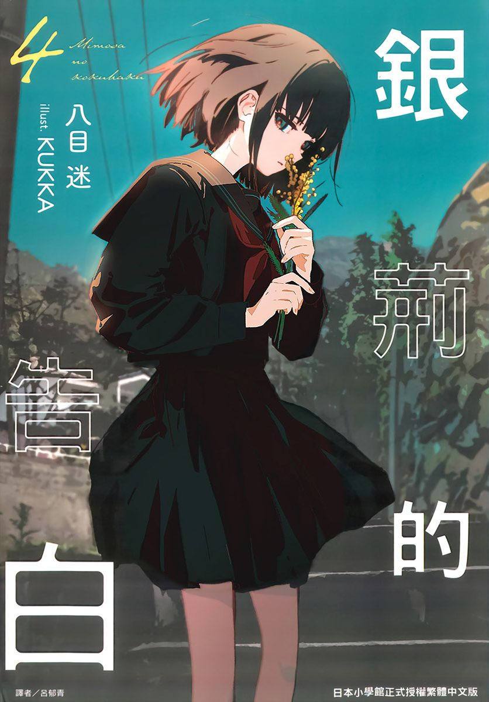 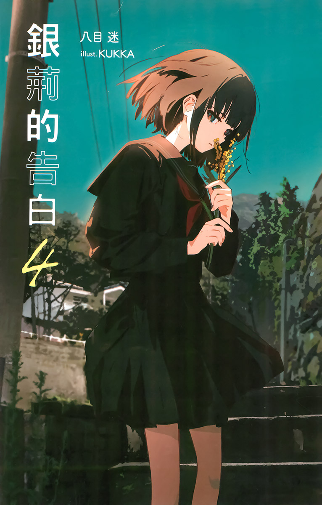 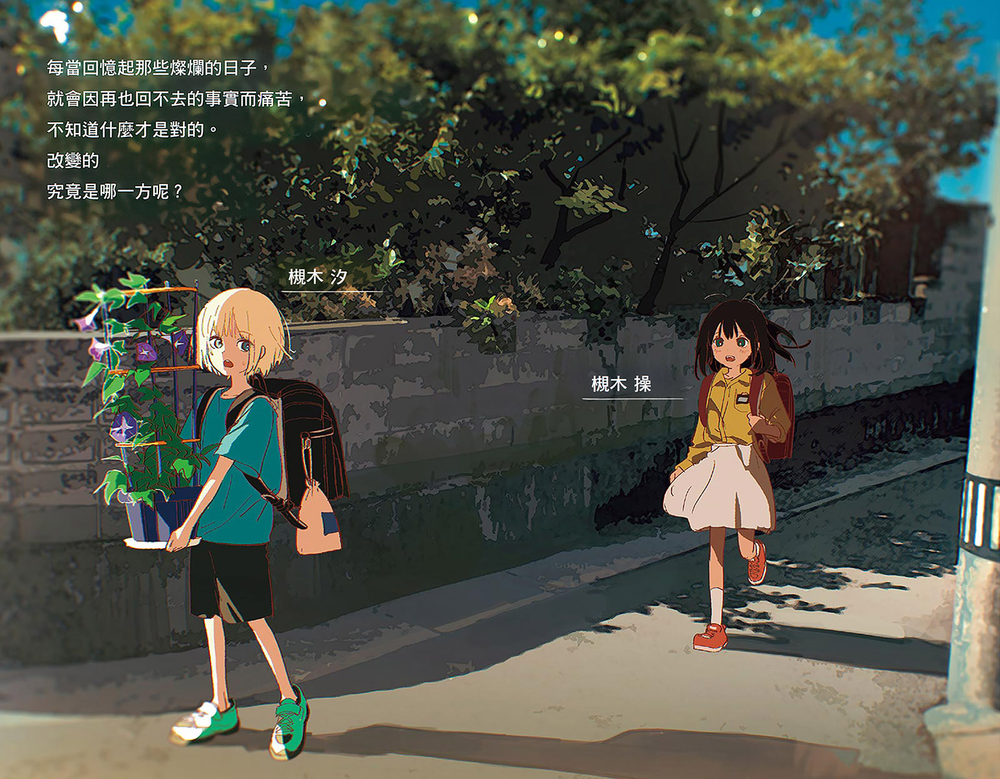 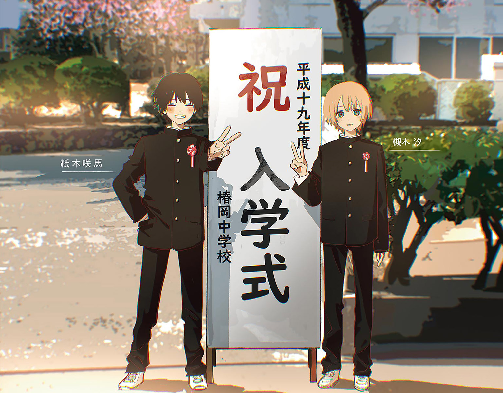 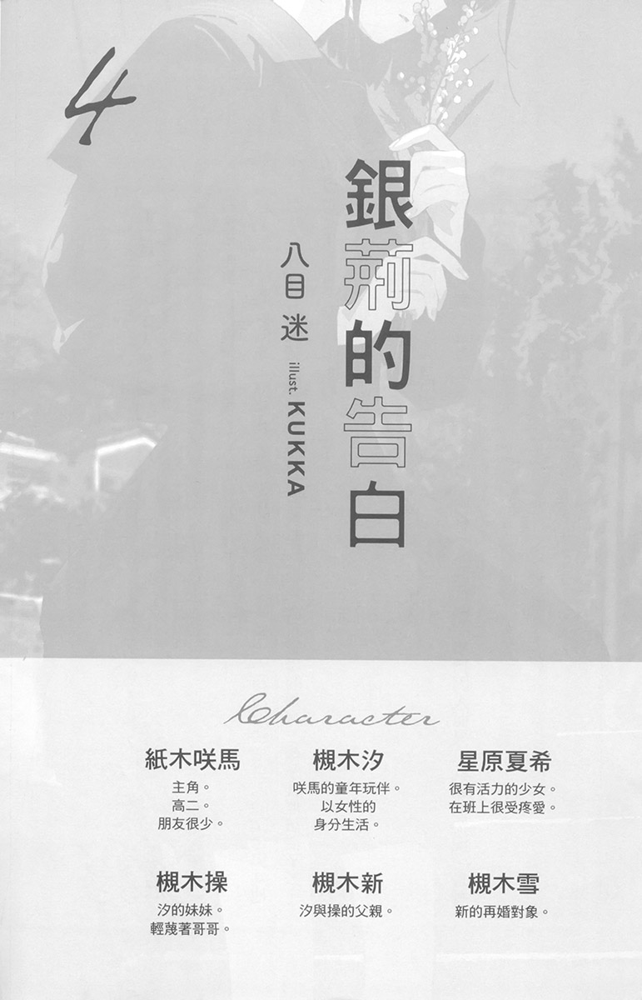
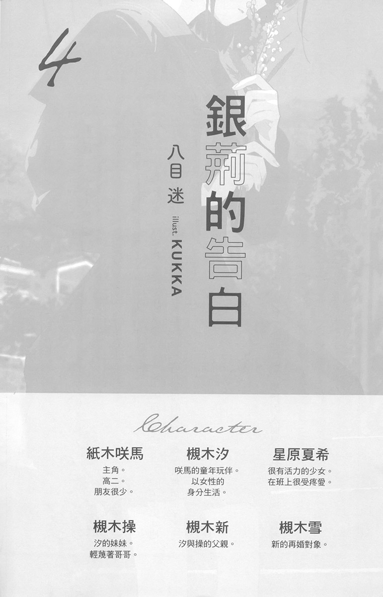
對孩子而言，父母相當於神。
忘了是什麼時候的事，但是我聽過這樣的說法。小時候，因為沒辦法把自己的父母與其他父母比較，所以不會懷疑父母的正確性。最重要的是，沒有父母的養育，孩子就無法活下去，所以對孩子而言，父母是絕對的存在。
既然如此，假如神不見了呢？
我知道這個問題的答案。
就是由其他事物，成為那孩子的神。
那可能是人類，或者故事、行為、認同感……取代神的事物因人而異，就我的情況，是離我最近的人。
槻木汐。
我唯一的哥哥，我最喜歡的家人，也是我的神。
然而那個人，如今——
「……你怎麼穿成這樣？」
正穿著我的學校制服，站在走廊上。
那是我十五歲的六月時的事。
我陷入輕微的恐慌狀態。那也是當然的，一回家就看到哥哥穿著自己的制服，怎麼可能保持冷靜？我不知道該說什麼，僵在原地。哥哥也一樣。他臉色發白，說不出任何話。
時間像是凍結了似的。
忽地，某種黑暗黏稠的什麼湧到胸口。
是厭惡？失望？還是悲嘆？
都不是。若非得用語言形容這份感情的話——對了。
就是使命感。
一旦理解到這份感情的名字，各種咒罵的話語就不斷從我口中傾洩而出。我不停地以激烈的言詞唾罵哥哥，宛如對罪人丟石頭似的——而哥哥似乎也明白自己犯了什麼罪，沉默地接受我的指責。
想法、話語，全都停不下來。
我破口大罵了一分鐘，或者五分鐘後，終於因為喘不過氣而住口。我嚥下口水，滋潤乾渴的喉嚨，此時哥哥就像逮到機會，光著腳衝出家門。
大門喀嚓一聲關上，寂靜沉重地壓在我肩上。除了我之外，家裡沒有其他人。天空早就全黑了，可以聽到遠方傳來的蟲鳴。
身體一下子失去力氣。強烈的虛脫感使我坐倒在走廊上。內在好像被全部掏空似的，完全使不上力。
哥哥可能再也不會回來了。我有這種感覺。就算他回來，應該也不是我認識的那個哥哥了。
不。
我真的沒有發現哥哥是那樣的嗎？
或者其實早就察覺了，只是不願面對呢？
不知道。就算知道，也不能怎麼樣。想到這裡，鼻子深處酸了起來。
——這樣，真的好嗎？
我一面等待身體恢復足以起身的力氣，一面回憶過去。
彷彿沿著長長的河流朝上方走，尋找使命感的來源。
【六個月前】
「吶，哥哥，為什麼？」
晚餐時，我再次質問哥哥。雖然剛才已經在房間裡爭論過了，但我還是無法接受哥哥的回答，覺得很煩躁。
那時的我，對許多事都感到煩躁。我朋友姬香說「那叫叛逆期」，但絕對不是。我的煩躁全是有明確理由的，不是叛逆期那種因為青春期而產生的情緒，是基於理論性的思考，覺得該生氣才生氣。
「妳真的很煩耶。我想怎麼做都可以吧？」
哥哥一臉厭煩地回我。
那是去年十二月，哥哥高一時的事。大我兩歲的哥哥。以前明明很溫柔，但大概在上了國中之後，就變得很冷淡。
「才不可以。我也知道她哦。她明明那麼漂亮，人又好……這樣太可惜了。」
「就算妳這麼說……」
哥哥含糊地回應，喝起味噌湯。銀髮如布簾般垂下，遮住哥哥的表情。那是遺傳自媽媽、如鏡子般的美麗頭髮。我也許遺傳到爸爸比較多，跟哥哥不一樣，頭髮是黑色的，所以從小就很羨慕哥哥。
「你們不要吵架。發生什麼事了嗎？」
原本默默吃飯的爸爸看不下去，總算開口了。
「哥哥在學校被人告白了。」
「操……！」
哥哥提高聲音責備我。「哦哦！」爸爸則讚嘆起來。
「挺行的嘛。汐很受歡迎呢。」
「可是哥哥拒絕了那個女生哦。她在國中時就有一堆男生喜歡耶。」
我們居住的這個叫椿岡的地方，是又小又封閉，但又團結到沒有意義的鄉下小鎮。不論任何大小事情，都會立刻傳開。尤其是戀愛方面的話題，傳得更是特別快。所以哥哥被誰告白、拒絕誰的告白的事，也馬上傳到我耳裡。一方面也是因為哥哥在椿岡很有名的關係就是了。
「我不會和沒有喜歡感覺的人交往。而且我們又不熟。」
「可是她人那麼好，很難得哦。」
「就說了，我沒興趣和不喜歡的人交往。是說妳幹嘛那麼堅持？這和妳又沒關係，不要多管閒事。」
有種血液衝上大腦的感覺。我可是關心哥哥才說的耶。
我正想反駁，玄關傳來開門聲。
那個人回來了。
我閉上嘴。這些話可以等吃完晚餐再和哥哥繼續談。
「我回來了——」
又黑又長的頭髮出現在視野邊緣。穿著外套的雪姨走進飯廳。
雪姨……我國一時，爸爸帶回家的再婚對象。但我不承認這個人是媽媽。哥哥肯定也和我一樣。
其實雪姨人不壞。應該說人很好。可是，我還是不想叫她「媽媽」。
「加班辛苦了。」
只有爸爸回應了雪姨的問候。
「謝謝。最近有夠忙的……不說那個了，害你要準備晚餐，對不起。」
「沒什麼啦。我只是把妳做好的菜加熱而已。」
雪姨走到裡面的房間，換上便服回來。她從廚房拿出自己的飯菜，在餐桌前坐下。
我開動了。雪姨有禮貌地說完，拿起筷子。
「今天很冷呢。」
雪姨先開口。
「是啊。」爸爸接話。
「明天好像會更冷哦。」
「是這樣嗎？差不多可以把暖桌拿出來了呢。」
「也好。等下次休假時拿出來吧。我也會幫忙的。」
「就這麼辦吧。」
雪姨的視線移動到我身上。
我稍微緊張了一下。
「操，妳的被子夠暖嗎？」
「還好。」
「那就好。會冷的話要說哦，我會從收納間拿其他被子出來的。」
我微微點頭，繼續吃飯。
飯廳沉默下來，電視上藝人們的笑聲顯得特別響亮。雪姨進入這個家之前，我們吃飯時不會開電視。不是因為邊吃飯邊看電視很沒規矩之類的，只是因為一直以來都那麼做而已。但雪姨來了之後，改變了那個習慣。
還有味噌湯的味道。
面紙的品牌。
放搖控器的場所。
在各種方面，與真正的媽媽還在時相比，都出現了變化。不論多微小的變化，只要我一發現，就會感到煩躁。
吃完飯，我一句話也不說，便起身離開。
洗完澡後，我回到自己房間，寫起學校作業。寫完後，我開始複習期末考前小考的考試範圍。明年我就要升國三了，差不該得考慮升學的事了。
我正翻著英文單字卡，桌上的手機振動起來，似乎有訊息。螢幕上顯示的訊息傳送人是『笹原姬香』，我拿起手機，點開訊息。
『晚安☆今天很冷呢，有空的話要不要講電話？』
姬香不喜歡傳訊息（正確來說，她似乎是不喜歡花時間等人回訊息），所以我和她大多是以電話聊天。我也覺得講電話比傳訊息更有效率，所以對她的要求沒有異議。我立刻撥打了姬香的電話。
「喂？姬香？」
『小操，妳現在在做什麼？』
「我在念書啊，期末考快到了。」
『啊——說的也是。快放寒假了呢。啊，我打擾妳念書了？』
「不會。反正我大概都會。」
『是嗎？真厲害。雖然我也快期末考了，可是這次好像會很慘……』
我和姬香從幼稚園就認識了。雖然在同一個游泳教室上課，不過小學和國中都不同學校。我念的是公立，姬香念的是私立學校。學校課業很難、同學都很聰明等等，姬香常對我哀號這些事。
『說到這個，妳已經決定好志願了嗎？我還在想要報考哪幾間學校。』
「我應該會把椿岡當第一志願吧。」
『哦，和哥哥同一間學校。我也報考椿岡好了。那邊離家近，而且還可以和妳當同學。』
「現在還不確定能不能考上啦。」
聽姬香那麼說，我很開心。我和姬香的友情，從幼稚園起就沒有改變過。不會改變的事物，使我感到安心。
我們閒聊了一陣子，我向姬香發問：
「如果被不認識的人告白，妳會怎麼做呢？」
『咦！？怎麼突然問這種問題？難道妳被誰告白了……？』
「不是我啦。」
『真的嗎？沒騙人？』
「我騙妳做什麼……」
真不知道姬香幹嘛這樣懷疑我。
『因為，如果妳交了男朋友，就沒時間和我講電話了吧……啊，不過我會支持妳的戀情，所以要跟我說哦！』
「快點回答啦。」
姬香發出小狗被罵一樣的啊嗚聲。
『唔——……應該會視對象而定吧。』
「如果是長得很帥，風評又好的人呢？」
『怎麼那麼具體……』
如果是那樣～該怎麼回答呢～姬香沉吟起來，感覺似乎很樂在其中。
『雖然會很煩惱……不過應該會拒絕吧。』
「咦——！為什麼？是很好的人哦！？」
『因為我會緊張啊……再說，向我這種人告白，說不定是玩大冒險輸了……』
「不不不，沒那種事啦。妳太沒信心了吧。」
這問題問姬香或許是個錯誤。
因為我想讓她答應交往，所以又幫告白的人追加了各種好條件，但姬香還是不肯答應。聽著她「唔——」或「可是……」之類的曖昧回應，我開始感到煩躁。
一般來說，都會立刻答應吧？但如果姬香的反應是一般人的反應，那麼我對哥哥說的那些話就是錯的了。怎麼能有那種事。
該怎麼說服，才能讓姬香積極地接受告白呢？當我正在苦惱時，旁邊的房間傳來聲響，似乎是哥哥進自己房間了。
「對不起，我該繼續念書了。」
『啊，好。那下次再聊哦。』
「嗯，下次再聊吧。」
我結束通話，把手機放到桌上。
我起身來到走廊，踩著冰冷的地板前進，敲響哥哥房間的門。
「什麼事？」
由於哥哥回應了，所以我走進房間。
哥哥正坐在裝了輪子的椅子上，把身體轉到我這邊。也許是剛洗完澡吧，他的臉頰有點紅。因為他的皮膚很白，所以紅得特別明顯。
「我想繼續談晚餐時的事。」
我在床鋪坐下。
哥哥的房間還是老樣子，收拾得很乾淨整齊。但是太簡約了，甚至看不出個性。房間裡的東西比我上次進來時更少。原本放在電視機下方的遊戲主機也不見了，是收到櫃子裡了嗎？
「可是我想寫作業。」
「很快就說完了。不過也要依你的回答而定就是了。」
「這算什麼？妳想審問我嗎？」
「如果你覺得是，那就是吧。」
「這樣啊……算了。有話就快說吧。」
我也不想拖太久，所以開門見山地發問。
「明明有那麼多人跟哥哥告白，可是你從來沒有和任何人交往對吧？」
哥哥訝異地睜大眼睛。
「妳怎麼知道？」
「我從班上同學那裡聽來的。因為你太出名了，所以你的八卦也會傳到我這裡。很多人都來找我問真相到底是怎麼樣。」
「很多人是誰？」
「很多人就是很多人。」
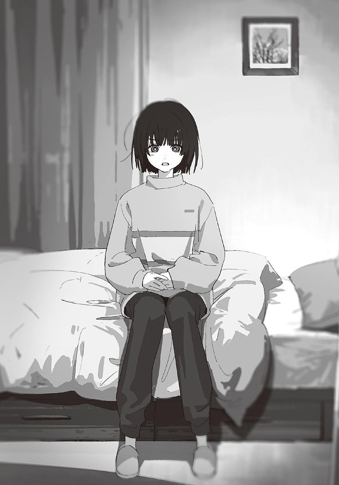其實只有三、四個人來問我而已。可是就我來說，已經夠多了。肯定有更多人沒有直接問，但其實想知道八卦。
哥哥雙手盤在在胸前，思考了一下後，以嚴肅的表情發問：
「操，杉橋同學對妳說了什麼嗎？」
「咦？」
我怔了一下。杉橋同學就是向哥哥告白的人。
「沒有啊……我根本沒見過她。為什麼這樣問？」
「我以為她拜託妳幫忙問我為什麼我拒絕她，或者覺得她哪裡不好……之類的問題。」
「沒有哦……咦？你沒有說原因就拒絕了她？」
「不，不是的。」
哥哥連忙否認。
「我有好好說明原因。因為我目前想以社團活動為重，不能被其他事分心。可是杉橋同學好像不太能接受我的說法。」
「……」
我心想，以社團活動為重的話就無話可說了。哥哥在田徑隊的成績很好，只要沒受傷，今後應該會非常活躍吧。但我還是覺得有些無法接受。
也許是感覺到我的疑惑，哥哥一臉麻煩地接著說道：
「……杉橋同學確實有點可憐。她應該有信心能告白成功吧，而且告白也需要勇氣。可是啊，到頭來，那還是其他人的事，和我無關。」
雖然這說法有點冷淡，可是哥哥說的沒錯。但我心中還是有無法釋懷的部分，以及無法用言語表達的疑問。我一面尋找著貼切的詞彙，一面開口：
「……哥哥，很多人都在說你哦。」
「又是很多人。」
哥哥厭惡地強調著那部分。
「說你理想太高，或者對女生沒興趣……被說成這樣，你也無所謂嗎？」
哥哥的表情剎那間僵硬了一下。畢竟那不是什麼好話，哥哥應該也沒辦法不當一回事。
「……無聊。」
最後，哥哥啐了一聲。他的語氣非常冰冷，使我有點狼狽。
哥哥正面凝視著我，開導似地說：
「聽好了，操。假如我和什麼人交往，確實能讓那種閒話消失。可是，妳不覺得為了避免被說閒話而隨便和誰交往，是很蠢的事嗎？再說，就算我和誰交往了，那些愛講別人閒話的人，還是可以挑出其他毛病說我閒話。」
「……是這樣嗎？」
「是。」
哥哥立即回答，接著深深靠躺在椅子上。
「因為，這裡就是這樣的城鎮。」
他以看開的語氣這麼說。我不禁感到同情。雖然我還有很多想說的話，但我已經沒有繼續對話的意願了。
「我知道了。」
我從床上起身。
在離開房間前——我說出最後一句想說的話。
「可別把我捲進你的閒話裡哦。」
我只留下這句話，就離開了房間。
隔天早上很冷。我被非上學不可的憂鬱籠罩，脫下睡衣，換上制服，趕在十分鐘之內出門。
我打開書包，檢查裡面的課本。雖然昨天晚上已經整理好書包了，但是出門前再檢查一次，是我的習慣。
「……啊。」
沒有電子字典。昨天忘了向哥哥借了。雖然也有紙字典，但是很重，我不想帶去學校。
哥哥要參加田徑隊的晨練，已經先去上學了。雖然覺得有點愧疚，不過還是直接去他房間拿吧。
我進入哥哥的房間。記得上次借電子字典時，哥哥是從書桌的抽屜拿出來的，這次應該也放在一樣的地方。
果不其然，電子字典在抽屜裡。能立刻找到電子字典，使我鬆了一口氣。
「嗯？」
我正想關上抽屜，不經意地發現抽屜深處有一個小袋子。
那是沒什麼特色的水藍色小袋子。假如不是在哥哥房間發現的，我應該不會再多看一眼。但是在東西愈來愈少的哥哥房間裡，出現了新東西……我不禁被勾起好奇心。
我拿起那個袋子。從外頭摸起來，袋身凹凹凸凸的，可以知道裡面放了許多小東西。我忍不住打開袋子，拿出其中的物品。
「這是……」
剪刀……不對，是睫毛夾。
我一一拿出袋子裡的其他東西。唇膏、腮紅、眼影……全是化妝品。
——這些，是哥哥的？
不，怎麼可能。男生才不會化妝。雖然最近的男生好像也會化妝，可是我從來沒看過哥哥化妝。
啊啊，我知道了。應該是女生朋友把化妝包忘在我們家，所以被哥哥收起來了。說不定不是女生朋友，是女朋友。別說被傳成八卦了，就連身為妹妹的我都沒發現，藏得很徹底的女朋友……
我把化妝品放回袋中，把袋子放回抽屜裡。
只不過是一點化妝品而已，沒什麼好動搖的。不管是誰的化妝品，都不關我的事。明明是那樣，為什麼我這麼心煩意亂呢？
存在於記憶中的許多微妙之處連在一起，成為某種可能。我搶在那可能成為明確的形狀前，走出哥哥的房間。
就在那時，媽媽說過的話閃過腦中。
『你要一直當操的好哥哥哦。』
不是雪姨，是我真正的媽媽對哥哥說過的話。
在這種時候想起那些話，一定有原因。
可是，我現在不想深入思考。
【兩年前】
「我想介紹一個人給你們認識。」
爸爸特地說「你」或「你們」時，都是談正事的時候。從他這次的聲音與表情，感覺得出是比過去都要認真的話題。
我升上國中已經兩個月了。在開始感覺得到梅雨氣息的某個夜晚，一家三口吃完晚餐後，爸爸突然那麼說。
「想介紹的人？」
我停下筷子發問。
其實我大概猜得到這是什麼發展，可是不想主動說出來。
「祖父江雪小姐……你們認識她吧？我即將再婚的對象。」
果然。
想再婚。今年初春時，爸爸第一次說出那句話。但其實在那之前，就已經有不少徵兆了。從某天開始，爸爸出門的次數開始增加，總是把自己外表打理得乾淨整潔，表情也變得比以前有活力。我本來以為是有了新的興趣——直到聽他說想再婚為止。
一開始，我覺得很困惑。「再婚」這個詞對我來說太生猛了，使我無法直視。我沒有反對的意思。因為我不希望讓在媽媽過世後，一個人辛苦地拉拔我和哥哥長大的爸爸感到困擾。我想哥哥肯定也一樣。
「好啊。」
哥哥回答。
他的反應很冷靜，就像在聊家常話題似的。雖然哥哥三年級了，但和我一樣是國中生，卻看起來很成熟，像大人似的。
「我本來就在想遲早要見面的。我沒問題。」
「是嗎？你這麼懂事真是太好了。操呢？」
「咦？啊，嗯。我也，沒問題。」
被哥哥影響，我也跟著點頭。其實我不太想和對方見面。就算聽說對方人很好，我還是不知道該和對方說什麼，也不知道該以什麼距離互動。
「不過有件事，我要先說清楚。」
也許發現我的困惑吧，爸爸又說：
「雖然對方人很好，不過你們不用勉強自己喜歡她。當然，你們也不用讓自己忘了媽媽。不論發生任何事，我都是站在你們這邊的，所以不要勉強自己口是心非哦。」
說完，爸爸發現了什麼似地笑了。
「這樣是三件事呢。」
一個星期後，雪姨來到槻木家。
很漂亮的人呢。這是我對她的第一印象。身材修長，背脊筆直。長長的黑髮在客廳燈光的映照下，出現一圈天使光環。
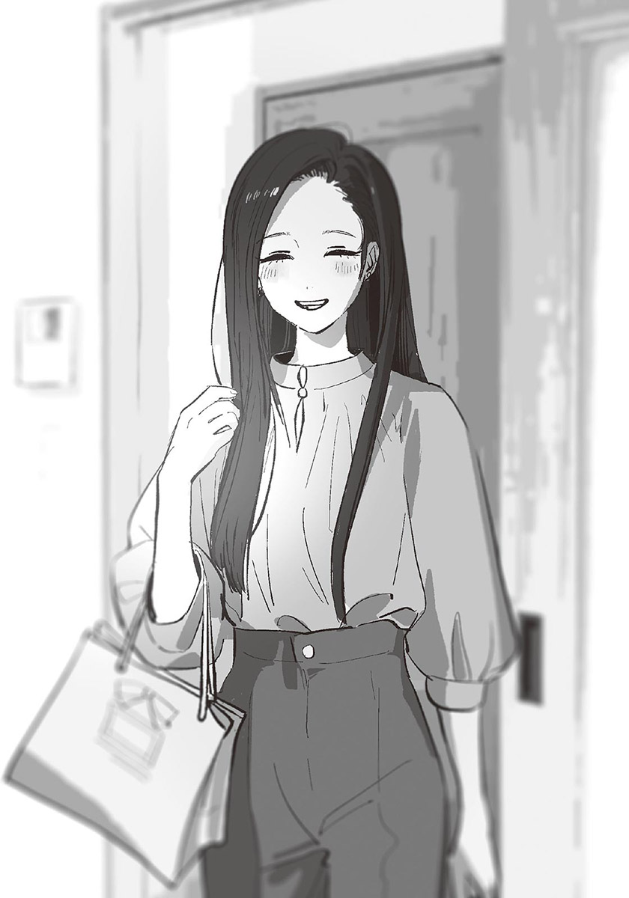雪姨來到坐在沙發上的我們面前，鞠了一個躬：
「你們好。我叫祖父江雪，今天請多指教。」
我們也連忙從沙發起身，向她回禮。
今天由爸爸展現廚藝。雪姨也去廚房幫忙。我和哥哥一起坐在沙發看電視，時不時地偷瞄廚房的情況。
「雪小姐，可以幫我削馬鈴薯皮嗎？」
「當然。我很擅長做菜的，要我幫什麼儘管說。馬鈴薯切成一口大小可以嗎？」
「可以可以。菜刀收在下面的櫃子裡，要拿哪把都行。」
「好。」
兩人似乎處得很好。那也是當然的，不然就不會想結婚了。
煮好菜後，我們來到餐桌坐下。雖然桌上的料理比平常豐盛許多，可是我沒有食欲。
吃飯時，雪姨向我和哥哥說了許多話。諸如「在學校過得怎麼樣？」、「有什麼興趣嗎？」、「兩個人都長得很好看呢」等。雪姨是很開朗，很健談的人。就像爸爸說的，人應該很好吧。可是我無法想像這個人變成我媽媽的未來。
吃過飯，收拾完畢後，雪姨就回家了。
總覺得一切在轉眼之間結束。我在沙發坐下，懶洋洋地靠躺在抱枕上。不久之後，哥哥也在我身邊坐下。
「辛苦了。」
爸爸慰勞我們。我確實覺得很累。因為一直小心翼翼，沒有多餘的心力享受美食。
「你們覺得雪小姐怎麼樣？能和她好好相處嗎？」
……不知道。如果她是社團顧問或家教老師，我一定沒有任何意見。可是成為媽媽的話，就另當別論了。我沒辦法輕易同意。
可是哥哥毫不猶豫地點頭。
「嗯。我覺得她人很好。」
「那就好……操，妳覺得呢？」
「嗯……和哥哥一樣吧。」
是嗎？爸爸露出像是放心、又像覺得不夠明確的表情。也許是想知道更具體的感想，或者看穿了我的口是心非吧。
「就算是小事也沒關係，如果有在意的地方，一定要說出來哦。」
爸爸說了像刑偵劇裡的警察般的話後，去放洗澡水了。客廳只剩我和哥哥。
「……所以你的真心話是什麼？」
我向哥哥發問。當然是指雪姨的事。
「真心話……就是剛才說的啊。」
「真的嗎？」
哥哥嘆了口氣，費力地開口：
「……我是真的覺得雪小姐人很好。」
「這樣啊。」
人很好，和能不能好好相處是兩回事。這麼一想，我多少恢復了點活力。
「那個人，和媽媽有一點點像呢。」
「嗯……妳也這麼想啊？」
「長相完全不一樣，可是動作還有說話方式，會讓人想到媽媽。」
「是啊。」
「爸爸果然很寂寞吧。」
「……」
哥哥沒有回話。他以極為無趣的表情，看著電視畫面。
我想多套出一些哥哥的想法，所以繼續說下去：
「可是啊，我覺得這樣有點無情呢。」
「……妳說誰？」
「爸爸。他明明那麼喜歡媽媽，可是又想和其他人結婚。他不覺得對不起媽媽嗎？」
「操。」
哥哥以冰冷到極點的聲音叫著我名字。我忍不住發毛。
「妳絕對不能對爸爸說那句話喔。」
那種不容我辯解的強烈語氣，使我覺得自己像是被重重打了耳光。接著，強烈的羞愧湧上心頭，讓我知道自己說了多無腦的話。不是從理智，而是從感情上明白的。
「我、我知道啦！我又不是真心那麼說的！」
我從沙發上起身，走回自己房間。
也不用說成那樣吧——我在心裡抱怨。我本來就根本沒打算對爸爸說那種話，而且說到底，我也不是真心那麼想，我只是想知道哥哥的反應而已。不過就這點來說，我算是達成目的了……
我走進房間，倒在床上。
哥哥變了。小學時，連蟲子都不敢殺的他，在上國中後變得很冷漠。總是淡淡的沒什麼表情，也不太笑了。
我大概知道原因。
因為媽媽死了。還有咲馬哥的事。
而那兩件事，都不是我能插手的問題。
「唉……」
好憂鬱。
雪姨成為家庭的一員的話，能讓情況好轉嗎？
我完全不那麼認為。
與雪姨吃飯的三個月後，爸爸和雪姨結婚了。祖父江雪變成了槻木雪，我家變成四人家庭。
雪姨是職業婦女，不過也會和爸爸一起分工做家事。雖然一開始時分不清楚東西南北，不過她學習能力很好，沒過多久就能一個人煮晚餐和做便當了。
雪姨的廚藝很好。不但菜色變化豐富，分量也抓得很剛好。我老實地說「很好吃」時，雪姨非常開心，更加賣力做菜。
可是，我從來不曾覺得晚餐時間很愉快。
愈覺得雪姨的料理好吃，我就愈想念媽媽那調味過重的料理。如果是爸爸的料理，我明明不會有任何排斥的感覺，為什麼雪姨的料理會如此負面地影響我的心情呢？不只是料理，我洗過的內衣褲被雪姨折好，或者她在接電話時說「這裡是槻木家」時，我都有一種像是被指甲刮過心中柔軟部分的感覺。
就連我自己都覺得這樣有點……不，是過度敏感了。
說到敏感，那時候也是。
某個假日的早晨，我正在床上睡覺，由於窗簾被唰地拉開，所以我睜開眼睛。雪姨背對著我，站在逆光的窗口。還沒睡醒的我，把那纖細的背影和最喜歡的人的身影重疊了。
「媽媽……」
我半睡半醒地說著。
那道背影回過頭。
「早啊，操！今天天氣很好呢！」
媽媽的身影在一瞬間消失了。
我整個人清醒過來，臉變得火燙。好死不死，竟然把這個人和媽媽弄混——自責和羞愧使我從床上跳起來。
「不、不要隨便進我房間啦！」
雪姨驚訝地瞪大眼睛，表情變得狼狽。
「對、對不起！因為天氣很好……」
「我會自己起來的。不要把我當小孩子。」
「也是呢……」
當時見到雪姨的表情，我心想糟了，我說得太過火了，感到很後悔。我猶豫要向她道歉，可是已經來不及了，因為雪姨已經離開我房間了。
從那天起，我開始躲著雪姨。因為我覺得很尷尬。
我不是討厭她。也許會被當成難搞的小孩吧，可是我不知道該和她說什麼。就算雪姨主動和我說話，我也只會冷淡地回應，不看她的眼睛。
但雪姨還是和以前一樣，開朗且不會過分客氣地對待我。
不管什麼時候，雪姨都很有活力。那模樣有時令我很想翻白眼。明明很難受，明明對我很不爽，還要隱藏真心，扮演母親的角色——我忍不住這麼懷疑。
……其實應該不是那樣吧。
說不定，我只是在找不能接受她的理由而已。
「操，妳想吃鬆餅嗎？」
週六的早晨。
哥哥去社團了，爸爸要工作，家裡只剩我和雪姨兩人。我洗完臉，從廁所出來後，雪姨對我說：
「我聽妳爸爸說妳喜歡吃鬆餅。家裡剛好有材料，要不要吃呢？」
我確實喜歡鬆餅。以前媽媽說要做鬆餅時，我都會開心到蹦蹦跳跳。仔細想想，已經很久沒吃鬆餅了。
我煩惱了一下，點頭同意。雪姨笑得燦爛如花。
「好！妳等一下哦，馬上就做好了。」
我看著雪姨開心地進廚房，在沙發坐下。
我不想讓關係一直這麼尷尬。而且我也有接受雪姨的心情。既然她主動靠近，那麼我也不介意往她靠攏半步。
之前說過好幾次了，我不討厭雪姨。可以的話，我也想喜歡她。
廚房飄來好吃的香味，我肚子咕嚕叫了起來。依鬆餅的成果，我可以稍微原諒雪姨——妳那是什麼高高在上的心態啊？連我自己都這麼想。
「久等了！」
雪姨把熱騰騰的鬆餅端了過來。
正圓形的鬆餅，上面放著方形的奶油。看起來就像餐廳廚師做的那麼標準。我把旁邊的楓糖漿淋在鬆餅上，拿起刀叉，把鬆餅切成八等分後，將其中一小片送入嘴裡。
「怎麼樣？」
坐在我正對面的雪姨有點緊張地問我的感想。
雪姨做的鬆餅很好吃。有厚度又柔軟，口感綿密，還帶著一點香草味。外觀也很漂亮，是均勻的茶色，而且沒有任何燒焦的部分。
我想起媽媽做的鬆餅。
媽媽的鬆餅吃起來更乾更硬，而且應該焦掉了。就算跟她說鬆餅粉的袋子上寫著「請讓平底鍋冷卻後再繼續調理」，她也只會回「沒差啦」，不聽我的話。雪姨的話，一定會先把鍋底放在溼抹布上降溫後，再煎下一片吧。
我再把一小片鬆餅送入口中。
果然很好吃。
原來如此。
我媽媽做的鬆餅，是不怎麼美味的鬆餅。
「夠了。」
「咦？」
我放下刀叉，站了起來。繼續吃的話，好像會忘了媽媽的味道。雪姨的存在，會洗掉我對媽媽的回憶。
「等、等一下。妳沒有食欲嗎？還是……覺得不好吃呢？」
雪姨不安地發問。和那時候一樣的表情。我把幫我拉開窗簾的她趕出房間時的表情。感覺像是在說我是不懂事的小孩。事實上就是這樣。就算媽媽過世了這麼多年，我仍然掛念著媽媽的事，是又寂寞又任性的小孩。
啊，不行了。繼續待在這裡，我會哭出來的。
「……我還有點睏，我去睡覺了。」
「難道是哪裡不舒服？有沒有發燒？要不要量一下體溫？」
「沒事。」
「可是……」
「不要管我啦！」
我忍不住大叫。
雪姨困惑的表情，使我的胸口刺痛不已。為了消除罪惡感，我快步離開客廳，回到自己房間。
我倒在床上，把臉埋在枕頭裡。
如果雪姨的廚藝很差……如果她是做事更粗線條的人，我應該不會產生這種感情吧。但就算這麼假設，也沒有意義就是了。
那天晚上，哥哥來我房間找我。
「操，妳對雪姨太冷淡了吧？」
哥哥居高臨下地看著坐在床上的我。
有那麼一瞬間，我心臟狂跳，以為他是為了鬆餅的事來的。可是今天早上他和爸爸都不在家，而且雪姨應該不會把鬆餅的事告訴哥哥。所以，哥哥應該是在說我平時的態度吧。
「沒有啊。我的態度很普通吧。」
「哪裡普通了。說話時完全不看雪姨的眼睛，有時候還直接無視她。就算妳再不喜歡她，她都是爸爸的再婚對象，要跟她相處融洽。」
我差點笑出來。
「因為是爸爸的再婚對象？不是因為她是我們的媽媽？你還不是不承認那個人。」
「但是我沒有表現出來。」
「看吧，你沒有否認呢。我才不想被這樣的你糾正。」
感覺被說教了一番，所以我不禁以反抗的態度回擊。再說，我對哥哥也有不滿的地方。最近哥哥完全不關心我。我也知道他忙著社團和升學，可是我想和他一起玩。儘管我知道這願望有多幼稚。
哥哥露出厭煩的表情。
「如果雪姨離開的話，要怎麼辦？所有的事又會全都落在爸爸頭上哦。」
「我也會做家事啊。也有努力學煮菜。」
「小孩子能做的事有限。而且妳又不會賺錢。」
「我可以打工。」
「沒有國中生能做的打工啦。」
「有啊。比如送報紙……」
哥哥把手按在額頭。
「為什麼要那麼堅持？妳到底怎麼了？」
「還不是因為你……」
「我？」
——因為你，不關心我。
就算嘴巴爛掉，我也不想把這話說出來。
「……你也變了啊。以前明明很溫柔，現在卻變得很冷淡。如果說我變了，都是你的錯啦。」
我勉強改變說法。哥哥眼神飄忽。
「這種說法……根本是在牽拖。那是妳的問題，怪到我頭上，我會很困擾的。」
「才不是。」
「本來就是。」
「不是就不是。」
我腦中的單字量不多，只能跳針說同樣的話，就像笨蛋一樣。如此幼稚的自己令我很不甘心，眼淚都快掉下來了。
「真是的……好好聽話啦。我也是很忙的。」
哥哥那充滿餘裕的態度，刺激著我的自尊心。
「……有什麼好忙的？咲馬哥的事？」
「什麼？」
哥哥動搖了。
我知道咲馬哥對哥哥很重要。說這種話像趁人之危，我實在不是很想戳他的弱點，可是我也不想一直被指責。
「才不是。為什麼會扯到咲馬？」
「因為你在乎的事，幾乎都和咲馬哥有關係。」
「那是多久以前的事了？現在已經不是那樣了。再說……我已經很久沒和咲馬一起玩了。」
直到小學畢業為止，哥哥和咲馬哥幾乎天天玩在一起。可是上了國中後，咲馬哥開始明顯地避著哥哥，哥哥因此很難過。
因為社團很忙，所以咲馬哥才會和哥哥漸行漸遠？不只那樣而已，有其他更重大的原因。雖然我知道，可是哥哥應該沒有發現吧。不過我也不打算告訴哥哥。因為就算說了，也不能怎麼樣。
「……咲馬哥一定已經不想理你了。」
「！」
哥哥的臉一下子變得通紅。啊，惹他生氣了——我心想，反射性地看著下方，緊繃著身體，做好被罵的準備。可是等了半天，哥哥都沒有說話。
我戰戰兢兢地抬起頭，看到戴著面具般，面無表情的哥哥。
「算了。隨便妳。」
哥哥說完，轉身離開。
後悔湧上心頭。我可能有點刁難過頭了。不該用咲馬哥的名字讓哥哥感到不安的。
這種情況，應該得道歉才行吧。
我站了起來，心懷緊張地想叫住哥哥。哥哥走到門口，回過頭，以冰冷的眼神看我。
「就算因為妳而害他們離婚，我也不管了。」
說完，哥哥離開了。
我僵在原地，無法動彈。胃部沉甸甸的，就像吞了鉛塊似的。
……我確實不該說那種話。明明知道哥哥為了咲馬哥的事消沉了好一陣子，還拿他的弱點攻擊他。
可是……哥哥也不用說成那樣吧。
鼻子酸酸的。我用力咬住嘴唇，以疼痛轉移傷心和懊悔。
仔細想想，我有多少年沒和哥哥吵架了？說起來，我曾經和哥哥吵過架嗎？我們的關係一直比別人都要好，像鑽石一樣耀眼又堅定。
那時候，多麼快樂啊。
如果……咲馬哥一直和哥哥在一起，就不會變成這樣了嗎？
【四年前】
嗶嗶嗶。我按下鬧鐘。
陽光從窗簾的縫隙鑽進房間。我從被窩中坐起，打了個冷顫。天氣很冷，一點也不像三月。
「嗚嗚，好冷好冷……」
我一面摩擦著自己的肩膀，一面下床。房間另一頭的床鋪是空的。看來哥哥今天也出門跑步了。
想到只能和哥哥同房到這個月底，就有點寂寞。下個月會有工人來做隔間，把這房間分成兩間。雖然我覺得現在這樣也無所謂，不過哥哥說想要有自己的空間。是說哥哥再過不久就要上國中了，分房才是正常的吧。
我剛走下樓，大門就被打開了。
「啊，操，早啊。」
哥哥回來了。
他好像剛結束晨跑，臉紅紅的，額頭上有汗水。
「早。你今天比平常早起呢。」
「是啊。因為今天是畢業典禮。」
哥哥坐在玄關，開始脫鞋。
他是從一年前開始練跑步的。在那之前，他從來沒有主動跑步過，而且我一直覺得哥哥的運動神經很差，所以他剛開始跑步時，我很驚訝。
哥哥說，不活動身體的話，會很難保持冷靜。
而且跑步時，可以不去想討厭的事。
「跑步很快樂嗎？」
「很快樂哦。下次要不要一起跑？」
「唔～我考慮。」
我走進浴室，開始洗臉。不久後哥哥也走了進來，脫下外套與上衣，擦掉身上的汗水。隔著鏡子看到的哥哥身體，又白又纖細，和爸爸的體格完全不一樣。哥哥以後也會變壯嗎？總覺得難以想像。
哥哥突然朝我看來。
「不要一直看啦。」
他困擾似地笑著叮囑我。
哥哥對他人的視線很敏感。假如偷看他，有很大的機率會被他發現。「對不起。」就算撒謊也沒用，所以我老實道歉。
我們走出浴室。客廳的暖氣是開著的，應該是爸爸開的吧。
我們開始準備早餐。哥哥在吐司上抹奶油，我沖泡我和哥哥的熱可可。就在我以湯匙攪拌熱水中的可可粉時，爸爸走進客廳。他剛才似乎是去晾衣服了。
「哦，你們早啊。」
早。我和哥哥回答。
爸爸來到廚房，「謝啦。」他對正在抹吐司的哥哥說完，開始煎培根蛋。廚房不大，擠了三個人，變得很狹窄。
「爸爸，你要咖啡嗎？」
「好。操，謝謝了。」
準備好三個人的早餐後，我們在餐桌前坐下。
「我開動了。」
我們一齊說完，開始吃早餐。
平穩的時間，有如滴落的蜂蜜般緩緩流逝。
「畢業典禮是幾點？」
我一面吃吐司，一面問哥哥。
「九點。不過典禮開始前大家好像要做點什麼，所以我得早點去學校。」
「要做什麼？」
「不知道。不過是最後一天了，應該是一起玩吧。」
或者是拍照吧？哥哥加了一句。
今天是哥哥的畢業典禮。從四月起，他就是國中生了。我則是升五年級。這幾年發生了很多事，讓我覺得時間過得很快。
「啊，對了。」
哥哥想到似地開口：
「上國中後，我想加入社團。」
哦～爸爸對這句話有了反應。
「那不錯啊。說到國中，就會想到社團呢。你想加入哪個社團？」
「田徑隊。」
「是嗎？因為你很喜歡跑步嘛。我覺得很適合你哦。」
「咲馬哥也會一起加入嗎？」我一面喝著熱可可，一面問道。
「嗯。雖然他好像還在猶豫要參加什麼社團，不過我問了他要不要一起參加田徑隊之後，他說好啊。」
「哥哥主動找咲馬哥，很難得呢。」
「因為以前都是我追著咲馬的背影嘛。既然要升國中了，我也想振作一點，不要老是依賴咲馬。」
雖然這決心很好，可是哥哥好像沒想過和咲馬哥加入不同社團的事。不過那也是當然的。以前光是換座位，不能和咲馬哥坐在一起，他就消沉了一整天。所以當然會想和咲馬哥相處久一點了。
吃完早餐，爸爸正在洗碗，門鈴響了起來。
「汐～上學囉～！」
門外傳來響亮又有活力的聲音。根本沒必要按門鈴吧。
「真是的。就說這樣會吵到鄰居了……」
雖然哥哥嘴上抱怨，不過看起來很開心。
自從「那天」起，只要是上學的日子，咲馬哥就像這樣，每天來接哥哥上學。
「汐，在出門前……」
「嗯，我知道。」
哥哥回應完爸爸，透過對講機向咲馬哥說「等一下」。
「操，妳也過來吧。」
知道要做什麼的我點頭。三個人一起走向和室。
那裡有佛壇，以及媽媽的牌位。
我們跪在佛壇前，爸爸對媽媽的照片說：
「今天是汐的畢業典禮哦。雖然以後就看不到他揹小學書包的樣子了，有點可惜，不過妳也想看他穿國中制服的樣子對吧？還有，汐說想加入田徑哦。媽媽要保祐他在社團有好成績哦。」
哥哥以不知道該怎麼形容的表情看著媽媽的照片，最後只說：
「我出門了。」
說完，他起身走出和室，和外頭的咲馬哥會合。兩人的說話聲傳進屋子裡。
「汐，早啊！我們快點去學校吧。趁畢業典禮前去操場踢罐子！」
「欸？今天是畢業典禮哦？」
「就是因為要畢業了嘛。上國中後就不能那樣玩了。」
「我覺得上國中還是可以踢罐子啊……」
兩人的說話聲愈來愈遠，最後完全聽不到了。
爸爸說著「走吧。」站起身，我也回到客廳。
媽媽過世已經快兩年了。
那段日子，就算不願意，我也明白了什麼是親人死去的悲傷。再也聽不到從廚房傳來的輕快歌聲，也沒辦法把臉埋在又軟又大的胸部裡了。光是想到這裡，我就覺得胸口快被撕裂。
媽媽剛過世的那陣子，我和哥哥不再上學，也幾乎不出門，只是一直待在家裡。爸爸沒有特別安慰或斥責把心封閉起來的我們，而是理所當然地讓我們在家療傷。
之所以能走出那種情況，有很多原因。
因為時間沖淡了悲傷。
因為什麼都不做的日子太無聊。
因為對爸爸感到愧疚。
可是，就哥哥的情況來說，他走出家門最重要的原因，應該是咲馬哥。
我們不去學校後，咲馬哥常常來我們家。起初，他只是把學校發的講義拿到家門口而已，後來他開始上樓走進我們房間。我和哥哥都不希望被打擾，也把態度表現在臉上，咲馬哥應該也有發現吧。可是他完全不在乎地熱臉貼冷屁股。到最後，是哥哥先認輸了。
「……真拿你沒辦法。」
在數不清是第幾次的來訪時，哥哥笑著對咲馬哥這麼說。那是媽媽離開後，哥哥第一次露出的笑容。
大約一個星期後，哥哥開始上學。我也追著哥哥，走出房間。因為我沒辦法忍受一個人長時間的寂寞與無聊。
老實說，我有點羨慕哥哥。因為我沒有像咲馬哥那樣的好朋友。在我不去學校的期間，雖然也有關心我，來家裡探望我的朋友，可是她們都不像咲馬哥那麼設身處地為我著想。不過姬香有寫信鼓勵我就是了。
也許我該更積極地交朋友吧……雖然我那麼想過，可是又覺得只要有哥哥就好了。
就算我沒有朋友，就算哥哥和咲馬哥再怎麼要好，也無法讓我和哥哥的兄妹關係產生裂痕。這麼一想，我就能站起來，面對痛苦的現實。
——那時候，我對這件事深信不疑。
哥哥的畢業典禮與我的休業式結束後，春假到來。
那段時間，已經不是小學生，但也還不是國中生的哥哥過得很快樂。上國中後，應該會忙著社團的練習吧，所以那陣子，他每天都和咲馬哥玩在一起。我也常和他們一起玩。
今天也是。
附近的公園裡，哥哥和咲馬哥一起擺出起跑的預備動作，我站在他們旁邊，看著前方，完成我的任務。
「預備——」
跑！我喊完，兩個人立刻拔腿奔跑。捲起的風，使我的瀏海搖晃了一下。兩人朝著終點的櫻花樹做直線衝刺。
是咲馬哥提議賽跑的。
在我的記憶中，這是他們第二次比賽跑。第一次是在兩年前。那時候是哥哥輸了。咲馬哥很好動，運動神經很好，所以我覺得那結果很正常。不過這次就不知道誰輸誰贏了。因為哥哥一直有在練跑步，說不定會贏。
大約過了十秒，兩人抵達終點的櫻花樹下。因為從這裡看不出結果，所以我朝他們跑去。
兩個人都用手撐著樹幹，大口喘氣。
「我輸了……」
說話的，是咲馬哥。
「哥哥贏了？好厲害！恭喜！」
「沒想到我會贏……」
哥哥似乎很意外。表情與其說開心，更像是驚訝。
咲馬哥做了一個大大的深呼吸後，露出欣喜又清爽的表情。
「汐，你真厲害。以前明明是我比你快……我想你應該是班上跑最快的人哦。」
「咦～真的嗎？」
「真的。所以你要更有自信哦。」
哥哥有點難為情地笑了起來。
「是嗎？我變快了呢……」
他看起來真的很開心。
咲馬哥靠著樹幹向下滑，坐在地上。坐在那裡會弄髒褲子啦。我正想這麼說，哥哥也學著咲馬哥坐下來了。欸……我心想，小心不讓屁股碰到地面，在哥哥身邊抱著膝蓋蹲下。
「汐，你變了很多呢。」
「是嗎？」
「應該是從升六年級起吧？變得很可靠……該怎麼說呢，變得什麼事都做得很好呢。」
「哦……唔，大概吧。」
「而且每天早上都會跑步對吧？太厲害了，我絕對做不到。」
「沒什麼大不了的啦。我只是……」
哥哥稍微垂下視線，散發出一種老成的氛圍。剛才難為情的笑容就像假的似的。
「我只是覺得，必須更振作才行。因為媽媽已經不在了……再說——」
哥哥看向我。
「我是操的哥哥啊。」
雖然是理所當然的事，不過哥哥在朋友面前直接這麼說，令我喜不自勝。沒錯。槻木汐是我的哥哥，從出生起就是了。而且今後也不會改變，我們會一直是兄妹。
——哥哥會一直是我的好哥哥。
因為他也跟媽媽這樣約好了。
「太、太了不起了……比起來，只會和妹妹搶冰吃的我實在很幼稚。」
「我覺得那是感情很好的證明哦。」
「你和操也會那樣嗎？」
我和哥哥對看一眼。
我回憶往事，想不出那種情況。不管點心或其他，只要是我想要的，哥哥通常都會讓給我。因為哥哥對我很好。
「不會。應該說，我們沒有吵過架吧。」
「真的假的？我和彩花根本是天天吵架呢。那傢伙對我超嚴的。至於媽媽每次都說會吵架代表感情好，從來不介入。」
會吵架代表感情好。雖然常聽到這句話，但我不那麼認為，甚至覺得那是騙人的。因為從來沒吵架過的我和哥哥，感情比其他人都好。
「而且幾乎每次都變成我的錯。你不覺得這樣很過分嗎？」
「哈哈……咲馬你也真辛苦。」
我突然想到一件事。
「咲馬哥和哥哥有吵過架嗎？」
應該沒有吧。我心想。「沒有。」「沒有哩。」兩人果然異口同聲地這麼說。
「仔細想想，還真不可思議。我們個性明明差那麼多，卻很合得來。選班級幹部時也是，我和汐都舉手想當圖書股長呢。」
「啊……是說我還以為你會報名體育股長。」
「雖然我這個樣子，其實我很喜歡看書哦。」
最後一句話讓我笑了。咲馬哥看起來確實不像會看書的人，可是每個月都會和我們去圖書館一次，所以他是真的喜歡看書。
「我記得你們連社團也要選一樣的呢。」
我說。
咲馬哥的表情，緊張了起來。
「啊，說到這個……」
咲馬哥的聲音愈來愈小。
「其實，我想加入網球社。」
「咦！？」
哥哥以難以置信的表情看著咲馬哥。
「你不是說想加入田徑隊嗎……」
「對不起！因為我想在升國中後，挑戰以前沒做過的運動……」
咲馬哥雙手合十，認真地道歉。看來是鐵了心反悔和哥哥做的約定了。看不過去的我開口：
「這樣不行啦。哥哥可是很期待和咲馬哥一起參加田徑隊的哦。」
「我知道……真的很對不起……」
雖然咲馬哥真心道歉，可是好像不想收回剛才的話。
該用更嚴厲的話責備他嗎？我正想讓自己生氣，「真沒辦法。」哥哥已經先嘆氣了。
「不用道歉啦，改變心意也是常有的事。」
「咦～哥哥你真的無所謂嗎？」
「是啊。因為咲馬幫了我很多忙嘛。」
「汐～」咲馬哥故意用哭音叫著哥哥的名字。
「有你這樣的朋友真好～」
「太誇張了啦。」
哥哥意外地冷靜。因為他總是黏著咲馬哥，我還以為他會更消沉的。如果兩人加入不同的社團，在一起的時間應該會少很多吧。這樣真的無所謂嗎——我本來還很擔心的——
「我也加入網球社好了。」
「咦？」
咲馬哥意想不到地睜大眼睛。
「因為我也想挑戰新的運動嘛。再說，只是跑步的話，不一定要加入田徑隊啊。」
「不，這個……」
咲馬哥欲言又止。我感覺懂他的想法。
「……不行啦。你不該加入網球社。」
「咦！為什麼……？」
「因為你本來就想加入田徑隊啊。既然如此，就該參加田徑隊。雖然說反悔是我不好……可是，你不用特地配合我。」
我的想法和咲馬哥一樣。
「可是，那樣的話……」
哥哥的眼神出現不安。
他果然還是老樣子。比起做想做的事，和咲馬哥在一起更重要。可是他的想法傳不進咲馬哥心中。
「沒問題的啦！就算沒有我，你一定也能在田徑隊活躍的。因為你贏了我哦。要更有自信啦！」
啊，不是那個問題——我心想，瞥了哥哥一眼。他果然露出微妙的表情。
「……說的也是。那我還是加入田徑隊吧。」
哥哥好像放棄和咲馬哥加入同一個社團的念頭了。這樣很好。就算說出真心話，也只會讓咲馬哥困擾而已。而且很丟臉。
「不用擔心啦！」咲馬哥對消沉的哥哥說：
「就算不同社團，我們還是好朋友啊。放假的時候，還有社團結束後，還是能一起玩的。」
「嗯……！」
啊，稍微恢復精神了。事情和咲馬哥有關時，哥哥就變得非常好懂。雖然這樣的哥哥感覺有點太好哄了，不過就結果來說，算是好的吧。
「我們來做那個吧。」
咲馬哥說完起身，舉起右拳。哥哥也站了起來。因為知道「那個」是指什麼，所以哥哥臉上帶著笑容。
咚，兩人的拳頭輕輕碰撞。
最近我常看到他們做這個動作。這是咲馬哥發起的。畢竟是咲馬哥提議的，所以他好像很喜歡這個動作，可是哥哥每次做起來都很生硬。
「總覺得很不習慣呢。」
「要試試其他的嗎？」
咲馬哥說著，開始和哥哥做「其他的」特訓。
從上到下或從下到上擊掌兩次、互相碰撞手臂，最後把手疊在一起……感覺像在模仿外國足球選手的動作。由於動作很複雜，所以哥哥老是記不住。
咲馬哥看著哥哥的樣子，坦然說道：
「汐，你的手和女生一樣呢。」
【+】
咲馬哥應該只是單純地說出感想而已，可是我對那種說法很沒有好感。每次聽到男生說其他男生「像女生」時，我都感覺是看不起對方或故意嘲笑人。咲馬哥應該沒有惡意。可是哥哥應該會不高興吧？我心想，偷看哥哥的反應。
哥哥的臉紅到像是會從頭頂冒出蒸氣似的。他輕咬嘴唇，稍微低下頭。啊，果然不高興了——我如此解釋。
「不能那樣說啦。快點跟哥哥道歉。」
「沒有啦，我只是想說汐的手很好看……」
「快點！」
我大聲強調，咲馬哥狼狽地看著哥哥。
「對、對不起。是我錯了。」
哥哥猛地抬頭，回過神似地眨眼。
「咦？沒、沒關係啦。我一點也不在意哦……」
哥哥看起來非常不冷靜。我本來以為是因為打擊太大，但哥哥的嘴角是上揚的，看起來像是在忍笑，或者品嘗喜悅。
——他沒有生氣？
兩人無視困惑的我，開始嘗試新的慶祝動作。
隔天，就像之前決定的，我家做了小幅度的改裝。本來我和哥哥共用的房間，被隔板分成兩間。
雖然說是隔板，不過完全沒有空隙，又無法自由移動，相當於多了一面牆。我一方面對有了屬於自己的空間感到開心，一方面又覺得房間小到令人喘不過氣。當天晚上還因此睡不著。
我從被子中探頭看鬧鐘，已經半夜一點了。平常的話，我早就睡著了。我坐了起來，打算看漫畫直到有睡意為止。就在這時，我聽到隔壁傳來聲音。我走到隔板前發問：
「哥哥，你還醒著嗎？」
一拍之後，「怎麼了嗎？」哥哥回問。他果然還醒著。
「我睡不著。總覺得很不習慣……」
「哦，我也是。真奇妙，明明除了多了一片隔板，什麼都沒變的說……」
哥哥說著，笑了起來。
「可以去你那邊嗎？」
「嗯，可以啊。」
我來到走廊，打開隔壁的門，進入哥哥房間。
哥哥坐在有滾輪的椅子上。我在床鋪坐下，轉頭張望哥哥的房間。就像哥哥說的，除了書桌和床的位子有點改變之外，幾乎和做隔間之前一樣。書桌上有打開的筆記本。
「你在念書？」
「是啊，我想說會不會念著念著開始想睡。不過沒什麼效果呢。」
哥哥說著，合上筆記本。就在這時，我在書桌旁的書架上發現有一本裝訂得特別豪華的課本。不對，不是課本。
「那是畢業紀念冊嗎？」
「嗯？哦，是啊。想看嗎？」
「想！」
哥哥抽出畢業紀念冊，拿給我。畢業紀念冊的封面是亮面的，整本書很重。我翻開畢業紀念冊，最前面是每班的學生合照與大頭照，接下來是學校各種活動時的紀念照。
「啊，是修學旅行時的照片呢。你那時候感冒了。」
「嗯……是啊。」
那是哥哥五年級時的事。雖然修學旅行總共四天三夜，可是哥哥因為感冒了，第二天就回來了。他第一天晚上就已經開始不舒服的樣子。
「真可惜，難得的修學旅行的說。」
「光是第一天就很快樂了。因為搭遊覽車時，坐在我旁邊的是咲馬。」
「這樣啊……」
我繼續翻書，看到運動會的照片。其中也有拍到哥哥的照片。
「哥哥，這裡有你的照片哦。」
「是接力賽時的照片對吧？那時候，跑第一棒的咲馬摔倒了呢。」
「對對對。不過哥哥在最後一棒時逆轉勝，太強了。連我們班都有聊到那件事哦。大家都對我說『妳哥哥很厲害』呢。」
「啊哈哈……有點難為情呢。」
對我來說，那是很棒的回憶。連平常很少和我說話的同學都誇哥哥很厲害，身為妹妹，我覺得很驕傲。
「啊，這裡也有照到你。是音樂會的時候。你是吹直笛呢。」
「五年級時拍的吧。咲馬在我旁邊對吧？他從一開始就吹錯了，害我差點笑出來。」
又是咲馬哥。哥哥的小學回憶裡永遠有咲馬哥。應該說，除了咲馬哥之外，我幾乎沒有聽哥哥提過其他同學的名字。雖然沒有吃醋的感覺，不過我有點傻眼。
「哥哥，你你真的很喜歡咲馬哥呢。」
「……！」
哥哥驚訝地睜大眼睛，感覺好像有點生氣。
「妳在說什麼？我才沒有喜歡咲馬呢。」
「咦？對、對不起……」
因為哥哥的口氣很嚴厲，所以我反射性地道歉。
哥哥站了起來，從我手中拿走畢業紀念冊。
「早點睡吧。小學生不該熬夜到這麼晚。」
「哥哥不也是小學生嗎？」
「我已經畢業了，不是小學生了！妳快回自己房間啦。」
哥哥硬是把我趕出房間。
我回到自己房間，躺在床上。哥哥為什麼要生氣呢？我搞不懂。應該是「你喜歡咲馬哥」那句話的關係吧。可是，為什麼要對那句話生氣呢……
……啊，原來如此。
我思考了一下，想通了。
哥哥八成以為我說的是戀愛的那種喜歡。雖然哥哥喜歡咲馬哥這個朋友，但不是當成男朋友在喜歡。是我的說法不好。
喜歡。這個詞必須謹慎使用才行。在學校裡，誰喜歡誰是非常敏感的話題，很容易變成八卦，引來不相關的人幫忙加油，或造成誰的反感。所以不能隨便亂說。
知道原因之後，我覺得爽快多了。得反省自己的嘴巴才行。
是說……我覺得哥哥的反應有點太過火了。男生本來就不會喜歡上男生，幹嘛那麼怕人誤會呢？
哥哥成為國中生了。
加入田徑隊後，哥哥開始嶄露鋒芒。剛加入社團，就已經跑得比某些正規選手還快，而且在有資格參加的比賽中全部拿到好成績。
不知道是因為哥哥的外表本來就引人注目，還是因為這裡是鄉下小鎮，總之哥哥的活躍也傳到小學，成為話題。
「感覺起來，汐變成很遙遠的人了呢。」
咲馬哥自語著。
雖然和小學時相比，來的次數變少，但就算升上國中，咲馬哥還是常來我們家。他正在哥哥的房間裡寫暑假作業。房間開著冷氣，我坐在床上看漫畫，以免打擾兩人念書。
「沒有那種事。我只是跑得比較快一點而已。」
「在縣大賽得到優勝，不是快一點而已吧。」
咲馬哥以羨慕的口氣吐槽。
哥哥之所以成為名人，最重要的原因，是七月時的縣綜合體育大賽。沒想到哥哥居然在一年級的一百公尺比賽中拿到第一名，打破了椿岡國中的紀錄。學校在校舍上掛起大大的布條，『槻木汐』的名字傳遍整座小鎮。
「不用那麼謙虛啦，你可以更囂張一點哦。」
「不了。只要能跑步，我就滿足了……」
「你太沒欲望了吧。不過這樣才像你就是了。」
「咲馬，你要不要也加入田徑隊？」
「咦？我嗎？」
咲馬哥誇張地聳肩。
「我不行啦。我連網球社都只待一個月就退社了哦。」
「你又在提那件事了……」
「因為就是這樣嘛。」
咲馬哥以自嘲的口氣說著，哥哥聞言皺起眉。
上國中之後，咲馬哥變得有點自卑。雖然也可以說變穩重了，可是對哥哥而言，那似乎不是他喜歡的改變。是因為新環境讓咲馬哥產生改變呢？或者是拿哥哥和自己比較的關係呢……
也許發現氣氛變微妙了吧，「比起那個！」咲馬哥改變話題，大聲說：
「我有東西要給你們看。」
我們……連我都被算進去了嗎？
我闔上看到一半的漫畫，看向咲馬哥。他從包包中拿出筆記本，打開放在桌子上。筆記本中有很醜的漫畫。
「這是……你畫的？」
「沒錯！」
咲馬哥充滿自信地說：
「我發現了。雖然我運動不行，不過說不定有畫圖天分呢。比如做適性測驗？那種心理測驗時，做出來的結果通常是藝術家哦。」
變得自卑——這感想也許該訂正才對。那自信到底是從哪裡來的？我覺得很不可思議。咲馬哥的這部分，和小學時代完全一樣。
我看起咲馬哥畫的漫畫。是搞笑風的四格漫畫。老實說，圖畫的很爛。但是在四個格子中有完整的起承轉合，意外地有趣。
「哦～」我讚嘆地說：
「很有趣呢。」
「是吧？這是我的自信作哦。」
「雖然沒有很爆笑就是了。」
「不要又捧又踩啦……汐，你覺得呢？」
哥哥認真地看著漫畫。他抬起頭：
「真了不起。確實有漫畫的樣子呢。」
「哦？感覺到我的天分了嗎？」
「雖然不到那種程度……不過，如果你想成為漫畫家的話，我會幫你加油的。」
「漫、漫畫家？哎，我沒有想到那麼遠啦。」
雖然咲馬哥嘴上那麼說，但表情很得意。他搔著頭說：
「……你想看的話，我說不定會繼續畫吧。」
「真的嗎？要再讓我看哦。」
「真拿你沒辦法啊。」
很容易得意忘形的人呢。最重要的是，哥哥很貼心。他小心不去傷到咲馬哥的自尊心。既然哥哥能如此顧及對方的立場，就算咲馬哥待在變得日漸出名的哥哥身邊，自卑感也不會受到刺激——我本來是那麼想的。
隔週。
「我也畫了哦。」
「咦？」
咲馬哥拿著「繼續畫」的漫畫來我們家的那天，哥哥說他也畫了漫畫。連我都很驚訝。他明明忙著社團的練習，居然有時間畫漫畫。
而且哥哥的圖畫的很好。
比起來，咲馬哥的圖就像小孩子的塗鴉一樣。
「……這些，你是什麼時候畫的？」
咲馬哥小心翼翼地發問，哥哥有點難為情地說：
「是我在看過你的漫畫後，每天用一點時間畫的。雖然這樣很像在學你……這是我第一次畫漫畫，感覺很難呢。」
「哦……」
咲馬哥以不帶勁的口氣回應，翻著漫畫。我也探頭過來。
哥哥畫的，是男孩子散步的故事。主角平淡地說著對於路上看到的東西，或者擦身而過的人的想法，類似散文的感覺，雖然只有五頁，可是有種奇妙的韻味。
「怎麼樣？」
我們看完後，哥哥向咲馬哥問感想。
「咦？啊，很有趣哦……而且圖畫的很好。」
「真的嗎？太好了。因為社團很忙，只能很快地畫一下，所以我沒什麼信心呢。」
咲馬哥的臉上出現陰影。
哥哥似乎沒發現，天真地笑著對咲馬哥說：
「也讓我看你的漫畫吧。」
「……」
我不禁心想，別那麼殘忍吧。
不管怎麼看，哥哥臨時畫的漫畫，水準都比咲馬哥充滿自信的漫畫高多了。可是哥哥一定沒有自覺。他只是單純想和咲馬哥有共同話題而已，至於漫畫畫的好不好，他一點也不在意。
哥哥一直很崇拜咲馬哥。咲馬哥很開朗，有很多朋友，知道很多遊戲。對哥哥來說，就算自己在縣大賽中得到優勝，成為名人，咲馬哥還是他崇拜的對象。所以他完全沒想過自己做的事，會使咲馬哥感到自卑。
「啊——……呃……」
咲馬哥不知道該怎麼回應。
該把真相告訴哥哥嗎？可是那樣只會讓咲馬哥顯得更悲慘，而且我也不知道該怎麼解釋。
就在我煩惱時，咲馬哥裝傻地笑著說：
「不好意思，其實我還沒畫完。等畫完再給你們看吧。」
「啊，是這樣嗎？那我會好好期待的。」
哥哥笑咪咪地說著，咲馬哥露出看透人生般的表情。
「……你真的很厲害呢。」
「咦？怎麼突然說這種話？」
「沒事。我們來寫暑假作業吧。」
咲馬哥拿出課本和講義，放在桌上。平常總是主動到有點厚臉皮的他，今天感覺特別生疏。
「我已經寫完了哦。」
「真的假的？太快了吧……不然，如果我有不懂的，你要教我哦。」
「嗯，好啊。」
成績、運動神經，甚至人望……現在的哥哥，在所有方面都比咲馬哥傑出太多了。我對哥哥的成長感到開心，又有點同情咲馬哥。
在那之後，咲馬哥再也沒有給我們看他畫的漫畫。果然成品的……不對，天分的差距，對打擊信心特別有效。雖然不知道是不是那個原因，可是咲馬哥來我們家的次數愈來愈少。
不能與咲馬哥一起玩，哥哥也愈來愈沒有活力。
忘了是什麼時候，我看到哥哥洩氣地站在電話機前。
「咲馬最近好像很忙呢……」
聽說哥哥主動找咲馬哥玩，但是被他拒絕了。
居然拒絕哥哥！我一方面覺得憤慨，但又可以接受咲馬哥的反應。我想，咲馬哥應該是覺得和哥哥在一起很難受吧。不管做什麼，自己都不如哥哥，會感到嫉妬吧。雖然咲馬哥能對親人死亡而封閉自我的哥哥伸手，但是無法忍受站在哥哥身邊時的自卑感。
……雖然這只是我的猜測。
他們之間，有很多我不知道的部分，真實情況應該比我想的更複雜。唯一能確定的是，咲馬哥和哥哥在心靈上的距離，愈來愈遙遠了。過去有如一等星般閃閃發亮的友情，究竟是怎麼了呢？
哥哥消沉的樣子，讓我很難受。可以的話，我想代替咲馬哥，可是哥哥不要。他不但不要，甚至對我生疏了起來。
記得那是哥哥剛升上國二時的事。
某天晚上，我正想睡覺，聽到隔壁房間傳來咳嗽聲。不是一次兩次，而是咳個不停。感覺像是想把哽在喉嚨的魚刺咳出來似的。雖然不至於吵到睡不著，但我還是很在意，所以前往哥哥房間。
「哥哥，你還好嗎？」
「操……」
哥哥坐在床上，摸著自己的喉嚨，看起來很狼狽。他以求助般的眼神看著我，使我明白發生了非同小可的事，不由得緊張了起來。
「你、你怎麼了？要去叫爸爸嗎？」
「我的聲音……」
「聲音？」
「我發不出高音了。」
第一時間，我無法理解那句話的意思。
發不出高音？那是很嚴重的問題嗎？
「呃……會痛嗎？還是不舒服？」
「不是那樣啦。」
不知為什麼，哥哥有點生氣地反駁我，似乎真的只是發不出高音而已。我有點安心，又覺得傻眼。
「是不是大聲說話，所以啞掉了？」
「不……我想是變聲期的關係。」
變聲期。健康課有教過。簡單來說就是聲音變低的時期。這麼說來，哥哥的聲音比以前稍微低沉了一點……的樣子。因為我們一直在一起，所以我的感覺不明顯就是了。
「是音樂課要唱歌嗎？」
「不是。」
「那發不出高音也無所謂吧？不用太在意啦。」
我安慰著哥哥。其實我真正想說的是「既然不是生病，幹嘛那麼緊張啊？」，不過我還是用委婉的方式表達了。
可是哥哥的情緒非常低落。「我要睡了。」他像鬧彆扭似的，連句謝謝都不說，直接躺了下來。
那冷淡的樣子，一點也不像平常的哥哥。
「你真的沒事嗎？」
「嗯。」
「……真的沒有哪裡痛嗎或是不舒服嗎？」
「我要睡了，幫我關燈。」
看樣子，哥哥已經不想繼續對話了。我照他說的關了燈，走出房間。回到自己房間後，我覺得有點生氣。我明明是在擔心他，他那是什麼態度啊？
……是說，哥哥是正被咲馬哥躲著，情緒才不太穩定吧。這次就寬宏大量不計較了。我這麼告訴自己，按下心中的不高興。
【六年前】
守靈那晚的事，我已經沒印象了。要這麼做哦。雖然爸爸教我們怎麼燒香拜拜，可是我早就忘光了。
直到開始誦經為止，我都和哥哥手牽著手，坐在靈堂的角落。我茫然地看著爸爸和葬儀社的人說話。爸爸的臉色很憔悴，是，是，只以最小限度的回應打理守靈的事。
沒有真實感。我有種看著大型電影銀幕的感覺。只有和哥哥握著的手的溫度是鮮明的。就算到了現在，只要握住自己的手，我就能想起哥哥的體溫。
距離媽媽再也不會睜開眼睛，已經兩星期了。
這兩個星期，我每天晚上都在哭。如果把流的淚水用魚缸收集起來，都足以養一條沙丁魚了。可是我幾乎沒看到哥哥哭的場面。哥哥絕對不是不難過，只是沒在我面前哭而已。因為直到現在，哥哥的眼睛都一直是紅腫的。
媽媽離開後，我和哥哥一直請假，沒去上學。我們沒有做任何事，只是任憑時間不斷流逝。現在的我們，需要時間療傷止痛。
「……真無聊。」
我坐在客廳的沙發上，和哥哥一起看重播的週二懸疑劇場。對才小三的我來說，那內容十分無聊。就算轉臺，其他節目也一樣無聊。平常日的白天，沒什麼有趣的節目。
呼啊～我打著呵欠，看向月曆。已經十月了。一旦有了自覺，就立刻感到憂鬱。我把頭靠在哥哥的肩膀上。
「音樂會，已經開始練習了嗎？」
我不經意地說，哥哥沒把視線從電視畫面移開，回答我：「應該吧。」
我嘆了口氣。
「是不是該上學了呢……」
「妳想去學校嗎？」
「……不知道。我現在什麼都不想做。」
「這樣啊。」
哥哥以索然無趣的表情說：
「我也一樣。」
這句話，讓我有種被拯救的感覺。雖然無法撫平失去無可取代的人的悲傷，可是只要有哥哥，就會覺得可以撐下去。所以我也要支持著哥哥。兄妹要互相扶持，媽媽也是這麼說的。
對了。我還有哥哥。只要我們兄妹一直在一起，一定能克服所有的悲傷。所以……
「吶，哥哥。」
「嗯？」
「你不會去其他地方吧？」
哥哥溫柔地把手放在我頭上。
「我哪裡都不會去哦。」
有一種被毯子從頭輕輕罩住的安心感。我回味著哥哥溫柔的話，安靜地閉上眼睛。
我本來想就這樣睡午覺的，叮——咚——可是門鈴聲響了起來。
我立刻張開眼睛，把頭從哥哥的肩膀移開。雖然沒人看到我對哥哥撒嬌的樣子，但我還是覺得很丟臉。
哥哥走到對講機那兒，看著畫面。
「……是咲馬。」
又來了。我心想。
自從上星期起，咲馬哥每天都會來我們家。
「要開門嗎？」
「是啊，他都來了……」
哥哥搔著頭，走向玄關。我也來到客廳的門口，從門縫偷看玄關的情況。
哥哥大開門。
「唷～～！汐，你今天覺得怎麼樣？」
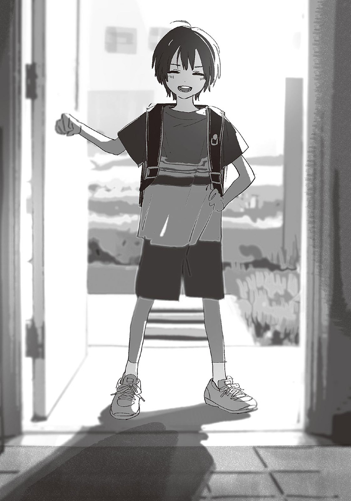「普通吧……」
如果是以前的哥哥，見到咲馬哥的時候，會開心到像主人回家的小狗似的。可是現在不一樣。哥哥不但不開心，還顯得很消沉。哥哥應該很希望咲馬哥不要來打擾他吧，但是咲馬哥很遲鈍，根本沒發現哥哥的心情。
「你爸爸不在啊？沒想到是你出來開門。」
「嗯……因為爸爸從今天開始工作。」
「是嗎？也是啦，因為不能一直待在家裡嘛。」
所以你也快點來學校吧。我覺得咲馬哥的意思是那樣。哥哥應該也有同樣的感想吧，所以他沉默了一下。
「……你是來送講義的嗎？」
「啊？對對對。」
咲馬哥放下書包，從資料夾中拿出幾張影印紙，交給哥哥。
「謝謝。」
「這是社會課的講義。今天上的是看世界地圖的方法。我老是把經線和緯線記反。你知道哪條是哪條嗎？」
「直的是經線，橫的是緯線，對吧？」
「哦！厲害。明明沒有來學校，可是比我還熟課本的內容呢。難道你有在寫※進研講座的教材嗎？那個附錄的漫畫都很好笑呢。我也有寫過一陣子，不過後來就沒繼續了。」（譯註：日本知名的函授教材公司。.jpg" height="70"/>
「我說啊，咲馬。」
哥哥喊了咲馬哥，打斷他的話。
「謝謝你送講義過來。可是……你不用每天來。對你來說，每天放學繞來我家，很麻煩吧？」
「不會啊。反正又不遠，用跑的很快就到了。」
「可是這樣你就沒時間和其他人玩了……」
「沒差啦。應該說，你不在的話很無聊啊。至少讓我看看你的臉吧。」
「……隨便你吧。」
聽哥哥那麼說，咲馬哥笑了起來。
哥哥真的認為這樣好嗎……我看著他們如此心想時，不小心和咲馬哥對上視線。糟糕，被發現我在偷看他們了。
「唷！小操，妳最近怎麼樣啊？」
我連忙躲起來。現在就算見到咲馬哥，我也沒有心情和他說話。
「用不著害羞啦。」
咲馬哥說。我才不是害羞。但我沒有力氣反駁。到頭來，我沒有露臉，只是豎起耳朵聽哥哥他們說話。
「對了，汐，你家有地球儀嗎？」
「咦？沒有……」
「最近社會課有用到。雖然是老師拿來的，不過我家也有。下次我拿來你家吧。可以一面玩國家賓果一面學習呢。」
「嗯，好……」
「那就明天見了。」
咲馬哥回去後，玄關安靜下來。
回到客廳的哥哥，表情有點疲憊。
「唉……」
哥哥重重地坐在沙發上，我也跟著坐下。
「吶，哥哥。」
「什麼事？」
「國家賓果是什麼？」
「不知道……」
哥哥可有可無地回答。對現在的哥哥來說，咲馬哥應該只是個妨礙者吧。
「如果你覺得困擾，還是對咲馬哥說清楚比較好哦。」
「我不覺得困擾。只是，該怎麼說呢……」
唔……哥哥思考著，尋找貼切的形容詞。
「……會覺得對不起咲馬吧。」
「對不起？」
「因為，讓他白費工夫了。」
白費工夫。也就是說，不管咲馬哥再怎麼勤快地來找哥哥，哥哥都不想去學校嗎？因為哥哥說的太不明確了，所以我很困惑。
「妳應該也和我一樣吧……其實我也知道該怎麼做才是對的。就是現在立刻振作起來，揹著書包去上學。雖然我知道該那麼做，而且爸爸也希望我們那麼做，可是……」
哥哥無力地垂頭。
「我現在，還做不到。」
我懂哥哥的心情。因為我也一樣。
「不用急啦。」
「……謝謝。」
我們兄妹身上流著相同的血脈，有同樣的創傷。雖然這麼說有點不好，不過在同一個空間裡，我覺得自己和哥哥的牽絆是前所未有的強韌。對我來說，這是在深深的悲傷中，唯一的希望。
在那之後，咲馬哥還是天天來我們家。
雖然哥哥不會把他趕回去，但也沒有表現出歡迎他的樣子。我的反應也和哥哥一樣。應該說，我最近連思考的力氣都沒有了，一切全都配合哥哥的行動。哥哥對咲馬哥很冷淡，所以我也對咲馬哥很冷淡；哥哥不說話時，我也不說話。
就算咲馬哥再遲鈍，應該也已經發現自己被我們冷落了吧。但他還是鍥而不捨地來我們家，最後甚至連假日都來了，而且還進了我們房間。
「……你到底想怎麼樣？」
哥哥厭煩地發問。
今天放學後，咲馬哥又來我們家。在我們房間玩起對戰遊戲。咲馬哥鬥志高昂，哥哥則是不情不願地陪他玩。我靠躺在床上，看他們對戰。
玩了三場後，哥哥放下搖控器，發問。
「想怎麼樣……我想放隕石攻擊啊。」
「我不是在說明星大亂鬥。」
哥哥關掉主機的電源。「啊……」咲馬哥發出哀號。
「你是想勸我上學？還是單純想玩遊戲？」
「都有啊。還有就是……我希望你早點恢復精神。」
「恢復不了啦。」
哥哥終於直接說了。他最近不再掩飾對咲馬哥的冷淡。
「因為你沒有碰過家人死掉的情況，才能說得那麼輕鬆。」
「我……」
咲馬哥不知該怎麼回答似地垂下視線。
不論如何，咲馬哥都是外人。就算他常來我們家，就算他和我們再熟，也沒辦法干涉我們的家務事。哥哥都說得那麼直白了，咲馬哥應該會知難而退吧，我心想。沒想到咲馬哥以堅定的表情抬起頭。
「我確實不懂那種感覺。因為我覺得家人在身邊……是理所當然的事。完全想像不出失去家人的感覺。」
「可是——」咲馬哥繼續說：
「我知道你和小操很難過……只是這樣下去，不好啦。」
「你憑什麼這麼說？」
「因為，已經兩個月了。你和小操已經兩個月沒去上學了。那麼長的時間，一直關在家裡，身體會壞掉的。」
這次換哥哥說不出話。他戳到痛處似地瞇起眼睛，咬住嘴唇。
我也覺得很難受。兩個月確實太長了。雖然我們有充分的不上學的理由，但就像咲馬哥說的，一直這樣下去，是不好的。
可是，如果我們能那麼理性，早就走出家門了。
「……多管閒事。」
哥哥別過臉不看咲馬哥，嗆人似地說：
「不要管我啦。」
「可是……」
「學校那種地方，我才不想去。」
說完，哥哥背對咲馬哥，不再說話。
咲馬哥求救似地朝我看來。可是我沒有任何能說的話。既然哥哥拒絕和咲馬哥對話，我也一樣。
「……我回去了。」
咲馬哥死心似地說完，走出我們房間。他最後的背影，感覺起來非常寂寞。
我想，咲馬哥的話，應該是正確的。可是哥哥也沒有錯。我們只是需要時間。咲馬哥一定也懂吧。
隔天，咲馬哥沒來我們家。就算到了放學時間，門鈴也沒有響起。傍晚六點，爸爸回來了。他正在廚房準備晚餐，讓人肚子餓的香味飄進我們房間。
「咲馬哥今天沒有來呢。」
「這樣就好。」
哥哥坐在書桌前，寫講義上的問題。雖然沒去上學，但哥哥還是認真地把所有功課寫完。
「咲馬也很忙的。所以這樣就好……」
雖然哥哥那麼說，可是他的聲音很消沉。我想，其實應該很不好吧。之所以一直重複說這樣就好，說不定是為了讓自己接受這件事。
其實我知道。每到放學時間，哥哥就會開始沉不住氣。看著窗外或時鐘的次數也會增加。
說來說去，哥哥一直沒辦法真心拒絕咲馬哥。所以他對咲馬哥說的「不要管我」，應該有一半不是真心話。這兩個月，我整天都和哥哥在一起，可以明白哥哥的細微感情。
真難搞。我心想。不過我也沒資格說別人。
我正坐在床上，看著哥哥的背影時，聽到有人上樓的腳步聲。
咚咚，門響了起來。
「晚餐好了嗎？」
我發問。「不是。」爸爸說完，走進房間。
「有妳的信。」
「咦？我的信？」
「是啊。我是來給妳這個的。晚餐再十分鐘就好了，等一下哦。」
我收下信後，爸爸回到一樓。
我看著寄件人的名字，「啊！」了一聲。
「是姬香寄給我的……！」
我打開信封，裡面有三張信紙。這麼晚才寫信，對不起。姬香以圓圓的字體這麼寫著，除此之外還寫了很多鼓勵我的話，以及她的近況。
「姬香……」
我開心到差點掉下眼淚。
我反覆重看姬香的信，腦中出現「有朋友真好」這種極為普通的感想。雖然我覺得只要有哥哥在就可以了，但是收到朋友的信，我還是很開心。
朋友……哥哥有咲馬哥這個朋友。
如果咲馬哥再也不來我們家，哥哥會怎麼想呢？會陷入比現在更深的悲傷中嗎？我有點擔心。
——結論是我想太多了。隔天，咲馬哥再次出現在我們家。
我有點傻眼，真是白擔心了。但同時，我又有種安心的感覺。謝謝咲馬哥這麼厚臉皮。
「對不起，因為我昨天有點忙。」
「無所謂啦……」
哥哥帶著咲馬哥，來到我們房間。
哥哥看起來很尷尬。應該是還在介意前天的事吧。至於咲馬哥，則大模大樣到有點微妙，和平常那種坦然感有點不同。
「其實，我今天來，是有事要對你和小操說。」
「我也有份……？」
真稀奇。他平常都只把我當成哥哥的附屬品而已。
不過咲馬哥的樣子非常認真，就連總是讓咲馬哥的話左耳進右耳出的哥哥，也露出有點困惑又惶恐的表情。我們三人面對面地在地毯坐下。
我有一種不好的預感。如果咲馬哥說的是「不能不去學校」之類的話，或者對我們說教的話，該怎麼辦？總覺得事情會愈變愈糟。
我心驚膽顫地戒備著，萬萬沒想到，咲馬哥說的是：
「不去學校也沒有關係哦！」
咲馬哥挺胸這麼說。
我和哥哥傻住了。咲馬哥不在意我們的反應，繼續說下去：
「我調查過了。因為小學是義務教育，所以就算不去上學，還是可以畢業！我之前都不知道呢。是說不去學校的話，會有課業跟不上的問題，不過汐的話就不用擔心了。小操的話，如果有不懂的部分，只要問哥哥就可以了。所以——」
咲馬哥露出讓人安心的笑容。
「你們不用勉強自己去學校哦！」
我不知道該怎麼接受這些話。
難道說……咲馬哥是在報復我們嗎？因為哥哥說不去學校，所以才故意那麼說。假裝親切，其實是想害我們和社會脫節。若非如此，說那種話未免太天真，太不合常理了……
我偷偷看向哥哥。他似乎也和我一樣，不知該怎麼接受這些話。
「……其實，我就是為了這個，昨天才沒有來的。」
咲馬哥難為情地笑著抓頭。
「我問了很多老師。有的老師很擔心我，有的表情變得很奇怪……不過我想，這個結論沒有錯！」
「……你是認真的？」
哥哥沉下聲音。咲馬哥緊張了起來。
「啊，可以的話，我當然希望你們來學校……可是強迫你們也不好。所以我想告訴你們其實可以繼續這樣……難、難道說，不行嗎？」
咲馬哥的眼神因不安而飄動。看樣子，他真的是基於好心才來告訴我們這些的。他是笨蛋嗎？
哥哥皺著眉頭，思考起來。他苦惱了十秒左右，排出各種感情似地大大嘆氣。
「……為什麼？」
「咦？」
咲馬哥露出疑惑的表情。
「為什麼要為我做到這種程度？」
「因為……我們是朋友啊。」
「你不是有其他很多朋友嗎？」
咲馬哥一副「你在說什麼啊」的樣子，一臉不開心。
「你又不是普通朋友。」
他微微撇開視線，接著說道：
「因為……我把你當成最好的朋友。」
很像咲馬哥會說的直白發言。哥哥的臉像是發癢一樣，扭曲起來。
兩人陷入沉默。
最後，哥哥忍受不住沉默地開口：
「……實在是……」
笑容綻放在哥哥的臉上。
那是媽媽離開後，哥哥第一次展露的笑容。
「真拿你沒辦法。」
咲馬哥的表情亮了起來。
本來緊張的氣氛也柔和了下來，甚至覺得房間變明亮了。我第一次這麼明確地看到人與人的心互通的瞬間。
這也許是該感動的場面吧。可是我有一種被排除在外的感覺。友情什麼的，根本比不過兄妹的牽絆……我不合時宜地把咲馬哥當成競爭對手。但我不是不識相，會在這種時候潑冷水的人。現在就單純地在一旁守望著他們吧。
一個星期後，哥哥開始上學。
我也跟著哥哥，走出家門。
【七年前】
我和哥哥走在充滿藥品氣味的走廊上。我們要去的三〇一四號房，在走廊盡頭。
我們打開拉門，看到坐在房間深處床上的媽媽。她穿著白色的睡衣，正在看書。從窗戶照進來的陽光，讓她的銀髮閃閃發亮。看起來就像外國的公主似的。我忘了探病的事，看著那身影看到著迷。不過著迷只有短短的瞬間而已，很快的，見到媽媽的喜悅就湧了上來。
「媽媽！」
在醫院要保持安靜。雖然哥哥那麼叮囑過我，但我還是忍不住大叫。
媽媽抬起頭「哎呀～！小操！」以和我同樣大的音量歡迎我們。
「妳來了呢。汐也是。」
哥哥點頭，把手中的便當袋放在桌上。
「妳們要小聲一點，不然會被罵哦。」
「是～」我和媽媽同聲回答。被哥哥念了呢，我們對看著，笑了起來。
我和哥哥坐在病床邊的圓椅子上。
本來對我們說「住三天就可以出院了哦」的媽媽，已經住院一個月了。整個暑假也因此不能和媽媽在一起，對小學二年級的我來說，是很寂寞的日子。
媽媽的身體狀況似乎不太好。因為得了很難治的病，還動了大手術，可是仍然沒有完全治好，只能繼續住院。
每天放學，我和哥哥都會來探病。之前每次見到媽媽，我還會問「什麼時候能出院呢？」，可是媽媽每次都露出困擾的表情，所以我不再問了。
「對了？爸爸呢？」
聽到媽媽的問句，哥哥回答：
「他和醫生在說話，所以叫我們先過來。」
「這樣啊。在討論很難懂的問題嗎～」
媽媽事不關己地說著。不用想也知道，一定是在討論媽媽的事。
我把身體向前探出，手撐在柔軟的被子上。
「媽媽，妳還有哪裡不舒服嗎？」
「嗯～我覺得沒有，可是醫生說，還是有不好的地方……」
我正心想「很不具體呢」時，媽媽拍手說：
「啊，對了。冰箱裡有點心，大家一起吃吧。」
雖然我覺得媽媽是在轉移話題，但是我不想讓媽媽困擾，所以不繼續問下去。
媽媽想下床拿點心，卻被哥哥阻止。「不如……」哥哥從便當袋中拿出一個保鮮盒，坐回圓椅上。他打開保鮮盒的蓋子，給媽媽看切好的蘋果。
「這是……我在家裡切好的。」
「咦～～！？汐，你會削蘋果皮了？好厲害！」
「我事先練習過了。雖然削得不是很好看……」
「沒有沒有，已經很厲害了。我是到和爸爸結婚後，才會削蘋果呢。汐的手真巧。」
哥哥回道「沒什麼啦」，雖然他裝得很淡然，可是遮掩不住臉上的開心。
最近，哥哥開始練習做菜。削蘋果就是成果之一。他從來我們家幫忙做家事的姑姑那邊學到很多做菜的技巧。等媽媽出院後，我要做飯給她吃——哥哥曾得意地這麼說。
「我要吃囉。」
媽媽伸手拿起一塊蘋果，正想拿到嘴邊——
可是蘋果卻從手指之間滑落。
如果是以前的我們，會笑著不當一回事，可是現在就不同了。因為媽媽的病的症狀之一，就是手腳沒辦法自由活動。難道說，媽媽的病比以前更嚴重了……？想到這裡，我覺得很不安，什麼話都說不出來。哥哥應該也一樣吧，他僵著身體，露出擔心的表情。
不知道媽媽是不是明白我們的憂心，她輕鬆地笑著。
「不好意思不好意思。掉下去了。」
她一把抓起掉落的蘋果，直接丟進嘴裡。
「嗯！真好吃！」
我和哥哥看著媽媽愣了一會兒，但哥哥馬上吐槽：
「那樣很髒，要先洗過才能吃啦。」
「才一塊而已，沒關係啦！」
「真是的……要是吃壞肚子，我可不管妳哦。」
媽媽吞下蘋果，笑著說：
「才不會吃壞肚子呢。這可是汐幫我削的蘋果哦。」
「這和那又沒有關係……」
哥哥露出像是悲傷，又像開心的，難以形容的表情。
哥哥一直希望媽媽能過著幸福快樂的生活。我當然也一樣，不過哥哥的想法比我更強烈。應該是因為哥哥比我和媽媽多相處了兩年吧。
「讓我聽聽你們在學校的事吧。聽得懂上課的內容嗎？有交到新朋友嗎？營養午餐好吃嗎？」
媽媽興味盎然地發問，我和哥哥一一回答。
後來爸爸也來到病房，變得更熱鬧了。
從車窗看出去的天空，被夕陽染成深紅色。
和媽媽說再見後，我們離開醫院，坐著爸爸開的車回家。大部分的社會人士都是在這個時間下班的哦。爸爸這麼告訴我。
可是，爸爸不一樣。
爸爸的工作有點複雜。要飛到世界各地，和很多國家的人做生意。所以幾乎整年都不在國內。只有拿到一、兩個星期的長假時，才會回日本。
不過那也是以前的事了。自從媽媽住院後，爸爸就一直待在日本。據說他現在請假，直到媽媽出院為止，都會留在日本。雖然我很高興能和爸爸一起生活，可是我又希望媽媽能早點出院。
我透過後視鏡，看著爸爸的臉。爸爸臉上帶著輕微的憂慮。
爸爸，醫生對你說了什麼？……我不敢問。
既然爸爸不主動說，表示不是好消息。就算我年紀還小，也隱約明白這件事。
「你們兩個，今天晚上想吃什麼？」
爸爸趁著紅燈停下車時問道。
「姑姑今天有事，不能來幫我們做晚餐，所以今天要吃外面。想吃什麼都可以說哦。」
常有的情況。姑姑自己也有小孩，所以不能一直在我們家。以前聽到吃外面時，我會很開心，可是現在已經沒有感覺了。
「哥哥，你想吃什麼？」
「我都可以。」
和我一起坐在後座的哥哥，茫然地看著窗外流動的景色，淡淡地回答。那不感興趣的態度，讓我更提不起勁了。
「我也都可以。」
「這樣啊。那就隨便找一間家庭餐廳吃吧。」
「嗯。」我點點頭。
綠燈亮了，車子緩緩地前進。
「啊，對了。爸爸我以後會一直住在日本哦。」
「咦？」
就連哥哥也對這句話產生反應。他把視線從窗外移到駕駛座，問道：「工作要怎麼辦？」
「我決定繼承爺爺的工作了。反正我本來就覺得該結束在世界各地到處飛的生活，在日本悠閒地過日子了。」
哥哥露出不安的表情。
「可是，爸爸不是和爺爺處不好嗎？」
「咦？你、你怎麼知道。」
「媽媽說的。」
「啊。是這樣啊，媽媽說的……」
爸爸露出苦澀的表情。似乎不太想和我們說這些。
「……我們已經合好了。所以不用擔心。你們只要像以前一樣就好了。還是說，你們不希望爸爸一直在家？」
「不是……」
我當然也一樣。能一直和爸爸在一起，我很開心。但是又沒辦法真的感到高興。爸爸是因為媽媽住院了，才回來日本的。既然爸爸未來會一直留在日本，那表示，媽媽的病已經……
最壞的想像，閃過腦中。
「媽媽……不會死掉吧……？」
「妳這笨蛋！」
哥哥嚴厲地斥責我。
「不要亂講話。不可能會有那種事。」
「對、對不起……」
我低下頭。我很久沒惹哥哥生氣了。比起因為被罵而難過，我更覺得驚訝。不過確實，我不該說那種話的。那句話就像是在為名為恐懼的種子澆水。
「你們不用擔心啦，媽媽是很堅強的人哦。」
爸爸安撫我們似的，以穩重的語氣說：
「所以一定沒問題的。」
我很想相信那句話。
「啊，對了。」
爸爸似乎想起什麼，把車子調頭，開回醫院，停在醫院的停車場上。明明要去家庭餐廳，為什麼又回來了呢？
「你忘了什麼東西嗎？」
我發問。「不是。」爸爸說：
「帶媽媽一起去吃晚餐吧。」
「咦！可以嗎？」
「只是稍微出來一下，沒關係啦。」
爸爸說完下車，很快就把媽媽帶了過來。媽媽還是穿著白色的睡衣，腳上穿著拖鞋。但她似乎完全不在意。
「操！又看到妳了，真開心！」
「真的可以離開醫院嗎？」
「可以啦可以，你們坐過去一點。」
我和哥哥往裡面擠，讓媽媽坐進後座。
砰，車門關上，車子動了起來。
媽媽看起來很興奮。
「很久沒有四個人一起吃飯了呢。真開心。汐，你呢？」
「嗯。我也很開心哦。」
哥哥和媽媽都笑咪咪的，開車中的爸爸也笑容滿面。
大家看起來都很開心，我的心情也跟著飄飄然的。仔細想想，確實很久沒有全家四個人一起吃飯了。不如忘了小事，盡情享受全家團圓的晚餐吧。
車子在離開醫院後，一直不停行駛。太陽沉入地平線，天全黑了。
當我心想著「該不會來到椿岡的邊緣了吧？」時，車子總算停了下來。
到了哦。爸爸這麼說，於是我走下車。
那是一個很大的停車場。大到像被拆掉的遊樂園，但是沒有其他車子。空地正中央有一個平房般的建築，但因為沒亮燈，不知道是什麼店。
空氣有點涼，感覺很孤寂。我有不好的預感。
「這是哪裡？」
我回頭問爸爸。
家裡的車子不見了。消失得無影無蹤，彷彿一開始就不存在似的。哥哥、媽媽、爸爸也全都不見了。
「咦？」
我四處張望，沒有看到任何人。
周圍安靜到令人發毛。
——我被丟掉了。
想到這裡，我的喉嚨變得很緊，心中充滿莫名的恐懼。
就在我即將哭出來的瞬間——
「嗚哇！」
我在床上醒了過來。
橙色的夜燈幽幽地照亮房間。我大力喘氣，鬧鐘指針的滴答聲，在寂靜中顯得特別響亮。
做惡夢了……
寒冷黑夜中的停車場，孤伶伶的我……光是回想起來，就覺得寒毛直豎。背部因為流了汗，現在變得有點冷。
應該是因為白天想像了太多不愉快的事，才會做那種惡夢吧。媽媽的病情可能惡化了——這樣的不安，使我的腦子有了不好的想像。
心臟還在劇烈跳動。就算知道是夢，恐怖還是不會消失。
床邊的鬧鐘，指針指著午夜零時。離天亮還很久。我抱著自己的枕頭下床，有如被光線吸引似的，走到哥哥的床邊。
「哥哥、哥哥……」
我隔著被子，搖著哥哥身體。哥哥慢慢轉頭。
「嗯嗯……怎麼了……？」
「我睡不著……」
哥哥揉著眼睛，努力睜開沉重的眼皮。看著我的眼神中充滿睡意。
「做惡夢了？」
被惡夢嚇到找哥哥一起睡，老實說很丟臉。可是我沒有力氣假裝勇敢，所以老實承認。
哥哥笑著說「真拿妳沒辦法」，稍微掀開被子。
「過來吧。」
我抱著枕頭，爬到哥哥床上，用被子把頭蓋起來。哥哥平靜的呼吸聲安撫著我激動的神經，使我變得非常想撒嬌。我用額頭鑽起哥哥的胸膛。
「這樣我會睡不著啦……」
「欸嘿，對不起。」
我不再鑽哥哥的胸膛，閉上眼睛。可是睡意似乎和恐怖一起離開了，所以完全睡不著。我像毛毛蟲似地扭動身體，把頭探出被子。
眼前是哥哥的睡臉。長長的睫毛像被人梳理過似的，整整齊齊。也許感覺到我的視線吧，哥哥緩緩睜開眼睛。
「妳還不睡嗎？」
「睡不著。哥哥，和我聊天嘛。」
「欸……我想睡啦……」
「只要說話就好了，什麼都可以。好不好嘛。」
「真是的……妳實在很愛撒嬌。好吧。」
耶——！我在心中擺出勝利姿勢。我閉上眼睛，專心聽哥哥說話。
「教我們班的老師裡，有一個老師特別凶。忘記寫作業或是在上課時說話，都會被他大罵。所以班上同學在上他的課時，都特別專心。」
「嗯。」
「有一次，那個老師把香菸夾在耳朵來上課。菸是點著的哦，可是那老師的態度和平常一樣。大家都發現香菸，卻沒有人告訴老師。因為那老師禁止學生上課時說話。而且大家都很好奇，如果沒人說，最後會怎麼樣。很多人都在偷笑。」
「嗯。」
「誰都不可以跟老師說哦——就在班上的氣氛變成那樣時，咲馬對老師開口了。」
咲馬。
哥哥最好的朋友。
我常常在飯廳或客廳聽到哥哥提到咲馬哥的名字。所以我只有「又來了」的感想。不過哥哥是特地陪我說話的，所以我不能抱怨。
「老師，你耳朵上有香菸哦……咲馬這麼說以後，老師發現到自己耳朵上的菸，把菸丟掉後，若無其事地繼續上課。所以他只是單純忘了菸的存在而已。」
「……嗯。」
「我啊，覺得咲馬很了不起。雖然只是一句提醒而已，可是除了咲馬之外，沒人敢說出來。不論是我，或是班長，班上愛欺負人的學生，沒有人敢說。只有咲馬說了。」
「……」
「也許他只是單純不會看場合，或者擔心老師被香菸燙傷……應該兩者都有吧。咲馬啊，雖然很遲鈍，但是很溫柔哦。真希望能和他更要好……那時的我，是這麼想的。」
「……哥哥你真的很喜歡咲馬哥呢。」
我用挖苦的心情說。
「是啊。我很希望自己能變成那樣的人呢。如果能像他活得那麼正直，一定很快樂吧……不過咲馬會連不該說的話都說出來，所以常惹人生氣。這部分我就不想學他了。」
呵呵，哥哥笑著這麼說。
聽哥哥說咲馬哥的事，使我不由自主地感到嫉妬，所以我決定睡覺。我鑽進被子裡，把身體縮成一團。於是哥哥說完「晚安」，便不再說話。
我用力揪住哥哥的睡衣，以免他被咲馬哥搶走。同時也是為了防止哥哥像剛才的惡夢那樣突然消失。我聽著哥哥均勻的呼吸聲，睡著了。
這天，我們也去探望媽媽。
從窗口照進來的西側陽光照亮房間，在地面凝聚成光的水窪。我和哥哥坐在床邊的圓椅子上，和平常一樣，把學校和朋友的事告訴媽媽。雖然剛才爸爸也在這裡，不過他現在去醫院的便利商店買便當了。
「唉——夏天快結束了呢。」
媽媽看著窗外說。
雖然悶熱的日子持續著，但是從這星期開始，天氣開始轉涼了。已經聽不到蟬叫聲，取而代之的是蟋蟀和鈴蟲在夜晚很有活力地唱歌。
「今年夏天一直躺在床上，身體都變鈍了。」
媽媽在床上伸著懶腰。
「不過啊——」哥哥說：
「祭典時，大家有一起看煙火呢。」
那是八月初的事。因為媽媽不能離開醫院，所以我們全家在醫院的屋頂看煙火。雖然離現場有點遠，可是我不喜歡那種會震動心臟的巨響，在醫院看煙火的距離剛剛好。
「真想再看煙火呢。」
我說完，哥哥「嗯嗯」點頭。
「明年再一起看吧。在醫院的屋頂看。我不喜歡人擠人，所以也覺得在屋頂看煙火很好。」
「啊，要記得叫爸爸買雞蛋糕。」
「好耶。乾脆連鯛魚燒和章魚燒也一起買吧。要不要趁現在說？」
「咦？可是到明年，爸爸一定會忘記啦。」
「不然由我們記住吧。不可以忘記哦。操和媽——」
話說到一半，哥哥突然失去聲音。
怎麼了？我追隨著哥哥的視線，瞪大眼睛。因為媽媽正淚如雨下。我第一次看到媽媽……應該說，除了在電視看到的連續劇或電影之外，我第一次看到大人哭成這樣，所以很震憾。
哥哥狼狽地向媽媽搭話：
「妳、妳還好嗎？是不是哪裡在痛……？」
「我沒事……」
媽媽以袖子擦眼淚，吸著鼻子。
「汐、操，你們過來一點。」
我和哥哥緊張地走到床邊。媽媽伸手，把我們用力摟進她懷裡。因為太突然了，所以我很困惑。媽媽究竟是用什麼心情這麼做的，我不敢多想。再說，媽媽今天擁抱我們的時間比過去都長，因此我像布偶般乖乖地不動，默默聽著媽媽的心跳聲。
「媽媽。」
最先說話的，是哥哥。
「就算不看煙火，我也無所謂哦。」
「這樣啊。汐很堅強呢。因為你是男孩子嘛。」
「……嗯。」
抱著我們的手臂，多了幾分力量。
接著，媽媽小聲地說：
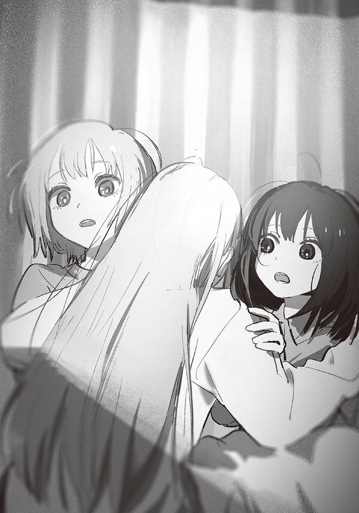「——」
說完，她鬆開手。我脖子周圍流了一點汗，所以覺得病房變得有點冷。媽媽對我們露出微笑，同時摸我們的頭。
喀啦啦。病房的門被拉開。
是爸爸回來了。
「不好意思，讓你們久等了。因為現在店裡客人正多。」
媽媽在轉眼之間恢復成平時的開朗表情，朝爸爸大力揮手。剛才流淚的場面，彷彿不存在過似的。
「歡迎回來～有草莓巧克力棒嗎？」
「有。我還買了其他口味的。」
爸爸把塑膠袋放在側桌上，一面拿出裡面的東西，一面發問：「你們剛才在聊什麼？」
「我們在說上次看到的煙火很漂亮呢～」
「哦，在這邊屋頂上看的那次嗎？真的很美呢。如果有拍照就好了。」
「用相機拍煙火很難哦。那種美景，最好用眼睛收藏。」
「哈哈，說的好。」
我一面看著爸爸媽媽感情融洽地說話的樣子，一面回想媽媽的話。剛才抱著我和哥哥時說的話，經過耳朵，滲透到我全身，在靈魂中擴散。那是對哥哥說的話。但對我來說，不是沒有關係的話……是讓我們兄妹的牽絆變得更強的話。
『你要一直當操的好哥哥哦。』
半年後，媽媽永眠了。
【九年前】
「噗哈！」
氯氣的味道鑽入鼻腔。
上小學時參加的游泳班，到今天是第三個月了。
我從游泳池起來，開始排隊。周圍的孩子全都是小學生，但一年級的應該只有我而已。雖然游泳很快樂，可是這個課程沒有和我同年級的人，讓我有點寂寞。
我練習著踢水，窗外的天空開始發紅。
「好，今天就到這裡吧。大家都做得很好哦。」
教練宣布下課。
我用溼淋淋的腳踩著地面，走進更衣室。其他課程的學生好像也下課了，所以更衣室裡都是人。
我在自己的寄物櫃前擦身體時，「小操——」有人叫我的名字。
「啊，姬香。」
姬香把手從包著身體的浴巾中伸出，對我輕輕揮手。
幼稚園畢業後，我和姬香上了不同的小學。不過因為剛好在同一座游泳池學游泳，所以現在還是經常見面。就算成為小學生，身處的環境也不同，姬香仍然是我的朋友。
「企鵝班已經在練習踢水了，好厲害哦。」
「很簡單啊，只是在水裡踢牆壁而已。」
「我還在用浮板呢……果然是因為我太重了嗎？」
姬香摸著自己的肚子嘆氣。她最近變胖了，而且好像很在意這件事。
「胖的話應該比較容易浮起來哦。」
「欸！？我、我才不胖呢！」
「咦？可是妳剛才說自己太重了……」
「雖然我確實有說……真是的～～！小操是笨蛋！」
姬香氣呼呼地離開了。
「是妳不對哦。」
回家的路上，我搭著媽媽開的車，把剛才的對話告訴她。然後她回了我這句話。
「可是，是姬香自己說自己太重的。很重就是胖的意思嘛。」
「不一定哦。常運動的話，就算沒變胖，體重也會因為肌肉增加而變重哦。」
「啊，原來如此。我不知道呢。」
對姬香說錯話了呢……我正想反省時，又「嗯？」地歪頭。
「可是姬香最近變圓了。所以她果然是變胖了嘛。」
「不行不行。就算是事實，也不能隨便說別人變胖哦。就算妳覺得她胖胖的很可愛，她本人說不定很煩惱自己的身材哦。」
「欸——可是……」
「沒有可是～下次上課時，要好好向姬香道歉哦。」
「……好啦～」
雖然我不太能接受，但是剛游完泳，我已經累了，不想爭辯，所以還是認錯吧。
我靠在後座的椅背上，看著窗外的風景。路面因為炎熱而如火焰般扭曲著。馬上就要放暑假了。爸爸會在中元節回日本，可是不會待太久。所以我該思考的是怎麼利用短暫的相處時間，不該去想消極的事。
離開游泳池不到十分鐘，我們就回到家了。我和媽媽躲避猛暴的陽光似的，用衝的跑進家裡。明明已經下午六點了，太陽還是白亮亮的。
我們走進開著冷氣的客廳，哥哥正在摺洗好的衣服。
「回來啦？」
跪坐在地墊上摺衣服的哥哥，看起來很成熟。小學三年級就這樣的話，成為國中生時，應該已經能出社會工作了吧。我這麼想。
「哇，汐，太謝謝你了。」
「沒什麼啦。反正我很閒。」
聽起來，哥哥不是被媽媽拜託，是主動摺衣服的。真不愧是哥哥。我覺得佩服，但是只有哥哥被稱讚，又產生了嫉妬心。
「我也要幫忙。」
我在哥哥身邊坐下，也開始摺起衣物。因為我還不會摺衣服，所以只拿毛巾來摺。
「小操，妳也要幫忙嗎？媽媽真是太幸福了～謝謝你們。」
「交給我吧！」
媽媽滿意點點頭，走進廚房，開始準備晚餐。
我一面摺毛巾，一面對哥哥開口：
「吶，哥哥，剛才——」
我把在車子裡和媽媽的對話說給哥哥聽。哥哥苦笑著聽完我的話，說出和媽媽同樣的結論。雖然我有點不高興，可是哥哥很認真聽我說話，所以我原諒他。
我正想轉換話題，「乓！」廚房突然傳來巨大的聲音。
「哇！糟了！」
媽媽小聲尖叫，好像摔到了什麼東西。我們站了起來，想過去看看怎麼了，可是媽媽說著「別過來」阻止了我們。
「抱歉，我打破盤子了。地上有很多碎片，很危險，所以不能過來廚房喔。」
媽媽開始掃地。我聽著唰啦唰啦的碎片碰撞聲，坐了下來。
「嚇我一跳。」
我以媽媽聽不到的音量，小聲對哥哥說。
「嗯……是啊。」
「媽媽每次都這麼粗心大意。」
我笑著說，可是哥哥的表情有點憂慮。
「……媽媽是不是身體怪怪的呢。」
「咦？」
「她最近一直很容易累。也常常摔壞東西，打瞌睡的時間也變多了……」
常摔壞東西，是從以前就有的事。不過聽哥哥一說，最近確實特別常發生。兩個星期前也打破了一個杯子。那個時候的媽媽一直打開，收起自己的手掌，好像在確認什麼似的。她到底在做什麼呢？我還記得自己很疑惑。
打瞌睡的部分也是。最近回家時，媽媽都在睡午覺。雖然我回來時她會醒來，可是常常會睡回籠覺。
「是不是感冒了？」
我亂猜，哥哥搖搖頭。
「可是她沒有咳嗽。該不會是中暑了吧……」
哥哥擔心地說著。雖然不知道媽媽的身體怎麼了，可是我已經知道哥哥摺衣服的原因了。他一定是因為想幫媽媽分憂解勞吧。
哥哥果然很厲害。能確實地發現我沒注意到的小事。他一定是想代替不在家的爸爸，當我們家的一家之主吧。當時的我，沒來由地那麼想。
「既然是這樣，那哥哥也要健健康康的才行。」
「咦？我？我很健康啊。」
「那你為什麼不游泳？」
哥哥的表情僵住了。
「……妳怎麼知道？」
他稍微壓低了聲音了。我該不會說了什麼不能說的話吧？我有點緊張。
「呃……因為從我的位子可以看到游泳池。你都穿著運動服，沒換泳裝。」
從一年三班的窗口向下看，可以看到游泳池。我又剛好坐在窗邊。所以就算不是下課時間，我也能看到其他班級上游泳課的樣子。
「哥哥，你不會游泳嗎？」
「我會啊。」
「那你為什麼不下水游泳呢？」
哥哥的臉上出現陰影。他的眉毛變成八字形，眼神游移不定。看起來很不可靠，很不像平常的哥哥。
「……因為下水後，我會肚子痛。」
「啊，是這樣啊……」
哥哥猛地站起來。
「要摺的只剩毛巾，我先回房間了。」
「咦？啊，好。」
哥哥急急地離開了。
好怪。我心想，伸手拿起還沒摺的毛巾。
光陰似箭，第一學期的休業式很快就來了。明天是我成為小學生後的第一個暑假。在還不習慣學校的情況下放的暑假，雖然不到引頸翹望的程度，但是可以長時間和媽媽在一起，我很開心。
「小操～我們回去吧～」
我正在數通知單上有多少個優等，一個綁辮子的女生過來跟我說話。她是常和我一起上下學的同班同學。我把成績單和聯絡簿收進書包，從座位起來。
我們一面閒聊，一面走向鞋櫃區，其他同學也過來和我們說話。走出校門時，變成了十個人左右的小團體。一群人一起回家，是常有的事。因為我們還不敢一個人放學。
一路上，我們大聲說話，活力不輸炎熱的太陽。也許因為明天就是暑假了，同學們比平常更有精神，大聲聊著暑假要去哪裡玩，或成績單的內容。
「哇，你們看，那個人是外國人嗎？」
我們走在住宅區的路上，一個女生指著前方。我看到揹著書包的哥哥的背影。因為頭髮是銀色的，所以遠看也很醒目。
「他是我哥哥啦。」
「咦？小操的哥哥？」
我點頭。班上同學比我以為的更驚訝。他們圍繞在我身邊，「為什麼你們頭髮的顏色不一樣？」「妳哥哥幾年級？」「你們是混血兒？」問了各種問題。雖然我有點嚇到，但是又很得意。哥哥受人注目，我覺得很開心。我得意洋洋地告訴同學，我哥哥是多棒的人。
「不過——」
走在我後面的男生說：
「小操的哥哥是不是沒有朋友啊？」
不能當成沒聽到。我停下腳步，轉身瞪著貶低哥哥的男生。
「當然有啊。」
「可是他現在只有一個人。」
「在學校裡有啊。」
「真的嗎～？」
那男生奸笑起來。為什麼要故意那麼說呢？
「真的啦！」
我生氣地踢了那男生一腳。「好痛！」那男生抱著小腿大叫，我轉身向前跑。
「哥哥！」
我呼喚著哥哥，哥哥訝異地回頭。
「操？」
從背影看不出來，其實哥哥正以雙手抱著一個牽牛花的花盆。蔓藤爬在塑膠製的支架上，長出綠油油的葉子。
「我們一起回去吧！」
「唔、嗯。是可以啦……」
哥哥朝我跑來的方向看了一眼。
「妳不和朋友一起嗎？」
「不用。我想和哥哥一起回去。」
「是嗎……？那就走吧。」
因為我突然跑來吧，哥哥顯得有點困惑。
唧唧唧唧唧——蟬從附近電線桿飛起。住宅區的馬路上，除了我們這些小學生，還有不少穿制服的人。國中和高中好像也都是今天休業式。
我默默地走著，若無其事地看了一眼走在我身邊的哥哥。汗水正從他尖細的下巴滴落。他雙手抱著花盆，沒辦法擦汗，感覺應該很不舒服吧。領子和腋下、肩膀的部分，也都出現汗漬了。
「那個很重嗎？」
我看著牽牛花花盆。
「沒那麼重。只是拿久了手有點痛。」
哥哥兩手都沒空，所以我幫他擦掉露出來的肩膀與臉上的汗。
「我來拿。」
「這個對妳來說太重了。」
才不會！我挺胸說著，把哥哥手中的花盆搶了過來。花盆比我想像中的重很多，光是抱著，盆底就嵌進手指的肉裡。而且走路時，葉子會一直掃到手臂，感覺很煩人。
「到下一個電線桿的地方就好了。」
被哥哥顧慮了。雖然有點丟臉，不過我的手已經到極限了，所以我還是照著哥哥的話做。我走完剩下的幾公尺路程，把花盆還給哥哥。雖然只有短短一段路，可是哥哥還是向我說了謝謝。
我心想，這麼溫柔的哥哥，不可能沒有朋友，於是發問：
「哥哥，你有幾個朋友？」
「咦！」哥哥突然說不出話，露出像是突然被人從背後偷推一把的表情，走路的速度也亂了。
他猶豫了一會兒，沒什麼信心地說：
「五個人吧……？」
「有哪些人？」
「呃……」
哥哥眼神四處飄動，像是在尋找有誰。
「……有個叫咲馬的人。我們從幼稚園就認識了，所以算童年玩伴吧。而且我們現在同班……營養午餐有我不愛吃的醃梅子時，他都會幫我吃掉。是很溫柔又很開朗的男生哦。」
「哦！」
我很想走回剛剛的路，對剛才那個小看哥哥的笨蛋男生說「你看吧！」。我本來還擔心如果哥哥真的沒有朋友該怎麼辦，看來是我想太多了。
「那你和那個咲馬很要好嗎？」
幸好幸好。我才剛放心，哥哥的表情又僵住了。
「……應該，算不上很要好吧。」
「咦？真的嗎？」
「嗯……因為我們只說過四、五次話……」
……那不能叫朋友吧？
我差點脫口而出，但是又覺得不能說出來，所以趕緊閉嘴。在那之後，我們沒有繼續說話，蟬叫聲填補了我們之間的沉默。
今天的溫度特別高。白色的陽光很刺眼，令人無法抬頭向上看。踩在人孔蓋上時，鞋底好像會發出滋滋的聲音。
我看了身邊的哥哥一眼，他的臉紅得像番茄一樣，瀏海也被汗水黏住，變成一撮一撮的。流的汗也比剛才更多。對怕熱的哥哥來說，像今天這樣的日子，應該很難受吧。我看不下去了。
「欸，我們輪流拿吧。」
我說完，又把花盆抱在手中。雖然沒辦法拿很久，但我還是想減少哥哥的負擔。我以鼻孔呼氣，上半身稍微向後仰。
哥哥的表情變柔和了。
「妳很貼心呢。」
「哥哥才貼心呢。」
「是嗎？」
「絕對是！」
我充滿信心地說完，哥哥拿出手帕，幫我輕輕擦掉額頭的汗水。
「有妳在身邊，真好。」
聽到哥哥這麼說，我開心得快要飛起來。覺得自己全身充滿力量，可以一路抱著花盆回家。
「吶，哥哥，你下次跟那個咲馬說想和他一起玩吧？」
「咦咦？不行啦。接下來就是暑假了……」
「不然等九月再跟他說。」
「唔……還是不行吧。咲馬同學有很多朋友，就算我找他，他也沒空理我吧。」
「才不會！」
哥哥沒信心地說著，我大聲反駁。
「哥哥這麼溫柔，那個咲馬一定也想和你變好朋友。」
「會嗎？」
「會！絕對會～！」
因為用說的無法完整表達，所以我踢腿強調。「哈哈。」也許覺得我的動作很好玩吧，哥哥笑了起來。雖然我不是故意逗他笑的，但是可以聽到哥哥的笑聲，我也很開心。
「知道了……那下次，我就問問看吧。」
「嗯！一定要問哦！」
說完想說的話，我突然覺得很累。雙手失去力氣，差點讓花盆掉下去。哥哥及時扶住我。
「我來拿吧。謝謝妳，操。」
「嘿嘿，不客氣。」
在那之後，我和哥哥輪流抱著花盆，慢慢地走回家。雖然我們全身都是汗，可是我覺得心情很清爽。
暑假結束的幾天後。
喀嚓。玄關傳來開門聲，應該是哥哥放學了。正在看預錄卡通的我從沙發起身，準備去迎接哥哥。
我來到走廊，看到哥哥站在玄關。
「哥哥，你回——」
「打擾了——！」
隨著充滿活力的聲音，一名男生從哥哥身後探頭。那明亮的感覺，有如太陽從雲層後方露出臉似的，使我僵住了。
「操，我回來了。」
哥哥向我打招呼，「歡迎回來……」我只能小小聲地回答。我一直看著哥哥帶回來的陌生男生，無法移開視線。
他是誰？哥哥的朋友嗎？雖然我心中充滿疑問，但因為我很怕生，所以一句話也不敢說。
「哦！是汐的朋友嗎？你好～」
媽媽也從客廳來到玄關。
「伯母好！我叫紙木咲馬，打擾了！」
「哎呀，真有禮貌。歡迎歡迎～快進來吧，我去準備點心。」
「太棒了！謝謝伯母！」
哥哥帶著那男生，走上二樓自己的房間。
咲馬……我對這個名字有印象。我記得是哥哥說的朋友的名字。啊，對了，我想起來了。我叫哥哥找他一起玩。
原來如此，那個人就是……因為是哥哥在意的人，我還以為會是更聰明斯文的人。不過剛才給我的感覺，他看起來和哥哥完全不同類型。
我很在意二樓的情況。他們究竟會聊什麼呢？對一年級的我來說，三年級的哥哥們是大人了。他們在念書嗎？我很想上去確認，可是沒有理由進房間，只好失落地走回客廳。
「這是汐第一次帶朋友回家呢！早點告訴我的話，我就能先買蛋糕了說。」
媽媽開心地自語著，走進廚房。把家裡有的點心全放在托盤上，在杯子裡倒入蘋果汁。我看著媽媽的身影，想到一個好點子。
「媽媽，我幫妳拿上去！」
「小操要幫忙嗎？有蘋果汁哦，拿得動嗎？」
「沒問題！」
那就拜託妳了。媽媽說完，把托盤交給我。我接下托盤，不讓蘋果汁潑出來地，慢慢走到二樓。
我來到房間門外，呼喚「哥哥」後，門被打開了。
「啊，妳幫忙送點心嗎？謝謝妳。」
沒什麼啦。我說完，以極為自然的態度走進房間。潛入成功了。
咲馬哥正坐在哥哥的床上。我把托盤放下後，他朝我看來。
「汐，你有妹妹啊！妳叫什麼名字？」
嗚！我有點恐慌。因為我受不了大聲說話的人。我低下頭，小聲回答：
「操……」
「操？很像男生的名字呢。」
我的臉一下子熱了起來。
對第一次見面的人說這種話，太沒禮貌了。這樣和我們班的男生有什麼差別？哥哥想和這種人當朋友？不會吧……
「不、不能說這種話啦，咲馬同學。操很在意這點的哦……」
「咦！是這樣嗎！？對不起！我常常說話不經大腦……不過我覺得操這個名字很帥哦！」
「很……很普通啦！」
連我也不知道自己在回什麼。說完，我逃跑似地離開房間。
離開房間後，我開始覺得生氣。那個人是怎樣啦？居然說我的名字像男生……哥哥為什麼要帶那種人家呢？呃，也有一部分是我造成的吧。
算了。
反正哥哥不可能和他來往太久的。哥哥喜歡的是更成熟穩重的人。應該吧。
可是，情況與我預想的不同。
「等一下我要和咲馬同學出去玩。」
「我和咲馬同學交換了學研的學習漫畫看哦。」
「咲馬同學真的很厲害呢。」
「然後啊，咲馬他就——」
「咲馬——」
打從咲馬哥來我們家的那天起，哥哥就經常提起咲馬哥的名字。在客廳休息時也提，吃晚餐時也提，就連上床睡覺時也提……他總是非常開心地說咲馬哥的事。而且不知何時，稱呼還從「咲馬同學」變成「咲馬」，兩人愈來愈要好。
老實說，我很不愉快。有種被不認識的外人搶走哥哥的感覺。而且最近哥哥也真的都只和咲馬哥玩，害我獨處的時間變多了。
「吶，妳怎麼想？」
「就算問我……」
姬香困擾地皺眉。
游泳班下課後，我和姬香在休息區聊天。我們坐在沙發上，等媽媽來接我們。
「和朋友感情很好，不是好事嗎？」
「是沒錯……但是我覺得有點太好了。總感覺那個人吊兒郎當，不怎麼正經，感覺會整哥哥。」
「唔……可是你哥哥很喜歡那個咲馬哥吧？」
「……應該。」
「那我覺得沒問題啊。」
「可是——」
我不死心地嘮叨著我的不滿。姬香雖然覺得困擾，但還是聽我抱怨，我很感謝她的溫柔。希望她能永遠是我的朋友。我悄悄地在心中祈求。
之後，媽媽開車來接我，我和姬香道別。
回到家，我剛下車，就看到咲馬哥從玄關走了出來。看樣子他今天也來找哥哥玩。
「啊，咲馬，你要回去啦？」
媽媽問道，「嗯！」咲馬哥很有活力地回答：
「我們今天玩了電動。汐一開始玩得很爛，不過愈來愈熟練，我今天第一次輸給他呢。」
「因為汐學得很快。你也要多練習，以免輸給汐哦！」
「好！我會加油！」
媽媽說完「回家的路上要小心哦」，走進家裡。
我也跟在媽媽身後。我不想和咲馬哥說話……應該說，我不知道要和他說什麼。所以我默默地經過他身邊。
「啊，小操。」
但是被咲馬哥叫住了。
我僵硬地回頭。
「幹、幹嘛？」
「我有東西想給妳。本來想說如果妳不在就算了。既然妳剛好在，就順便給妳。」
咲馬哥從口袋中拿出一個鑰匙圈。銀色的扣環下方，掛著一隻動漫的妖精角色。
「啊，咪路。」
那是我喜歡的動畫角色。我連漫畫都有買。
「聽汐說妳喜歡這個，所以送妳。」
「咦？可以嗎？」
「嗯。我妹妹也有在蒐集，不過多了一個。再說……就是那個啊，之前我不是對妳說了不禮貌的話嗎？」
不禮貌的話……難道是指我名字像男生的那次嗎？我自己都快忘了，咲馬哥居然還記得。他意外地很正直呢。
我接過鑰匙圈。躺在我手掌上的咪路正傻笑地看著我。
「這樣妳能原諒我嗎……？」
咲馬哥有點緊張地發問。
有那麼一瞬間，我覺得原諒他也無所謂，但是我告訴自己「還不行」。
「……你不會搶走哥哥吧？」
「咦？」
咲馬哥眨了眨眼。
「搶走……呃，什麼意思？」
「就是把我哥哥帶到很遠的地方，或是教他做壞事……害他沒有時間陪我玩，之類的。」
噗！咲馬哥笑了。
「是這個意思啊！？哈哈哈！」
咲馬哥有如卡通角色般張大嘴，哈哈大笑。我是很認真說的，可是看他笑成那樣，我想，我應該是說了很奇怪的話吧。我突然覺得很丟臉。
咲馬哥大笑了一陣子，擦掉眼角的淚水。
「對不起對不起。我笑過頭了。放心，我不會搶走汐的。我們只是一起玩而已。」
「真的嗎？」
「嗯。我保證。」
「……真的不會騙我？」
「這麼懷疑我啊……」
我還真不被信任呢，咲馬哥苦笑起來。
「不然這樣吧，以後我和汐玩時，妳也一起玩吧。」
「咦？我也一起？」
「這樣妳就能和汐在一起了不是嗎？所以，以後我們就三個人一起玩吧。」
我和哥哥、咲馬哥，三個人。
這提議不賴。這樣的話，我就不會覺得被排擠在外了。而且我也可以在不和咲馬哥變要好的情況下監視他。
「……就這樣吧。」
「好！那就這麼決定了。」
咲馬哥說完，朝我伸出手。我訝異地看著他的手，不懂這是什麼意思。
「握手啊。妳也把手伸出來吧。」
啊，原來如此。我小心翼翼地照著咲馬哥的話，握住他的手。咲馬哥以同樣的力氣回握我的手。
「再見！」
咲馬哥騎著腳踏車回家了。
我確認著手掌的感覺，走進家門。
從那天起，我開始加入哥哥和咲馬哥的圈子中。一開始，我很警戒咲馬哥，但是和他交談了很多次之後，我慢慢地接受了他。不對，應該說「放棄拒絕他」才對。咲馬哥是很積極的人，就算我若無其事地製造看不見的隔閡，他也會輕鬆地翻越障壁跳過來。每次都要和他對抗，感覺很浪費體力。我開始有點理解哥哥被咲馬哥吸引的原因了。
「啊！我發現好東西了！」
今天也是。放學後，我和哥哥、咲馬哥一起前往附近的公園玩。走到一半時，咲馬哥指著生長在路邊的淺粉紅色小花：
「你們知道嗎？這種花的花蜜很甜哦。」
咲馬哥說著，摘下一朵花，吸起花萼的部分。居然把生長在路邊的植物放進嘴裡！「嗚哇……」我頭上出現三條線，覺得很髒很噁心。
「你們也吃吃看吧。」
我用力搖頭。誰要做那種事啊……我如此心想時，哥哥已經伸出手了。
「咦！哥哥要吃嗎？不可以啦，會吃壞肚子哦。」
「一點點的話，沒關係吧……」
「欸～不要啦～」
哥哥無視我的阻止，親吻似地含住花萼，吸了起來。接著露出驚訝的表情，把花拿開。
「真的很甜呢！」
「對吧？來來來，小操也試試吧……啊，我當然不會勉強妳啦。」
被這樣顧慮，反而使我覺得不高興。「我也要試。」我忍不住這麼說。雖然很不情願，但是話已經說了，就不能反悔。
我盡可能地挑選看起來乾淨的花，摘下後，伸出舌頭舔了一下會流出花蜜的部分。
「……好甜。」
「對吧？」
咲馬哥得意地說。
「小操也愈來愈懂玩了呢。好，我們來擊掌吧！耶～！」
「耶、耶～……？」
啪。我莫名其妙地和咲馬哥擊了掌。
哥哥在一旁笑咪咪地看著我們。
【十一年前】
氣候怡人的初秋。
雖然太陽還高高掛在天上，不過幼稚園已經放學了。
「小操，媽媽來接妳了！」
老師一呼喚，我立刻朝門口跑。媽媽正在大門口。因為我媽媽比別人的媽媽高，頭髮又像雪一樣銀白，就算離得很遠，也認得出她。
我撞在媽媽的腿上，用力抱住她。
「小操～在學校時有沒有乖乖的啊？」
媽媽大力揉著我的頭髮。「有！」我在抱住媽媽的狀態下抬頭，很有活力地回答。媽媽笑了起來。老師也在旁邊笑著看我們。
「小操很聰明懂事哦。她今天也幫吵架的同學做仲裁，還安慰在哭的同學哦。」
「真的嗎？不愧是小操！好聰明啊！」
媽媽溫柔地以手掌包覆我的兩頰。手涼涼的，感覺很舒服。
我和媽媽、老師說了一會兒話。聊到一半，我想起還沒和朋友道別，又跑回幼稚園裡。
我站在中庭張望，在還在等家長接送的孩子中見到一個人跳繩的姬香。我朝她跑去，姬香也發現了我，停止跳繩。
「小操的媽媽已經來了？」
「嗯。姬香呢？」
「還沒。我媽媽每次都很晚才來。」
姬香消沉地表示。我說著「她馬上就會來了喔」為她打氣。雖然我才四歲，不過已經會做這種程度的安慰了。
「妳媽媽真漂亮，像電視上的人一樣呢。」
「她比電視上的人還漂亮哦。」
「是嗎？唔……也許吧。」
姬香以純真的眼神交互看著我和媽媽。
「為什麼妳頭髮的顏色和妳媽媽不一樣呢？」
我不是第一次聽到這問題。應該說，第一個有這疑問的是我自己，所以我知道該怎麼回答。
「因為我是爸爸生的。」
「是這樣嗎！？」
其實那是爸爸媽媽哄騙我的說法，但直到升小學為止，我一直深信不疑。應該是因為爸爸媽媽認為我還無法理解什麼是「遺傳」，才那麼說的吧。在知道那是謊話時，我對爸爸媽媽有點失望，但就和知道聖誕老人的真實身分是爸爸時一樣，我很快就無所謂了。
「那我先走了，再見。」
「嗯，拜拜。」
我和姬香互相道別後，回到媽媽身邊。
離開幼稚園後，我們以腳踏車回家。媽媽騎腳踏車，我坐在後座的兒童椅上。一面看著在前方搖晃的絹絲般秀髮，一面和媽媽聊幼稚園發生的事，是我最喜歡的時光。
我們通常會先繞去超市買晚餐和隔天的早餐，再騎車回家。因為前方的籃子放不下那麼多東西，所以有一半是由我抱著。媽媽會叮囑我「小心別讓東西掉下去哦」，「沒問題！」我每次都充滿自信地這麼回答。
回到家，我先去洗手，脫下制服，換上居家服。時間差不多了。我正這麼想，玄關傳來開門聲。
是哥哥回來了。
我來到走廊，看到黑色的書包。果然是哥哥。當時哥哥已經升小一了，所以可以自己回家。
哥哥坐在玄關臺階上，開始脫鞋。我偷偷朝他走近，隔著書包撲到他背上。「哇！」哥哥嚇了一跳，回頭看我。
「嚇死我了……是妳啊。」
「哥哥！歡迎回來！」
我回來了。哥哥溫柔地回應我。
和媽媽同樣顏色的頭髮，滑過我臉頰。輕輕一拉就會斷裂似的，纖細又柔軟的頭髮。呼～！我忍不住朝著頭髮吹氣。哥哥身體一抖。
「不要這樣，會癢啦。」
「嘿嘿。不小心的。」
「真是的……以牙還牙！」
哥哥把脫下鞋子朝旁邊一扔，用力揉我的頭髮。「哇——！」我哇哇大叫，假裝掙扎，心裡因為哥哥和我玩而覺得開心。
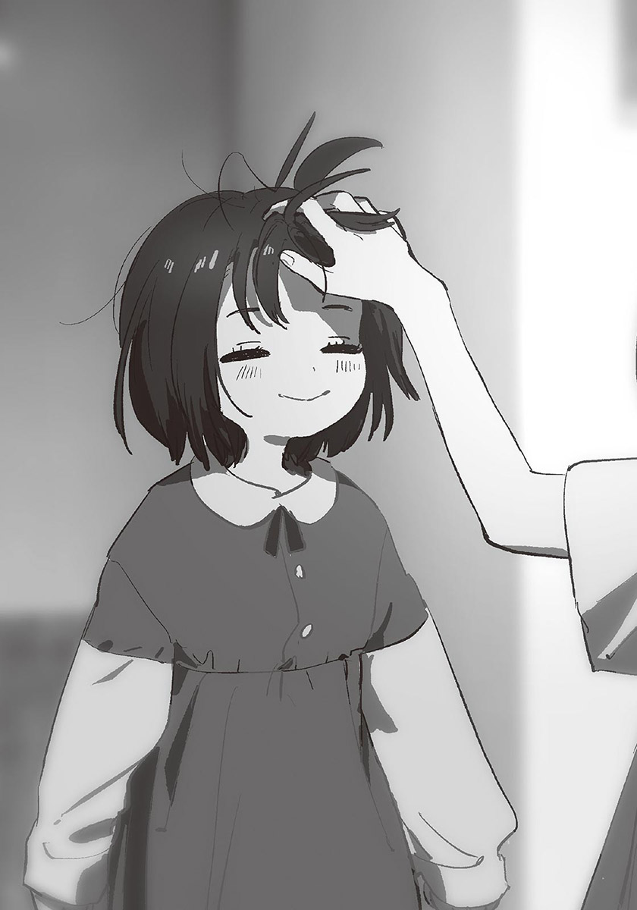我們正在玩鬧，媽媽從客廳探頭。
「汐，你回來啦～」
「啊，媽媽，我回來了。」
哥哥把剛才亂丟的鞋子排好，站了起來。
「今天的點心是鬆餅，你先去洗手吧。」
鬆餅！我開心得跳起來，「太好了！」哥哥也笑容滿面。
我最喜歡吃媽媽的鬆餅了。哥哥一定也一樣。塗了很多奶油，淋滿蜂蜜的鬆餅最好吃了。我特別喜歡吃邊緣煎得有點焦脆的部分。
我和哥哥在旁邊看媽媽做鬆餅。把鬆餅粉、雞蛋、牛奶放進缽裡攪拌後，倒在平底鍋上。不一會兒，香甜的氣味飄了出來，鬆餅表面出現泡泡。
「吶，媽媽，做那個吧！那個！」
被我要求，媽媽不好意思地笑了起來。
「咦～？真拿妳沒辦法。妳要好好看著哦。」
媽媽以雙手握住平底鍋的握柄，用力甩動手腕，鬆餅高高飛起，來到比媽媽的頭更高的位置，翻轉了半圈後，啪，平穩地回到鍋底。
「哇～好厲害！」
可以看到這特技，也是我喜歡媽媽的鬆餅的原因之一。雖然媽媽的廚藝沒有特別高超，但是有很多這類的表演。
「我還可以丟得更高哦！」
媽媽得意洋洋地再次把鬆餅往上拋，這次差點碰到天花板。我又更開心了。
「欸欸！可以再高一點嗎？」
「當然！跟我來！」
媽媽把平底鍋拿到客廳。這裡的天花板比廚房高。我很興奮，哥哥則有點不安。
「沒、沒問題嗎？」
「不用擔心，不會掉到地上的。」
「是啊！媽媽從來沒讓鬆餅掉出去過哦。」
「是這樣嗎……」
不，仔細想想，媽媽好像失敗過不少次……我不太記得了。
總之，媽媽打算挑戰自己的極限。這是她第一次在客廳拋鬆餅，我和哥哥都緊張地看著。
媽媽深深吸了一口氣，倏地瞪大眼睛。掀翻桌子似地把平底鍋用力往上甩。鬆餅飛到前所未有的高度。媽媽後退了兩、三步，穩穩接住了落下的鬆餅。
「耶～！破紀錄！」
「好厲害好厲害！」
我大聲歡呼。在客廳裡蹦蹦跳跳。媽媽得意地以鼻孔噴氣，轉頭看向哥哥。
「看吧，我沒失敗對吧？」
「嗯。媽媽真的很厲害呢！」
原本很擔心的哥哥，也因為媽媽的成功了而笑了起來。
也許媽媽出生在很冷的國家吧，她的心就像有一顆小太陽似的，永遠充滿活力又溫暖。我摔倒哭出來時，或者和哥哥吵架鬧彆扭時，只要照到媽媽這顆太陽，就會立刻恢復笑容。媽媽不在的世界，一定是永遠的黑夜吧。
「那這次丟到客廳的天花板好了？」
咦？我和哥哥一齊發出疑問。
「還要做嗎？」
「反正都來客廳了，你們不想看媽媽的鬆餅飛到很高很高的地方嗎？」
剛才的表演，我已經滿足了。哥哥好像也想早點吃到鬆餅。可是看著媽媽充滿幹勁的樣子，就說不出「還是算了吧」的話。
「我有點想看……吧。」
我說完，「很好！」媽媽大叫。雖然鬆餅已經涼了，可是媽媽的挑戰精神正熊熊燃燒。看到媽媽的模樣，我也興奮了起來。
「好～你們仔細看著哦。」
我和哥哥再次看著媽媽表演特技。失敗的話，就是重做鬆餅，成功的話……雖然沒有什麼好處，不過媽媽會很開心吧。
媽媽計算時機似地搖晃上半身，似乎非常專心。「一、二……」她小聲地倒數計時，「三！」說完，她猛地揮動平底鍋——
嗖！平底鍋從媽媽手中飛了出去。
幾乎水平飛出的平底鍋，撞破客廳的落地玻璃窗，飛到院子裡。
「哇～～～～～～～～～～～～～～！？」
媽媽發出慘叫。
意想不到的發展，使我傻住了。
「鬆餅……」哥哥小聲說著。
在那之後，媽媽清掃碎掉的玻璃，打電話找師傅修玻璃窗。到頭來，我們沒有鬆餅可以吃。雖然很可惜，不過這次我有被嚇到，而且媽媽也很沮喪，所以我沒有責怪她的念頭。
哥哥貼心地在垂頭喪氣的媽媽身邊坐下。
「打起精神吧，媽媽。下次再做鬆餅給我們吃。」
「汐～～你真好……」
媽媽淚眼汪汪地用力抱住哥哥。哥哥一瞬間露出痛苦的表情，但是又立刻笑了起來。雖然媽媽和哥哥的頭髮顏色一樣，但是像這樣貼在一起的話，就看得出哥哥的頭髮比媽媽偏金黃一點點。不過兩人的頭髮都很好看，我一面感到羨慕，又覺得焦慮。
「太奸詐了！我也要！」
我拉開抱在哥哥腰上的手，也向媽媽討抱抱。
「那連妳一起抱吧。」
我擠進媽媽和哥哥之間，在沙發坐下。媽媽大大地張開雙手，同時抱住我和哥哥。
「抱抱～～～～！」
媽媽說著，在手臂上用力。又大又柔軟的胸部壓在我臉上，比想像中的還悶熱。而且媽媽抱得很用力。但是我一點也不討厭這樣。
媽媽把下巴擱在我頭頂。
「啊，我可愛的孩子們……」
我終於受不了了，拍打媽媽的背部。媽媽一放開我，「呼啊！」我立刻用力呼吸。
「對不起啊對不起，這樣有點難受吧。」
啊哈哈，媽媽笑著道歉。
「不過，託了你們的福，我現在有精神了！謝謝你們！」
恢復精神的媽媽用力站起來，充滿鬥志地準備晚餐。我和哥哥坐在沙發上，對看一眼，微笑起來。
因為師傅要隔天才會來修玻璃窗。所以我們是以紙箱暫時擋住破洞。每當風從縫隙吹進來，媽媽的笑容就會有點憂鬱。
但好事和壞事會輪流發生。那天晚上，發生了好事。正確來說，是有好消息。
晚上七點開始的《哆啦A夢》結束，開始播片尾曲時，我們也吃完了晚餐。
媽媽去洗衣服時，嘟嚕嚕，電話響了起來。
「是誰打的——？」
我代替分不開身的媽媽確認電話機上的名字。我拉長脖子，努力看向放在櫃子上的電話的液晶螢幕。一看到螢幕顯示的名字，我立刻把正在看的《蠟筆小新》的內容忘光了。
「是爸爸！」
我直接拿起話筒。
「喂？爸爸？」
『嗯，操嗎？今天在幼稚園過得怎麼樣？』
「很開心哦。我今天安慰了在哭的姬香，還有幫媽媽拿買的東西哦。」
『真是好孩子。對別人好的話，自己也會有好事。不可以忘記這個道理哦。』
「嗯！」
『回答得很有精神，很好。哥哥和媽媽在嗎？』
「在哦。」
我放下話筒，哥哥和媽媽已經來到我身邊了。他們都很想講電話的樣子。也許因為太急了吧，媽媽的手上甚至還有泡泡。
因為工作的關係，爸爸一直在國外，很少回家。所以他常常打電話給我們。我和哥哥、媽媽都很喜歡和爸爸講電話，所以幾乎每次都會講很久。仔細想想，國際電話明明很貴，可是爸爸從來沒有主動結束通話過。
我正想把話筒拿給媽媽，「啊……」哥哥露出惋惜的聲音，所以我改把話筒交給哥哥。
「喂？爸爸，我是汐。」
為了聽到爸爸的話，我把耳朵湊到話筒旁。媽媽也蹲了下來，把耳朵湊近。三個人的身體以話筒為中心貼在一起。
『哦，汐啊。最近怎麼樣？在小學裡快樂嗎？』
「嗯……很快樂哦。上次的數學小考，我拿了一百分。」
『哦！好厲害！現在教的是加法和減法吧？』
「是啊。我已經學會在紙上寫算式了。老師出題時，我是全班最快算出來的。所以老師有誇獎我哦。」
『汐愈來愈聰明了。我小時候很討厭念書，所以你應該像媽媽吧。』
「不，我小時候也不喜歡念書。」
旁聽的媽媽插嘴，哥哥把話筒交給媽媽。話筒輪流換人拿，是和爸爸講電話時的慣例。
「之後的行程已經決定好了嗎？聖誕節前能回來吧……？」
『啊啊，關於這件事……』
媽媽的表情變得很緊張。
『今年十二月，我能待在日本。所以我們一起過聖誕節吧。』
「真的嗎！？」
媽媽露出燦爛的笑容。「太好了！」我和哥哥也大聲歡呼。
去年聖誕節，爸爸太忙了，沒辦法回日本。還不懂大人世界的事的我一直哭，讓媽媽很傷腦筋。明明媽媽也很寂寞的。
可是今年，全家可以一起過聖誕節。而且爸爸說的是「十二月」，所以應該能在家一個月以上吧。我腦中已經浮現各種想叫爸爸帶我去玩的地點了。真希望冬天快點來。
「爸爸，我想去滑雪！」
『好啊。大家一起去滑吧。妳喜歡和媽媽一起滑雪對吧？』
「嗯。不過我要加油，下次要自己滑。」
『我很期待哦。』
因為是好消息吧，我們聊得比平常更熱烈。
和爸爸說最久的，永遠是媽媽。即使我和哥哥離開電話機了，她還是會就近拉張椅子坐下，繼續說話。聲音開始帶著溼度時，就是通話快結束的時候。
「嗯。嗯……我也是……我愛你。好……下次再聊。拜拜。」
媽媽輕輕按下電話鈎鍵開關，放下話筒。她短短嘆了一口氣後，「好！」大聲說：
「來洗衣服吧！你們兩個也快去洗澡～～」
「好～～」
我和哥哥跑進浴室。
我坐在浴缸裡，看著正在洗頭的哥哥。白銀的頭髮沾滿泡泡。明明只是洗頭髮，我看著卻覺得很快樂。用水沖掉泡泡後，哥哥溼潤的頭髮像鏡子一樣光亮。
「操，妳坐過去一點。」
哥哥也進入浴缸，在我正面坐下。他像小狗一樣甩頭，頭髮上的水珠飛了起來。「啊嗚。」細小的水珠打在我臉上，我閉上眼睛。
「啊，對不起。水跑到眼睛裡了嗎？」
「沒事。」
我張開眼睛，勾魂的灰色眼珠正在看我。是遺傳自媽媽的、美麗的眼睛。和銀髮一樣，都是我沒有的。我偶爾會想，是不是比我先出生的哥哥，把媽媽美好的部分全都帶走了。
「好羨慕哥哥的頭髮哦～」
「頭髮？」
「我也想像你那樣……」
我把鼻子以下的部分泡在水裡，用嘴巴吹泡泡。哥哥在附近抓了一條小毛巾，泡在熱水裡，製作氣球。
「看，水母。」
不是為了安慰我，應該是為了轉移話題吧。
「我也想要哥哥那樣的頭髮～」
我大力拍打鼓起來的毛巾，咻！毛巾沉入水裡。
「妳的頭髮也很漂亮啊。」
「可是我想和媽媽一樣的顏色嘛。」
「就算妳這麼說……」
我也知道說這種話對現實沒用，但還是有羨慕到無法壓抑的時候。特別是小時候，因為還不會控制感情，所以常常對哥哥和媽媽發脾氣。
「我也想很羨慕妳那樣黑色的頭髮哦。」
「咦——騙人——」
「是真的。因為所有人的頭髮都是黑色的。雖然也有褐色頭髮的人……可是沒有人和我一樣顏色。」
哥哥安靜地垂下視線。
「……我想和大家一樣。」
哥哥難得地以悲傷的語氣說出像鬧彆扭般的話。雖然我還小，但還是覺得自己必須負責。我拿頭髮顏色的事發脾氣，讓哥哥傷心了——我這麼想，所以想安慰哥哥。
「那不然——」
我把上半身靠近哥哥。嘩啦，浴缸裡的水拍打著哥哥的胸口。
「我幫你。」
「幫我？」
「哥哥不是想和大家一樣嗎？那麼，如果你和別人不一樣時，我會提醒你『這樣會和別人不一樣』。那樣一來，你就能和大家一樣了。」
「真的行得通嗎？」
「一定可以啦。」
我想成為哥哥的力量，所以說得強而有力。
「約好了。」
我伸出小指。
哥哥迷惘了一下，也慢慢伸出小指。
不想看到哥哥露出悲傷的表情。
我只是單純地那麼想而已。
只是那樣而已。
我鬆開小指，對哥哥微笑：
「這樣你就可以安心了！」
汐呼了一口氣。
緊繃的氣氛，稍微緩和了一點。我從坐在同一張床上的汐身上感到鬆懈下來的氣息。汐的話總算說完了。
我忽然覺得有點冷。也許是因為專心聽汐說話吧，雖然一直在自己房間，可是有種直到剛才為止，都在其他地方的感覺。時鐘的指針指著六點，窗外的天空已經全黑了。馬上就要進入十一月的這個時期，天總是黑得相當快。
話說到一半時，我開了房間的大燈，但是沒有拉上窗簾。我起身，走到窗邊拉上窗簾，順便伸了一個懶腰。
說來話長。
事情的開始……對了，是擁抱。汐那麼要求，而我回應了他。由於已經沒有懷疑汐喜歡我的餘地，所以我問了他：
——為什麼會喜歡我呢？
基於我的疑問，汐開始細數從前。從我和汐認識開始，曾經疏遠過的時光，直到遇見穿著水手服的汐為止……既然汐打算正確地傳達自己的感情，我也不漏掉任何資訊地，聚精會神地聆聽。可是聽完之後，我還是不明白他是什麼時候，因為哪件事而喜歡上我的。
究竟是哪件事呢？
幫汐吃了他不愛吃的醃梅子時？指出老師耳朵上夾著香菸時？說汐是我最好的朋友時？
有很多可能的事件。但是到最後，我還是不知道究竟是哪件事與「喜歡」連結在一起。而我又不是很想直接問具體上是哪件事的關係，只好保持沉默。
不過，有件事是可以肯定的。
就是汐是認真的。雖然那些應該都是沒有告訴過任何人，一直隱藏在心裡的記憶，但他毫不保留地把一切告訴我。
「吶，你說點什麼啊。」
被汐一催，我回頭。
「啊，對不起。」
我道歉後，回到汐身邊坐下。
汐的臉上浮現疲勞的神色。說了相當於一部電影的片長的話，當然會累了。
「該怎麼說呢……以前的我，是那樣的人嗎？」
「應該多少有點美化吧。」
「你居然自己說。」
我忍不住笑了。
嗯哼。汐清了清嗓子，摸著自己喉嚨。
「說太多話，有點啞掉的感覺……」
「要喝點什麼嗎？」
「不用。已經很晚了，我要回去了。」
汐站了起來。
我們離開房間，踏著階梯下樓。我思考著該對汐說什麼。對於明確地向自己表達好感的對象，該怎麼把自己的想法告訴對方呢？不只這次的事，也該好好面對一直以來逃避面對的各種問題了。
我思考著，來到一樓。晚餐的香味飄到走廊。
「咦？汐啊？」
媽媽從客廳探頭。她把袖子捲起，頭髮綁在腦後，似乎正在煮晚餐。
我在心裡咂舌。碰到麻煩的狀況了。媽媽和汐最近一次見面，應該是我們小學時吧。所以她可能不知道汐的事。
「啊……伯母晚安。」
「晚安，好久不見了。最近過得怎麼樣？」
「呃，還好。」
汐看著其他地方，微微縮著肩膀。也許很在意我媽怎麼看穿著女生制服的他吧。還是快點結束對話比較好。
「汐要回去了。因為很晚了。」
「這樣啊。天色已經黑了，路上要小心哦。」
走吧。我以眼神對汐這麼說，朝玄關邁步。
為了送汐到外頭，我正想穿鞋，「等一下。」卻被媽媽叫住。
「要不要在我們家吃晚餐？」
「咦？」
突然的提議，使汐困惑了起來。我也有點驚訝。
「今天的晚餐是咖哩，就算多一個人吃也沒問題。啊，不方便的話就算了。」
「呃……」
汐以前也曾在我家吃過飯。但那是小學時代的事了，所以媽媽這麼說，相當突然。
「突然這麼說，會造成別人的困擾啦。搞不好汐他們家已經煮好晚餐了。」
「唔……說的也是。」
媽媽乾脆地退讓。她也許只是隨口說說而已。
「我問一下家裡的人。」
汐拿出手機，撥打電話。就汐的個性，居然沒有因為客氣而拒絕，使我覺得有點意外。
「喂？雪姨嗎？」
汐簡潔地說明原因，又交談了幾句話後，結束通話。接著他看向我媽。
「家裡還沒開始煮晚餐，所以我可以打擾。」
「真的嗎？太好了。那我就繼續煮了。煮好之後再叫你們。」
媽媽走回廚房。
事情進展得超快。雖然我和汐一起吃飯是無所謂，可是和我們全家吃飯，說不定汐會顧慮東顧慮西吧。
「這樣好嗎？」
「嗯。伯母都特地問了。」
「是嗎？既然你OK的話就就好。」
直到晚餐準備好為止，在房間待著吧。我們轉身朝樓梯前進。「啊，對了。」媽媽又從客廳探頭。
「現在可以叫你小汐嗎？」
……的確，稱呼的事應該先問過比較好。
汐怔了一下，輕笑起來：
「沒問題。」
「OK。那你再等會兒哦，小汐。」
媽媽真的回廚房了。
雖然她看起來若無其事，不過似乎能理解汐的情況。但是我沒和她說過汐的事，所以是聽其他人說的吧。話說回來，沒想到媽媽連稱呼方法都顧慮到了。在這之前，只有星原問過這個問題。喜歡過的女生和媽媽有重疊的部分，使我心情有點複雜……
「你不上樓嗎？」
汐的聲音使我回神。
「啊，你先上去好了。我去拿些飲料。我也渴了。」
「知道了。」
汐點頭，先行上樓。
我走進廚房。屋子裡明明開著暖氣，卻有點冷。
不會吧？我心想。果然看到媽媽在抽風機下面抽菸。
「妳不是在煮晚餐嗎？」
媽媽朝著抽風機呼出一口煙，以下巴指著微波爐。
「現在正在加熱白飯。」
「這樣啊……是說，別在煮飯時抽菸啦。」
「沒問題，不會有味道的。」
「還有，這樣屋子裡會變冷啦。」
「等一下就會關掉了。我只抽一根而已啦，吶？」
好不好嘛。媽媽不顧自己的年齡，眨眼裝可愛。
我整張臉都皺了起來，媽媽不禁噘嘴。
「我會緊張啊～因為我很久沒和汐……小汐說話了。不趁現在冷靜下來的話，等一下吃飯時可能不小心說奇怪的話。咲馬你想看到那種情況嗎？」
「妳是多想抽菸啊……」
唉，我嘆氣。這威脅方法真討厭。
「……只能抽一根哦。」
「耶——」
我無視開心的媽媽，打開冰箱，拿出可爾必思，倒進兩只杯子中，加水稀釋。我一面以吸管混合兩者，一面問道：
「對了，妳知道汐的事啊？」
「因為這地方很小嘛。那種事一定會傳進耳中的。」
「原來如此。」
在這個名為椿岡的鄉下小鎮，父母的情報網是舉足輕重的存在。有如電網似的，遍布整個自治區。而且從不考慮隱私問題。槻木家的事，說不定媽媽比我還清楚。
「為什麼突然把汐留下來吃晚餐？」
「你會困擾嗎？」
「是不會。不是那個問題……」
「小汐家的情況好像很複雜。我有點在意，所以試著問問看而已。沒什麼特別的理由。」
呼啊——媽媽對著抽風機呼氣。
「你也要多顧慮他的心情哦。」
「……我知道啦。」
我拿著可爾必思上樓前，又叮囑了一次：
「別留下菸味哦。」
「好啦～」媽媽慢條斯理地回應。
大約十分鐘後，媽媽叫我們吃晚餐。
「走吧。」
「嗯。」
我和汐下樓，走進客廳。
桌上有四人份的沙拉與蛋花湯。
「自己過來盛咖哩哦。」
媽媽在廚房說。我和汐點頭，走進廚房。
我若無其事地確認氣味。很好，沒有菸味，媽媽有確實地消臭。
我讓汐先盛飯。就在這時，有人從二樓下來。
「啊——我餓了……」
是我妹妹彩花。雖然她已經國二了，可是在家時經常一副邋遢樣，穿著鬆垮垮的衣服，駝著背走路。
彩花聞了聞空氣，吐出舌頭說：
「上禮拜才剛吃過咖哩吧？我已經膩了……」
「欸～咖哩有什麼不好的？媽媽我最喜歡咖哩了。」
「就算妳喜歡～」
彩花嘀嘀咕咕地走來。
她一走進廚房，立刻停下腳步，錯愕地瞪大眼睛。
「汐、汐、汐姊！？妳還沒回去嗎！？」
「是啊。因為伯母招待我……不好意思打擾了。」
「才才才不會呢！應該說我們家只有咖哩，真是不好意思……是我不好……」
「誰都沒有不好啦……」
彩花動搖的樣子很有趣。應該是因為她很崇拜汐，才會有這種反應吧。
「彩花，妳沒事的話，就幫忙把茶拿到餐桌吧。」
「啊？為什麼是我？」
彩花狠狠瞪我。真希望她在汐面前展現的溫柔可愛，能稍微分一點點給我。
話雖這麼說，但彩花還是有聽進我的話。她從冰箱拿出茶，連著杯子一起拿到餐桌。
所有人盛完了自己的咖哩後，我們在餐桌前坐下。
我開動了。大家說完，拿起湯匙。
「是說好久沒和小汐吃飯了呢。」
媽媽率先開口說話。「小汐……！？」彩花以極小的音量重複這兩個字。
「是啊。自從小學畢業後，就沒有過了吧……」
「以前暑假時，我有做過炒飯和煮素麵給你吃呢。真懷念啊～」
汐點點頭，注意到什麼似地環視四周。
「伯父還在工作嗎？」
「不是。他在自己房間吃飯。」
「咦？啊，原來如此。」
「不是因為你的關係哦。他平常就這樣了，不用在意。」
「啊，好的。」
汐說完，繼續吃晚餐。
「那、那個——」彩花緊張地發問：
「名字……果然是叫妳小汐比較好嗎……？」
「妳想怎麼叫都可以哦。」
「真、真的嗎？那我可以叫妳汐學姊嗎？」
「當然可以。」
汐笑著說，彩花也跟著笑了。
「那個，因為我想進椿岡高中……很憧憬叫妳學姊……」
「啊，是這樣啊。我會幫妳加油的。不過等妳入學時，我已經畢業就是了。」
「沒關係，可以叫妳學姊，我就滿足了！就算沒考上椿岡也沒關係！」
不是這樣吧。媽媽苦笑著吐槽。
「不能落榜啦。」
「但椿岡好歹算是升學學校……」
「就算是那樣，還是得努力念書啊。沒問題啦，連咲馬都考上了，妳要有信心。」
「慢著。連我都考上了是什麼意思啊？先說，我當時可是很拚的哦。彩花要是掉以輕心，真的會考不上啦。」
彩花瞪著我。
「不要說那種會增加我壓力的話啦。我也是很認真念書的哦。」
「是妳自己說沒考上也沒關係的。」
「啊～？我又不是真心的。不要一直挑人語病！」
彩花在桌子底下踢我的小腿。但因為她沒穿鞋，所以不會痛就是了。
汐突然笑了起來。
「你們感情很好呢。」
「哪裡好了！」
我和彩花異口同聲地大叫。不約而同的反應，使我們很尷尬。汐微笑地看著我們。
在那之後，我們也一面吃飯，一面聊天。就連吃飯時不太說話的彩花，也因為汐在場的關係，比平常興奮，話說得比平常多，而且對我的態度也特別和善。這是好事。汐在我家也待得很自然，也許以後能再約他來吃飯。
不過……汐偶爾會露出有點寂寞的神情。
雖然是微小的感情變化，但是我沒有看漏。我大概猜得到那份寂寞是怎麼來的，但我此時不願意多想。
晚餐結束。
我們四個人把吃完的盤子拿到洗碗槽。時間已經超過七點半了。
「伯母的咖哩很好吃。今天謝謝你們的招待。」
汐向站在廚房的媽媽鞠躬。
也該回去了。雖然汐說想幫忙洗碗，但是不能讓客人那麼做，所以媽媽拒絕了。
「要再來玩哦。我很歡迎你的。」
「好的。」
汐接著看向彩花。也許想在汐面前有所表現吧，平常吃完飯就立刻去洗澡或回房間的彩花，也來到廚房幫忙洗碗。
「彩花，也謝謝妳了。和妳聊天很開心哦。」
「我也是！我們家隨時歡迎妳來哦……下次會準備更好的餐點的。」
「啊哈哈……不用那麼隆重啦。」
汐向彩花與媽媽道別後，到我房間拿書包，和我一起走到外頭。我打算先目送他到大門口。
外面的空氣已經涼了。天氣晴朗，繁星在夜空中閃爍不已。
汐走到停在院子前的腳踏車處，停下腳步。頭髮反射著路燈的光線，有如吸滿了月光。
匡噹，踢起腳架的聲音傳到遠處。住宅區的夜晚很寧靜，只要側耳傾聽，就能聽到生活的各種聲音。說話聲、嬰兒的哭泣聲、電視機的聲音、炒菜的聲音……所有的聲音，全都有如落在肌膚上的雪花一樣，融化在空氣之中。
「今天晚上很開心。你家很熱鬧，真好。」
「其實平常會更安靜。是因為你來了，彩花和媽媽情緒才那麼高漲。」
「就算是那樣，我還是覺得很羨慕。」
晚餐時，汐之所以好幾次露出寂寞的表情，應該就是這個原因吧。雖然我不知道槻木家的餐桌風景，但應該很安靜吧。
小操和雪姨，處得還好嗎……
「那我回去了。」
汐正準備騎上腳踏車時——
「啊，汐，等一下。」
我叫住他。
汐放下正要抬起的腿，朝我看來。臉上帶著似有若無的期待。
「什麼事？」
「謝謝你今天告訴我這些。」
「沒什麼啦。不用道謝。」
「聽你說完後，我開始在想，既然你做好受傷的覺悟走了過來，我也不能一直逃避……」
咻，一陣冷風吹過住宅區。我正想把手放進口袋中取暖，但是又停止動作。因為接下來要說的，是正經的話題。
「……國中時，我很嫉妬你。因為你什麼都會，成績和運動都很優秀，我沒有任何能贏你的地方。一開始，我對朋友的成長感到很驕傲，但是到後來，我愈來愈覺得難受，所以開始躲你。對不起。」
汐很少說國中時的事。但就算他沒說，我也知道。我單方面地疏遠他，讓他受到相當的傷害。
「我知道啊。」
汐理所當然地說著。有種幹嘛事到如今才提這些的感覺。
「那時的我，也有很沒神經的部分，所以我不怪你。再說，我們立場相反的話，說不定我也會和你一樣吧。」
「不過……」汐的聲音低了幾分。他重新握住腳踏車的握柄，微微瞇細眼睛。
「現在回想起來，我還是有一點生氣呢。」
「對不起啦……」
這樣的道歉應該不夠吧。但我是真心覺得很對不起汐。
「……你想說的，就是這些？」
「嗯，大致上是……啊，不對，你再等我十秒！」
我轉身跑回家。
我衝上樓，進入自己房間，翻找衣櫃，在層層的衣服底下發現一條深藍色的圍巾。我拿出圍巾，跑回汐身邊。
我走出大門，汐放下腳踏車的腳架，正看著夜空發呆。見到我出現，不高興地哼了一聲。
「你遲到了五秒。」
「對不起啦。」
我把手中的東西遞了出去。
「這是圍巾。我想回去時應該會冷吧。」
「……謝謝你特地借我。」
汐有禮貌地接過圍巾，寬鬆地繞在纖細的脖子上，遮住下巴。看到他那個模樣，我發現還少了一樣東西。
「應該連手套一起拿出來的。」
「不用了啦，沒有冷到受不了的程度。」
「是嗎？你從以前就很不怕冷呢。」
「不是哦。但因為從以前起大家就都那麼說，所以變成我真的不怕冷似的。」
「咦？真的嗎？我都不知道……對不起。」
「你不用道歉啦。」
汐的心情好像變差了。
不單純是因為讓他等待。我知道原因。汐想要的不是圍巾也不是手套。從他的眼神與聲音，我痛切地明白這點。
我知道。
汐想和我變成什麼樣的關係，希望聽我說什麼回答。
而汐也明白，我知道他想聽什麼回答。
繼續拖著不給回覆，是很不誠懇的行為。既然已經明確地知道汐對我的感情了，我就必須確實地回答自己的想法。一直處於曖昧狀態，我也覺得難受。像是說謊似的，讓人感到有罪惡感。所以必須說清楚才行。
……可是……
「沒別的事了？」
汐問道。
該確實地回應汐才對。雖然我這麼想，可是無論如何，都踏不出這一步。
因為我還沒做好下定決心的準備。
「是啊。沒有其他的了……」
「……這樣啊。」
汐的聲音中帶著死心的色彩。雖然只是平淡的回應，卻使我覺得心很痛。
「那我回去了。」
汐轉身背對著我，踢起腳架。
強烈的自責與覺得自己沒用的懊惱、到這種時候了還只在意自己傷痛的自我厭惡，安靜地推著我的背部。
「汐，等一下。」
「真是的～天氣很冷，你也差不多一點啦。」
「我們約會吧。」
匡噹。
腳踏車翻倒在地上。放著不管的話可能會被車子輾過去吧。我代替僵住的汐，扶起腳踏車，放下腳架。
「下次……對了，馬上就要十二月了，聖誕節時我們兩個人去哪玩吧。雖然現在還沒想到任何計畫……不過我會在那天之前想好的。」
汐的嘴唇顫動。表情明顯很混亂。
「我們？」
「嗯。」
「你知道約會的意思嗎？」
「當然知道。」
「……可以嗎？」
汐凝視著我，窺伺話中真意。那是雙充滿懷疑的眼神。他正拚命思考我的邀約是什麼意思。
明明可以更直覺地接受的。因為我至今都太優柔寡斷了，才會這樣嗎？
「當然可以了。因為是我約你的……前提是你願意的話啦。」
「我是無所謂……」
汐無法冷靜地游移眼神。幾秒後，他放棄地嘆了口氣。
「我不知道你在想什麼。」
「我想喜歡上你。」
雖然是脫口而出的話，但精確到驚人地總結了我現在的心情。
沒錯。我希望能喜歡上汐。如果能喜歡上汐，不知道會有多麼幸福。
然而，單純說出真實的心情，不一定是正確解答。
希望能喜歡上汐，換句話說，就是現在並不喜歡汐。就朋友而言，我當然喜歡汐；可是問我對汐有沒有戀愛的喜歡，我就無法回答了。我不討厭汐。可是我沒有想和他交往，想和他有親密動作的欲求。
這部分，是絕對無法找其他理由辯解的事實。
聽了我的話，汐會怎麼想呢？
「……是……」
汐的嘴角微微上揚。
「這樣，啊……」
他拉高圍巾，遮住鼻尖以下的部分。
……咦！？難道他在害羞？
雖然那反應令我意外，但總之不是負面的反應，我就放心了。是嗎？這回答是可以的啊……
一旦放心，就開始覺得有點害羞。不論邀人約會，或是對人說「我想喜歡上你」，對我來說都是第一次的經驗。
「這樣很奸詐哦，咲馬。」
汐以被圍巾遮住的嘴說道。他的耳朵有點發紅。
「說出那種話，然後繼續拖延回答。」
「嗚……對不起。」
「啊，你承認這是拖延戰術了。」
汐傻眼地說著。
「不過，邀你約會的原因，不只那樣而已。就像剛才說的，我也……想知道更多你的事。」
「知道我的事？」
要我重複那句話，感覺很羞恥，所以我默默換了個說法，但還是被看穿了。
「不是。呃……因為，我想喜歡上你。」
我感覺有點發癢，又說了一次，呵呵，汐的笑聲從圍巾中傳出。
「我知道。」
汐說完，敬禮似地站直身體。我也跟著挺直背脊。
他拉下遮住嘴部的圍巾，露出微笑。
「約會，我會期待的。」
「嗯。」
咻。一陣風吹過。
汐的頭髮出現波浪，如錦緞似般閃閃發亮。
✽
今天早上特別冷。
我把腳踏車放在停車場後，快步走進校舍。雖然騎腳踏車時身體會發熱，但還是很冷。圍巾已經借給汐了，所以我現在戴的是國中時買的圍脖，但由於會透風，脖子周圍還是很冷。
我把雙手插在外套口袋裡，在走廊前進。周圍有不少和我一樣縮著身體走路的學生。
走進二年A班的教室，微暖的空氣包圍我的身體。原本因寒冷而縮緊的肩膀放鬆了下來。不是因為教室有暖氣，而是因為班上同學們的體溫融化在空氣中，使室內溫度升高了。
我從正在談天說笑的同學們身邊經過，來到自己的座位坐下。椅子的冰冷透過褲管傳到屁股，使我打了個冷顫。
早知道就帶暖暖包來了。我正在心裡感到後悔時，發現一名男學生朝這邊走近。對方戴著白色口罩，縮著脖子。
「唷。」
是蓮見。他站在桌邊，以雙手抱著身體。
「唷，感覺好久不見了呢。」
「我只請了一天假耶。」
「感冒好點了嗎？」
最近氣溫驟降，每天都有人請假。蓮見也是其中之一。雖然他看起來懶洋洋的，可是很少請假，所以我覺得很稀奇。
「已經退燒了。雖然還是會咳嗽。」
「但你還是來學校？真認真。」
「因為快快期末考了嘛。」
「啊……」
距離期末考已經不到兩週了。雖然覺得似乎還早，但這次的考試範圍比以前都大，所以可以的話，還是該來學校聽課。
「紙木你呢？期末考準備得怎麼樣？」
「唔，算是有在念啦。」
「哦，這次也想拿全校第一名嗎？」
「不，我已經沒力了……」
上學期的期末考，為了贏過世良——為了拿到學年第一名，我拚命念書。結果得了重感冒，痛苦到差點死掉。雖然只是幾個月前的事，但我已經有種恍如隔世的感覺了。
我不經意地朝門口看去。因為想起那件事，使我有種世良該不會又來我們班的不祥預感，但走進教室的不是世良，而是我熟悉的人。
是汐和星原。
早安。有人向他們打招呼。其他人因此發現他們，也紛紛向他們打招呼。
早。今天很冷呢。考試要完蛋了～學校什麼時候才讓每班開暖氣呢……除了問候，大家也以各種話題像他們搭話。
那是司空見慣的光景。在文化祭前，為了不讓汐在班上被孤立，我會積極地去找他說話，但最近有種難以接近的感覺。不是因為自卑，單純是我不擅長加入人群。
兩人走向他們的座位。途中，灰色的眼睛與我對上視線。汐轉換前進方向，朝我走來。星原也跟了過來。
「啊，紙木同學和蓮見同學，你們早～」
早。我和蓮見回答。也許因為剛才被外頭的冷空氣凍到了吧，星原的鼻子有點紅。
「不覺得今天超級冷嗎？真不想騎腳踏車上學～」
「是啊。如果有接送學生的專門公車就好了。」
「就是嘛！這種事要向誰提議？學生會嗎？」
「學生會有那麼大的權限嗎……」
我和星原聊著，汐從書包中拿出圍巾。
「咲馬，這個還你。多虧有這個，我回家時才沒有冷到發抖。」
「那就好。」
我接過圍巾，星原訝異地交互看著我和汐。
「咦！？小汐什麼時候借的？」
「昨天。昨天放學和妳分開後，我繞去了咲馬家一下。」
「哦——去做什麼？」
汐沉默了一下。應該是在思考能說到哪個程度吧。總不能說是為了抱抱才去我家的。雖然我想過隨便找個理由搪塞，可是又不想對以純粹的表情等待回答的星原說謊。
我正在迷惘，汐已經小心翼翼地回答了：
「我在咲馬家吃晚餐……」
「咦～！？真的嗎？紙木同學邀妳的？」
「不，是咲馬的媽媽——」
「伯母！？那是什麼狀況？說詳細一點～」
「呃……」
星原眼神閃亮地靠近，汐狼狽了起來。他後退一步，迅速轉身，走向自己的座位。
「啊，逃走了！」
星原追了過去。
一早就這麼熱鬧。總覺得教室裡的溫度上升了。
「你們感情真的很好呢。」
蓮見在一旁說。
我露出得意的笑容。
「對吧？」
「嗚哇——這麼得意，真讓人不爽。」
我忍耐著圍繞在身邊的寒氣，總算撐到放學，一如往常地與汐、星原回家。太陽已經西斜到快碰到山稜線了，乾冷的風吹過被稻田包圍的道路。從側面吹來的風不但寒冷，還很強勁。說話必須比平常費力，而且沙子還會跑進眼睛裡。
不過比起我，汐顯得更煩躁。他不斷撫平被風吹亂的頭髮，偶爾按住被吹起的裙子。還必須推著腳踏車前進，看起來很忙。
「唉，好煩……」
汐的抱怨傳入我耳中。在風這麼強的情況下，還能清楚聽見那句話，可見他真的很厭煩。
「風大時真的很討厭呢。不但頭髮會變得亂七八糟，裙子還會被吹起來。」
星原嘴巴上這麼說，但表情綽有餘裕。雖然偶爾會按住頭髮，可是沒有不高興的樣子。汐訝異地看著星原。
「……妳不用管裙子嗎？」
「嗯。我有穿短褲，所以不怕風吹。而且這樣比較溫暖哦。」
嘿嘿。星原得意地挺胸。
聽她一說，我反而在意了起來。原本沒有意識過，可是如今，我不由自主地看向星原的裙子。原來如此啊，穿短褲的話，就算裙子飛起來也沒關係啊。咦？真的沒關係嗎？
我趕走腦中奇怪的想法，向兩人提議：
「今天就不慢慢走了，直接騎車回自己家吧？」
風太強了，不是能開心聊天的情況。汐和星原似乎也都沒有異議。
我坐上椅墊，正準備踩腳踏板時，星原安靜地接近。她騎著腳踏車，把臉湊到我耳邊：
「等一下在車站前的家庭餐廳集合。」
她小聲這麼說。
我驚訝地看向她。噓——星原將食指豎立在嘴前。似乎是瞞著汐偷偷找我的。
為什麼？要密談嗎？因為我偷看她裙子，被發現了？不，應該不至於因為那種事找我出來吧……
是說，既然是星原找我，應該就不是太嚴肅的事。雖然這樣對汐不好意思，但我還是點了頭。
我們若無其事地騎著腳踏車前進。
在岔路口和汐分開後，我調轉車頭，朝車站的方向前進。就距離來說，應該是星原比我早到吧。我加快速度，以免讓她等太久。
來到家庭餐廳時，星原已經在最裡面的座位等我了。
「星原。」
我朝她走近。她已經先點了飲料無限續杯，喝起可樂了。一發現我，星原的嘴便離開吸管。
「啊，紙木同學。抱歉，突然把你找出來。」
「沒關係。反正我很閒。」
我放下書包，坐在椅子上。
我也點了飲料無限續杯，倒了熱咖啡回座位。我把砂糖和奶油球倒入咖啡中，攪拌後喝了一口，發問：
「期末考準備得怎麼樣了？」
我不直接切入正題，而是先閒話家常。沒想到星原的臉部肌肉抽搐起來。
「我完全沒念……怎麼辦……」
她倏地失去活力。糟了，似乎選錯了話題。我連忙安慰她：
「反、反正還有時間，沒有那麼嚴重啦。」
「我是真的很危險啦～而且這次每科的範圍都很大，至少不要不及格……」
「啊……不及格的話，寒假就得到學校補習了呢。妳家比較遠，來學校也很麻煩。」
「是啊。真希望有任意門……不對，我需要的應該是記憶吐司……？」
星原開始逃避現實。看來還是別再聊考試的話題了。
「話說回來，妳找我有什麼事？」
「啊，對了對了。」
星原轉換心情似地喝起可樂，接著探出身子。
「你最近和小汐怎麼樣？」
雖然我大概猜到理由，但果然和汐有關。不過星原的問題太籠統了，所以我不知道她想問什麼。
「什麼叫怎麼樣？」
「你昨天不是借圍巾給小汐嗎？我問是什麼狀況，可是小汐不肯告訴我。雖然我不是非常非常在意發生了什麼事，但是不肯告訴我，肯定有什麼原因吧～再說，感覺今天的小汐一直很沉不住氣。」
「所以妳才來問我嗎？」
「是啊是啊。雖然也可以打電話問，不過當面談比較不會被敷衍過去。」
「我也沒有要敷衍妳啊……」
話雖這麼說，但是有不少難以啟齒的部分。可以說到哪種程度呢？從星原的反應看來，汐應該只告訴她在我家吃晚餐的部分吧。
「那不然，你們為什麼會一起吃晚餐？」
「唔……因為……順其自然？」
「看吧！馬上就敷衍我了！」
「不是啦，真的是那種感覺……我媽問汐要不要一起吃晚餐，汐說好，所以就一起吃了。就是這樣。」
「嗯……？」
星原似乎無法接受這回答。
她很擅長察言觀色，對團體的氣氛也很敏銳。想蒙混過去的話，一定會被懷疑。
雖然不是很願意，還是只能說實話了。
「……汐和能井比賽前，我和汐約定如果他贏了，我就幫他慶祝。後來汐不是贏了嗎？汐就要求要來我家看看彩花。啊，彩花是我妹妹。」
「紙木同學的妹妹？她和小汐很要好嗎？」
「唔，應該是彩花單方面地仰慕汐吧。」
「咦？那為什麼小汐想見她呢？」
「因為……」
現在的話，我就知道原因了。見彩花八成只是藉口。汐想做的是其他的事。但我不知道該不該把這部分說出來。就算對象是星原，似乎也該先徵得汐的同意再說……
我正在煩惱，又發現星原盯著我，眼神中充滿懷疑。
「……你果然在隱瞞什麼呢。」
「才、才沒有。」
「你都寫在臉上了。」
星原肯定地說道。我恨起自己的簡單易懂。
「哈哈……」我背上流著冷汗，裝傻地笑了起來。星原死心似地嘆氣。
「……也罷，無論如何都不能說的話，就算了。」
哦，看來她退讓了。
我偷偷鬆了一口氣，星原露出顧慮的笑容。
「就算是朋友，也有不能說的事呢。再說我也不想讓你困擾。一直逼問你，對不起。」
「也不用這樣道歉啦……」
「不，是我太超過了。我也知道自己的這種地方要改進……」
星原消沉了下來。
好、好強烈的罪惡感！如果星原是生氣或鬧脾氣，我都能忍耐，可是萬萬沒想到她會難過……我的決心動搖了。
我在腦中天人交戰，最後緩緩開口：
「……其實——」
「抱、抱抱！？」
「妳、妳太大聲了啦！」
星原驚叫，我連忙要她壓低音量。
到頭來，我還是說了。雖然沒告訴星原，汐花了兩個小時說了喜歡上我的原因，不過照星原的反應看來，不說到那麼深也好。
星原隔著桌子探出上半身，眼睛因動搖而睜大。
「是哪種抱抱？」
「哪、哪種？」
「就是，擁抱不是有很多種嗎？比如運動選手在比完賽後和對手的擁抱，或者爸爸媽媽平常的那種……」
前者我還能理解，後者我沒有概念。因為我家父母沒有擁抱的習慣。星原家有嗎？她父母的感情真好。
「唔，我想……應該是友好，或者親愛的擁抱吧。雖然有點久就是了……」
「總共幾秒？」
「呃——應該超過五秒吧……」
「強度呢？」
雖然我很想吐槽「有必要問得這麼細嗎？」，但又把話吞了回去。對星原來說，汐是重要的朋友，也是過去單戀的對象。為了她好，應該回答吧。儘管這樣有點像什麼懲罰遊戲就是了。
「……很用力。用力到有點難以呼吸，甚至聽得到心跳聲。而且他的膝蓋還伸到我的雙腿之間……」
哇～星原怪叫，雙手掩住嘴巴。
「……感覺，好像很色？」
「才、才沒有呢！」
我反射性地否認，但自己也覺得那場面很色情。這麼一想，我就忍不住臉紅。
「可以了吧，別再問那部分了……」
「欸——！我還想知道更多細節的說……」
再說下去的話，我會對汐有愧疚感的。而且星原似乎只是單純好奇，所以沒必要非回答不可。
「不過啊，紙木同學。」
星原的表情忽然嚴肅起來。散發出不許我開玩笑的氣魄，使我不由得屏息。
「這樣一來，你應該知道了吧？知道小汐是怎麼看你的。」
「……嗯。我也沒有遲鈍到那種程度。」
其實我早就知道了，只是一直不去正視。但是現在，我已經下定決心要好好面對汐了。為了在做選擇時不會後悔——不，不對。我只是厭惡了不清不楚的現狀。再說，世界上沒有不會後悔的選擇。
「所以你是怎麼回答的呢？」
「我說，希望再給我一些時間。」
「就是暫時保留回答？」
「嗯，是啊。」
唔～～星原沉吟起來。她雙手盤在胸前，皺起眉頭。
「我覺得這樣的話，小汐會很難受哦。」
「……是啊。」
我也覺得很抱歉，但是我有想走出現況的決心。
「回答……雖然不知道什麼時候才能有結論，不過我已經邀汐在聖誕節時出門了。」
「哦！約會啊！」
「一般而言，是那麼說的吧……」
不是什麼一般而言。我明確地對汐說了「我們約會吧」。可是再度說出口會讓我很害羞，因此忍不住換了個說法。星原以責備的眼神看我。
「在聖誕節時兩人一起出門，是不折不扣的約會哦。不好好承認的話，小汐就太可憐了。」
是、是這樣嗎？
我反省完，訂正自己的話。
「下次，我要和汐約會。」
「很好。」
星原露出讚美小朋友的笑容。
我拿起杯子，喝著熱咖啡。咖啡比剛才涼了一些，變得容易入口多了。
我忽然想起半年前的事。那時候，我也被星原找來這間家庭餐廳。我還記得，星原是找我談世良向汐告白的事。從那時候開始，我們的關係逐漸出現變化。但星原重視汐的心情，一直沒有改變。
「紙木同學，你有喜歡的人嗎？」
意想不到的問題，使我差點把咖啡灑出來。
「喜、喜歡的人？為什麼這麼問？」
「不是啦，我只是想說，如果有喜歡的人，暫時保留回答也就是無可奈何的事了……咦？有嗎？」
「沒有哦！」
我的音調比平常高了幾分。
我沒有說謊。但是被星原問這個問題，使我動搖了。因為我確實喜歡過星原。但我能肯定地說，現在不是了。星原是我重要的朋友，但我對她沒有戀愛的喜歡。甚至覺得不能喜歡她。我不想破壞難得成立的友情，而且現在該在意的，不是星原，是我與汐的關係。
所以，我喜歡過星原的事，就不必再說了——
星原以懷疑的眼神看了我半晌後，視線垂落在桌上。
「唔，好吧。」
她說完，繼續喝起可樂。喝到見底時，吸管發出滋滋的聲音。
星原再次看著我，露出顧慮的笑容。
「雖然剛才說了很多，但是我會尊重你的想法的。」
「……謝謝。」
我把剩下的咖啡喝完。
窗外的天空，已經全黑了。
✽
時光安靜地流逝，十二月來臨。
這天放學，三人一如往常地推著腳踏車回家。雖然不再有強勁的秋風，可是氣溫愈來愈低。就算戴著手套，握著腳踏車握把的手還是會發冷。
「對了。有件事要問你們。」
汐看著我與星原。
「雪姨說想請你們兩個吃晚餐，你們覺得呢？」
「咦？晚餐？在妳家吃嗎？」
「嗯。因為上次我在咲馬家吃飯，所以她想回禮。夏希的話，因為平常受到妳很多關照，所以雪姨說也非常歡迎妳來。」
但是也不勉強啦。汐又追加了一句。
我沒有拒絕的理由，所以直接說好。汐的臉有點緊繃。
「真的要來嗎？」
「咦？嗯。我會去啊……」
「是嗎？你要來啊。嗯……我知道了。」
總覺得這說法帶著深意。
啊，難道？在汐家吃飯的話，她妹妹小操應該也會同桌吧。說不定是因為她，汐才不太起勁的。汐和小操的感情很差，是我們之間公認的事實。
星原應該也想到了吧，她以擔心的表情看著汐。
「妳在在意小操的事嗎？」
「嗯……是啊。說來慚愧，如果像上次那樣搞得很尷尬的話，就太對不起你們了。」
上次。應該是說雪姨開車載我們回家的事吧。与小操同車的那種緊張感，著實讓我難受。【+】
小學時，小操對汐懷著可以說是「尊敬」和「仰慕」的感情，但是現在，她的態度完全相反。因為小操不認同汐現在的生活方式。再加上她正值情緒不穩的青春期與叛逆期，所以對所有人都展現敵意。
在槻木家吃飯的話，等於得和那樣的小操同桌。
「不過，我想應該不至於像上次那樣吧。在爸爸面前，操會比較安分一點。」
星原「哦」了一聲。
「那樣的小操居然……小汐的爸爸是很嚴厲的人嗎？」
「不，完全不是哦。」
「啊，不然是小操因為和爸爸的感情很好？」
「唔——也不是那種感覺呢……有點難說明，不過她會相對顧慮爸爸的心情。其實我也是。因為在拒絕上學的那段時間，我們給爸爸添了很多麻煩。」
「啊，原來如此……」
也許對拒絕上學幾個字產生反應了吧，星原的聲音安靜了下來。應該是覺得不該多問吧。
「是說夏希妳呢？要來嗎？」
「我想去！——雖然我想這麼說，但還是算了。因為我什麼都沒做啊。」
「咦？妳不來嗎？」
汐以遺憾的口氣說：
「妳在的話，氣氛會和緩很多，如果妳能來的話就幫大忙了。」
「就算我在場，應該也沒什麼差哦？上次就是那樣。」
「不會啦。至少比咲馬可靠多了。」
「嗚……對不起啊，我這麼不可靠。」
「怎麼辦～」星原猶豫了起來。我有點意外，還以為她會開心地答應呢。難道她是想幫忙湊合我和汐，所以才故意退開嗎？
總覺得這場面似曾相識。暑假時也有過這樣的場面。雖然可以明白星原的心情，但那是不必要的顧慮。
「我也覺得妳在的話，氣氛會比較好哦。」
「看吧，咲馬也這麼說。」
「唔——……」
星原仍然一臉為難。她認真思考著，頭頂似乎冒出白色的蒸氣。我心想，有必要煩惱成這樣嗎？但這種做任何事都全力以赴的態度很有星原的風格，所以又忍不住想微笑。
「雪姨的料理很好吃哦。」
「咦？」
「她的興趣是做菜，如果有客人來，一定會準備得特別豐盛哦。」
「……這是用食物釣我的意思嗎？」
汐默默地別過臉。似乎被星原說中了。
星原嘆了口氣。
「我也沒有單細胞到會被這種理由騙到哦。是說小汐，妳是不是覺得我是愛吃鬼？」
「有一點點。」
其實我也這麼想。文化祭前去家庭餐廳吃晚餐時，星原點的餐是汐的兩倍份量。還有，午休時看到的星原的便當，通常也是份量十足。
「先說，我只是食量比較大，不是特別愛吃哦。再說我只要做了決定，就不會簡單改變了。真是的，居然把我想成那樣，太令我意外了～」
「對不起。那我會轉告雪姨，說妳不來的。」
「不，我要去。」
星原秒回。所以剛才那些話算什麼啊？
星原咳了一聲。
「既然是雪姨的邀請，不去也很不好意思。而且也不能讓煮熟的鴨子飛了。」
不但直接打臉剛才的自己，還用錯諺語。「太好了。」但汐並不說破，只這麼回答。就算是尷尬的晚餐，有我和星原在，似乎能讓他安心許多。
「決定好是什麼時候了嗎？」
「嗯。預定是下禮拜五。似乎是為了避開期末考。」
「下禮拜五……期末考的最後一天啊。」
就當成考完試的小慶祝好了。
「啊。」
星原想起什麼似地大叫。
「怎麼了？」
「期末考的內容，我還沒開始念……」
星原垂著頭，頭垂到都快抵在腳踏車的握把上了。
「唉～～不行了……完蛋了……」
「都還沒開始考呢。」
汐苦笑。「如果有不懂的部分，我可以教妳啊。」也許覺得星原看起來很可憐吧，汐這麼說。星原猛地抬頭，眼神閃亮。
「真的嗎！？太好了～～！果然出外就是要靠朋友呢……！」
星原誇張地表現感動。雖然平常就是這樣，不過她真的是感情起伏很大的人呢。
「對了！要不要三個人一起開讀書會？這樣不但有進度，而且比較熱鬧！」
「念書時需要熱鬧嗎？」
我忍不住吐槽。星原掃興似地鼓著臉頰。
「需要啊。有快樂的事，才記得住課本的內容嘛。紙木同學你不覺得比起背英文單字，背寶可夢名字輕鬆多了嗎？」
「的確……」
不過兩者不太一樣吧……雖然也有相似之處就是了。
汐看著星原。
「要在哪裡開讀書會？家庭餐廳嗎？」
「雖然那裡也不錯……這次要不要換地方？」
「哪裡？」
星原有些靦腆地說：
「我家，怎麼樣？」
✽
如此這般的，我和汐造訪了星原家。
我與汐在椿岡車站碰頭，一起搭了約十分鐘的電車，來到離星原家最近的車站。從車站出來要再走一小段路。今天是星期六，讀書會是下午一點，所以我和汐都是在家吃完午餐才出門的。出站後，我們揹著裝著課本的背包，在住宅區前進。
就十二月來說，今天算是相對溫暖的日子，大概是因為這樣，偶爾聽得見孩子們喧鬧的聲音。比起我和汐住的地區，這一帶給人的整體感覺是比較富裕的地區。
「我記得是在這附近。」
「嗯，應該馬上就到了。」
雪姨開車送我們時，我們曾繞到星原家，所以我和汐都知道大概的位置。而且星原也事先說明過具體的地點。
「開始緊張了……果然該帶伴手禮嗎……」
「不用啦……又不是探病。」
汐傻眼。我也是半開玩笑說的啦。
「你有來過星原家嗎？」
「嗯，以前有來過一次。是和真凜還有小椎他們一起來的。」
「哦——那應該有很多人來過星原家吧。」
「好像也不是。感覺上不是誰都邀請，應該只有要好的朋友才會邀來家裡吧。」
「原來如此。」
雖然我認為自己和星原之間有了某種程度的信任，但沒想到已經通過邀請到家裡的基準了。這麼一想，我有點開心。
「啊，就是這裡。」
汐停下腳步。眼前是一棟氣派的獨棟建築物，門牌上寫著「星原」。
我在按下電鈴之前，先觀察起星原的家。牆壁白得像新建的，院子裡的草坪修剪得很美麗。先不說我家，汐家也算氣派了，不過感覺起來，星原家又高級了兩級。
我正俗氣地計算著星原的身家，汐已經按下電鈴了。「叮咚——」的聲音後，對講機傳來聲音。
『等一下哦！』
是星原的聲音。不久之後，大門打開，星原從門後出現。她穿著厚針織衫與寬鬆的褲子。雖然不是第一次看到穿便服的星原，但每當看到她穿便服的模樣，我還是會心情愉快。
「歡迎！快點進來吧。」
星原招手，我們走進玄關。「打擾了。」我和汐說著，走進屋內。
「不好意思，特地讓你們跑來這裡。」
「不會。是說真稀奇，妳居然會邀我們來妳家。」
汐與星原一面上樓，一面聊天。屋子內部和外頭的院子一樣，都很寬敞，而且很乾淨。室內很安靜，也許父母不在家吧。
「因為下次要去小汐家吃飯，只有我什麼都沒做，有點不好意思。所以我想也該招待你們來我家。」
星原有點缺乏自信地垂下眉尾。
「沒什麼重要的事，還要你們特地過來，是不是給你們添麻煩了……」
「不會哦。妳的漫畫都很好看。很久沒來，我很開心呢。」
「真的嗎！？我又買了很多新漫畫，妳盡量看吧！」
「好啊……等念完書再看吧……」
三人來到二樓，星原走進裡面的房間。我也跟著走了進去。微甜的輕香鑽入鼻腔。
星原的房間有很多東西。架子上放著許多可愛的小物，床上排列著許多可愛的靠枕。牆壁的軟木留言板上貼著許多與朋友拍的照片。該怎麼說呢，很有女孩子房間的感覺，使我心跳不已。
「你們隨便坐吧。我去拿飲料。」
「好。」
我與汐在矮桌前坐下。毛絨絨的地墊坐起來很舒服。汐拿出課本，放在桌上。我則是好奇地東張西望。
地墊旁是書櫃。我瀏覽著書背，基本上都是漫畫，但也有不少小說。而且其中還有我推薦的書名。因為星原告訴過我感想，櫃子裡有書也是正常的，但我還是感動不已，發出「喔喔……」的聲音。
「咲馬……因為好奇而想到處亂看也是人之常情，所以我剛沒說話。但發出那種聲音，會讓夏希退避三舍的喔。」
汐以不敢恭維的語氣叮囑我。真是刺耳的忠告啊。
「對、對不起。」
「不用跟我道歉啦……」
說的也是。
我不再四處張望，拿出課本放在桌上。雖然星原還沒回來，但還是先看書吧。首先是物理。汐也配合我，拿起物理課本。
我開始背寫在筆記本上的專有名詞。但畢竟來到這個場地，念的東西很難進入腦子裡。反正時間還很多，還是先聊聊天吧。
「汐，你對雜貨沒興趣嗎？」
「雜貨？」
汐停下手上動作，朝我看來。
「星原的房間裡不是有很多小東西嗎？比如貓狀的面紙套、小型的仙人掌……還有那個，在瓶子裡插棒子的東西。」
「擴香瓶？」
「對對對。」
汐以無聊的表情摸著桌面，似乎沒什麼興趣。
「我不會特別想要呢。東西少，我反而比較自在。」
「啊——你說過沒什麼物質欲望吧。可是以前你房間不是有很多漫畫和遊戲卡帶嗎？」
「那是小學時的事了吧？現在已經不一樣了。而且那時候我和操住在同一個房間。」
「說的也是。」
也許發現我還不想開始念書吧，汐起身，走近放著各種小東西的架子，端詳起來。
「不過，房間多一點東西也不錯吧。什麼都沒有的房間，就算邀朋友來，有些人也會覺得無聊吧。」
「是這樣嗎？」
「不是有人說嗎？房間能展現屋主的個性。」
這麼一說，似乎真的是那樣。這個房間確實展現了星原的個性。明亮熱鬧，光是用看的就很療癒的各種小物。雖然這麼說，有點牽強附會就是了。
「你有什麼想要的東西嗎？」
「唔……就算這麼問，我也沒辦法一下子想出來……」
汐正在思考時，星原端著托盤走進房間。
「久等了！我泡了紅茶，所以花了比較多時間。」
她說著，把拖盤放在桌子空著的地方。紅茶自三個杯子中裝著冒出熱氣，旁邊還放著烤布丁。
「啊。」汐似乎發現了什麼。
「這個烤布丁，是很有名的店的吧？」
「啊，妳知道啊？我說要帶朋友來家裡，媽媽就特地買了。我也沒吃過，所以很期待哦。來來，快吃吃看。」
這種東西不是該在下午三點的點心時間才拿出來嗎？雖然我這麼想，但是說出來也未免太破壞氣氛。因此我還是拿起布丁，汐也在矮桌前坐下。
「然後，首先是這邊的積分……」
「嗯嗯嗯。」
從我們開始念書算起，已經經過兩個小時了。無法繼續集中注意力的我，乾脆地放手休息。
我們的讀書會算是很順利。星原偶爾會提出不懂的部分，由我或汐教她。只是，由於汐的說明簡單易懂，所以大多是由汐回答。他現在正在教星原數學。
「——然後減掉代入2的部分。」
「哦哦～～原來如此原來如此……」
「妳真的懂了嗎？那答案是多少？」
「3分之26！」
「不對。」
「欸～」星原哀號一聲，雙手遮臉向後倒下，接著一動也不動了。
「所以剛才的原來如此是什麼啊……？」
「對不起……我腦袋快爆炸了……」
星原似乎陷入苦戰。不過積分法本來就很難了。
汐刮著臉頰，看向牆上的掛鐘。
「休息一下吧。」
「贊成～」星原在爬不起來的情況下同意。我也沒有異議。
汐從書櫃拿出少女漫畫，看了起來。由於他似乎沒有閒聊的意思，所以我也玩起手機。星原似乎想讓大腦徹底休息，像睡著了般安靜。
剛來到星原房間時，我很緊張，但意外地很快就習慣了。感覺已經很很久沒有像這樣在朋友家度過慵懶的時光了。雖然聊天或玩遊戲也不賴，但是什麼都不做地讓時間流逝，也很愜意。
我正細品著舒適的沉默，汐開口發問：
「夏希……妳決定好報考哪間大學了嗎？」
汐一面看著漫畫，一面若無其事地閒聊。
這麼說來，我也不知道星原想念哪間大學。因為是很重要的事，所以我有點不想主動發問。
星原躺著回答：
「……還沒決定。雖然填滿了升學志願表，但是再不做決定，會很危險吧。」
她憂鬱地說著。
這話沒錯。就時期而言，確實該做決定了。而且椿岡高中在我們這個地區是升學學校，老師們對出路問題特別敏感。星原應該也被班導師伊予老師催著早點決定學校了吧。
「得好好思考才行哦。因為這很重要。」
汐提醒著。
星原坐了起來，伸懶腰似地把上半身拉長。她「呼啊～～」呼了口氣後看向我和汐。
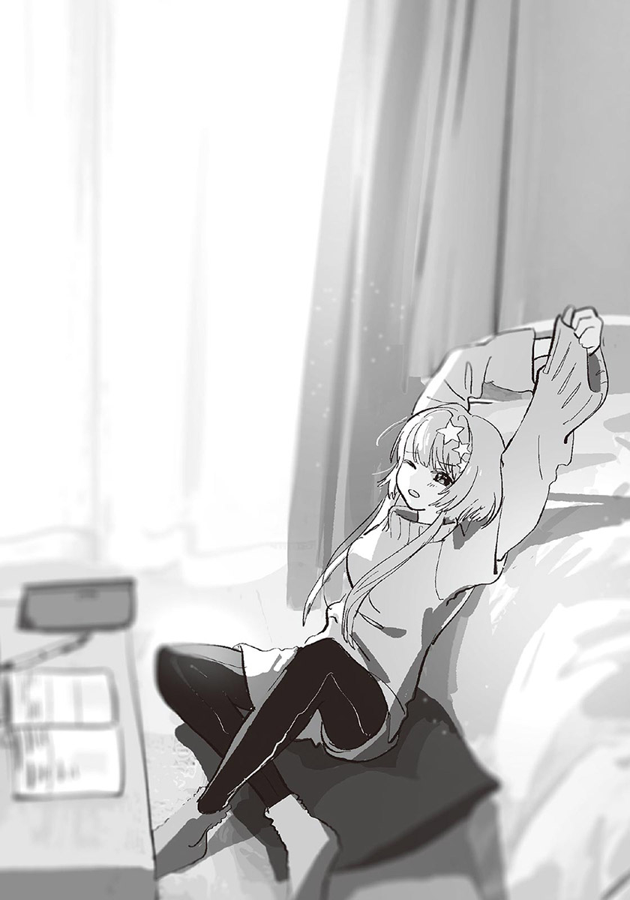「你們都要念東京的大學對吧？」
「咦？妳知道啊？」
「是小汐告訴我的。」
哦，原來如此。
「妳也想去東京嗎？」
「唔～不知道呢……雖然我想一個人住，但是沒有非選東京不可。不過東京可以選的學校很多，到頭來，應該還是會去東京吧。」
「是啊。雖然統稱東京，但是有很多大學呢。」
「……總之——」
星原以明確的語氣說下去：
「我大概不會留在這座小鎮。」
我在從她的話中，感受到不可動搖的意志。
星原應該不討厭這座小鎮，但她大概知道留在這裡，不會有任何成長或進展吧。就這點來說，星原和我一樣。
汐闔上漫畫。
「我們繼續吧。」
在那之後，讀書會仍進行得很順利。我本來以為會邊念書邊玩，沒想到星原相當認真。一方面是為了回應好心教她的汐吧，不過她似乎真的很擔心這次的期末考。
下午五點，外頭傳來「好孩子該回家了」的音樂。太陽已經西斜，天色有點暗了。
「嗯，答對了。」
「太好了！這樣數學應該就沒問題了。」
星原做出小小的勝利動作。雖然表情很開心，但是看起來有些疲倦。
「只要沒忘記今天學的這些，一定能拿到平均分的。」
「嗚……我會好好復習的。」
念得這麼認真，除非發生什麼意外，不然應該不會不及格吧。雖然我只有旁聽他們的教學，無法斷言就是了。
「到這邊剛好也算告一個段落了，今天就到此為止吧。」
「嗯，好啊。」
我闔上筆記本。星原也開始收拾教材，似乎不打算繼續了。
確認沒有忘記東西後，我和汐走出房間。星原也跟著走出來，應該是想送我們到玄關吧。
我們走下樓梯時，玄關傳來聲音。
星原喃喃自語著：「回來了。」
星原是獨生女，假如有其他人回家，應該就是她的父母吧。我們在走廊前進，見到一對在玄關脫鞋的男女。是星原的雙親。不知為何，男方把女方的手擱在自己肩上，似乎在攙扶女方。
「啊，小蝦！我回來勒～～」
星原的媽媽口齒不清地說完，把鞋子一扔，朝這邊跑來。即使穿著大衣，也看得出她身材很好，五官和星原有點像。不過，怎麼說呢，她的臉有點紅……
「真是的——妳又大白天就開始喝酒了？」
「偶只喝勒一點點而宜～」
這就是臉紅的原因嗎？仔細一看，身體還搖搖晃晃的。
「絕對不只一點點啦……好了好了，妳快點去喝水，不然會宿醉哦。」
「嗚嗚，小蝦堆我真好～」
啊，剛才的說話方式，和星原有點像呢……當我正想著這件事時，星原的媽媽突然抱住星原。洋派的作風使我很訝異。在星原家，這是很普通的事嗎？我本來那麼想，不過星原也嚇了一跳。
「嗚哇！等一——放開我……妳酒味好重！」
「愛妳歐～～啾啾～～」
「哇～～！」
好歡樂的母女……
星原用力把媽媽拉開，朝著正在玄關把鞋子擺好的爸爸大喊：
「真是的～！爸爸你要顧好媽媽啦！今天我朋友來耶！」
「對不起啦對不起。好了媽媽，我們進去吧。」
「好～……咦？有朋友來？你們慢慢玩哦～」
「他們已經要回去了！」
星原的父母留下些微的酒臭味，走入屋裡。
星原氣呼呼地走出家門。我和汐也追了出去。
一到外頭，寒冷的空氣立刻包圍身體。明亮的金星在夜空閃爍。星原在門口轉身面對我們，儘管天色昏暗，也看得出她滿臉通紅。
「嗚～被看到丟臉的場面了……我媽媽一喝醉，就會變成那樣……」
「她很疼妳呢。」
汐說著。表情看起來很認真，不是在開星原玩笑。
「她只是很愛纏人啦。小汐的媽媽——啊，雪姨會喝酒嗎？」
「雪姨……」
汐想到什麼似的，表情沉了下來。但是又很快開口：
「她偶爾會喝，但是我沒看過她喝醉的樣子。」
「這樣啊～不過適量是最好的呢。真的。」
星原感慨良多地說著。
酒嗎……我媽媽幾乎不喝酒，但是很會抽菸。不是說哪種比較好，但就如星原說的，我也希望我媽能適量抽菸。
和星原道別後，我和汐踏上回家的路。走到車站，進入電車。雖然是星期六，但是人有點多。我和汐抓著吊環，等待到站。
「我有點明白夏希為什麼會那麼溫柔了。」
汐沒頭沒腦地說道。「咦？」我怔了一下。
「那是之前在電視上看過的說法。一個人能對他人多溫柔，是依他小時候得到多少父母的愛而決定的。」
「哦……唔，我也有聽過那種說法。」
「夏希一定得到很多父母的愛喔。所以才能那麼溫柔。」
這結論有點……不對，是過度簡略了。可是汐的表情非常認真，一臉經過冷靜分析過的模樣。但他的說法又有種自暴自棄，或者認命似的感覺。
「總覺得那種說法很沒有希望呢。」
其實可以單純地應聲帶過。但是對我來說，這也是有所感觸的話題，所以我老實說出感想。
「為什麼？」
「因為，那樣一來，不就等於父母養小孩的方式會決定孩子的個性了嗎？得不到父母的愛的人，要怎麼做才能對其他人溫柔呢？」
「只能從父母之外的人那兒得到愛了吧。」
「可是不溫柔的人，很難從其他人那兒得到愛吧？」
汐沉默下來。
半晌後，他忽然笑了。
「也許吧。」
「是吧？所以是很沒希望的說法呢。」
電車搖晃不已。
到底在說什麼啊？我吐槽著自己。父母的愛什麼的，一點也不像高中生會聊的話題。為什麼汐突然說起這種事呢？
我不動聲色地窺視汐的側臉。他仍然凝視著外頭。不，也許是在看被車窗反射的自己的臉吧。
汐，有確實地得到父母的愛嗎？
我忽然冒出這樣的疑問。又自己在心中回答「當然有」。
「不用擔心。汐很溫柔的。」
「怎麼突然這麼說？我又不擔心那種事……」
「咦？不是這個意思嗎？」
「不是啦。」
「是這樣嗎？害我白擔心了。」
你真怪。汐笑了起來。
不久之後，廣播傳出到站的提醒。
✽
「時間到。把答案紙向前傳。」
最後一堂的考試，在老師的宣布下結束了。
同學們紛紛放鬆下來。有些人一臉解脫，有些人筋疲力盡。我覺得自己回答得還不錯。在星原家念書，很有成果。
是說，最重要的星原本人……正無力地趴在桌上。雖然看不到表情，可是結果似乎不太好。
汐擔心地走近。
「夏希，妳還活著嗎？」
「……應該。」
星原抬頭，表情疲憊不堪。
「答題的感覺，不是很理想嗎？」
「總之我把空白全部填上了……但是有一半不知道有沒有寫對。」
「妳考前有好好用功，一定沒問題的啦。」
「是嗎……嗯，應該是吧！好！不要再想考試的事了！」
星原鼓舞自己似地說完，拍打自己臉頰。她還是老樣子，心情轉換得很快，使我相當佩服……是說，這動作還真可愛。
兩人開始做回家的準備。雖然還沒中午，但是期末考結束的今天，不必上課。沒有參加社團或學生會的學生可以直接回家。我也開始收拾紙筆課本，放進書包後起身。
離寒假還有幾天，聖誕節也近了。
可是，在那之前——今天晚上，我們要到汐家吃飯。
夜晚的黑暗完全覆蓋了夕陽餘暉的下午六點。
我和星原來到汐家。我們先各自回家了一趟，現在都是穿著便服。
星原的表情有些生硬。之前我和星原也曾一起來過汐的家。當時星原也相當緊張。雖然這次不像上次那麼嚴重，動作還是有點僵硬。
不過我能懂星原的心情。這次不是來找汐玩的，是與槻木一家人的飯局。能不能融洽地聊天？會不會出醜？應該有很多擔心的部分吧。我也一樣。
「我要按了哦。」
叮咚——星原按下門鈴。
不久之後，汐出來迎接我們。
「歡迎光臨。進來吧。」
「打、打擾了。」
星原以慎重得有點微妙的步伐踏入汐家。「打擾了。」我也在說完後走進大門。
來到走廊，美味的香氣傳入鼻腔，稍微緩和了我的緊張，胃也開始蠕動起來。對了，為了不在別人家留下剩菜剩飯，我中午故意吃得比平常少。
汐帶我們來到客廳，桌上已經放著以大缽裝盛的沙拉、以大盤子排列得很美的義式薄切生魚片等前菜了。雪姨站在廚房裡，似乎正在準備主菜。
「歡迎光臨！馬上就好了，你們再等一下哦。」
「好的！我很期待！」
星原很有活力地回應。雪姨臉上浮起笑容。
我們跟著汐，坐在沙發上。電視正在播放新聞節目。
我張望了一下客廳。
「小操和伯父呢？」
「應該都在自己房間吧。等飯煮好就會來了。」
「這樣啊。感覺有點緊張呢……」
「像平常一樣就好了。我想操今天應該也會安分點的。」
雖然汐這麼說，不過他自己也顯得有點不安。在父親面前，小操似乎會比較安分，但也不能因此完全放心。
星原說悄悄話似地把臉湊到汐耳邊。
「是不是別和小操說話比較好呢……？」
「唔……完全不理她的話，她應該也會不高興吧。普通地相處就可以了。咲馬也是。不必過度顧慮她。」
知道了。我和星原點頭。
雖然這樣對小操很冷淡，但為了避免不必要的爭執，也是不得已的。還是照著汐的話做吧。
「讓你們久等了！煮好了哦。」
雪姨說完，「吃飯了～」前往走廊呼喚小操與伯父。他們應該很快就會來了吧。
汐從沙發起身，朝我們招手。我與星原來到餐桌前。長方形的桌子，我與汐、星原坐在同一側。雖然距離近到好像會碰到彼此的肩膀，但也不到會覺得侷促。
下樓梯的腳步聲傳入耳中，是兩人份的腳步聲。小操與伯父走入客廳。
「……」
「嗨，歡迎光臨。今天要多吃點哦。」
小學時，我見過好幾次汐的父親。記得他叫槻木新……的樣子。他還是和以前一樣，身段很柔軟，感覺像貴族的管家似的。雖然和以前相比，多了不少白髮，但因為打理得很整齊，所以不會讓人覺得髒亂。
至於小操……還是一樣臭著臉。她看也不看我們一眼，在汐正對面坐下。新伯父則坐在我的正前方。
「不好意思，可以幫忙端這些過去嗎？」
雪姨在廚房發問。「啊，我來幫忙。」星原想起身，但是被汐以「不能讓客人做這種事」阻止。汐說完起身，走向廚房。
不一會兒，餐桌上放滿各種料理。
海鮮義大利麵、法式清湯、凱薩沙拉、鯛魚的薄切生魚片……雖然這感想很老掉牙，不過看起來就像餐廳端出的料理似的。星原看著豪華的餐點，倒抽了一口氣。不對，是差點流出口水。
雪姨在星原正前方坐下，雙手合十。
「那，我要開動了。」
我要開動了。我們也在說完之後，拿起叉子。
只有小操，什麼都沒說，直接吃起晚餐。
真、真好吃……
我以叉子捲起義大利麵，吃得津津有味。雖然聽說雪姨的興趣是做菜，不過沒想到這麼好吃……
「怎麼樣？好吃嗎？」
雪姨問我們感想。我和星原連連點頭。
「超好吃的……」
星原嘴裡含著食物，感動萬分地說。雖然餐桌禮儀稱不上良好，但雪姨非常開心。
「是嗎～我很久沒這麼認真了。湯還有很多，想喝的話儘管說哦。」
「好……」
星原專心地吃著料理，連話都忘了說。幾分鐘前的緊張算什麼啊？
不過，既然料理這麼好吃，會變成那樣也是很合理的事。即使扣掉招待客人的部分，光論廚藝，還是比我家的料理美味太多了。就連茶，感覺起來都特別好喝。
我把杯子中的茶喝完，與新伯父對上視線。
「要不要再來點茶？」
「謝、謝謝。真是不好意思。」
新伯父拿起茶壺，在我遞出的杯子中倒茶，就像斟酒似的。等一下我也要幫忙倒茶嗎……我正在思考，茶壺已經離開杯子了。
「很高興能和你一起吃晚餐哦。我一直很想和你聊聊呢。高中生活過得怎麼樣？開心嗎？」
「呃，還可以吧……」
「快升三年級了，應該很辛苦吧？我英文還不錯，如果有不會的地方，我可以教你哦。啊，已經決定好考哪間大學了嗎？」
「呃……」
「爸爸，咲馬他很困擾啦。」
被汐叮囑，「啊！」新伯父淘氣地叫了一聲。
「可以看到咲馬，我太開心了，有點忘了分寸。真是不好意思。」
「不會……今天受到這麼豐盛的招待，我才該說不好意思……」
不知道該怎麼拿捏與朋友的父親的距離……雖然我也想表現得更熱絡一點，可是想不到適合的話題，所以覺得有點對不起新伯父。也許擔心我因此困擾吧，新伯父露出和善的笑容說：
「不用在意啦。真的很謝謝你哦。」
「沒這回事……」
他笑著的時候，眼角眉梢和汐很像呢。我一面客氣地說著，一面心想。
不只外表，說話方式和舉手投足的小動作都和汐很像。雖然這麼說有點過分，不過那些都是雪姨沒有的特徵，令人強烈地感受到所謂的血緣關係。
我若無其事地看向小操。
從吃晚餐起，她沒有說過半句話，只是機械式地進食。在父親面前會變安分的說法似乎是真的。雖然對我來說，這樣比較好，可是那面無表情地吃飯的模樣，感覺有點可憐。
相比之下……
「嗚嗚，毫好疵……」
星原正感動萬分。
享受美食確實很好，不過也該稍微注意一下其他的部分……我不由得這麼想。是說，她不是問過要不要和小操說話嗎……
「看到夏希吃得這麼開心，我努力做這些料理就值得了。」
這次，星原有好好咀嚼，吞下食物後才開口：
「真的很好吃哦……雪姨是料理天才，可以開店了。」
「哇，夏希的嘴真甜，我會害羞的～」
雪姨樂得眉開眼笑。星原說的不是客套話，是真心誠意那麼說的。雪姨應該也感受到了。
「對了，還有飯後甜點哦，敬請期待。」
「咦！真的嗎？」
「是啊。我買了蛋糕，等一下大家一起吃吧。」
「真不好意思。明明不是生日，也能吃到蛋糕……」
不知是開心，或者覺得受寵若驚，星原渾身發抖地說著。我也覺得有些擔當不起，沒想到會被如此熱情招待。
汐似乎也不知道這件事。「還有蛋糕啊？」他訝異地發問。
「難得有客人來，當然會想好好款待人家了，不是嗎？」
「……是沒錯。」
汐有些曖昧地回答。雪姨似乎沒有發現，愉快地繼續說：
「如果夏希喜歡，歡迎再來我們家吃飯哦。」
「咦——這樣好嗎……」
星原露出猶豫，應該說困惑的表情。她大概是覺得，就算雪姨做的菜再好吃，也不能真的常來。
「不用客氣。我第一次看到有人吃飯吃得這麼開心，讓我很想每天都和妳一起吃飯呢。當然咲馬也是哦。果然吃飯就是該熱熱鬧——」
喀嗒！椅子拉動的聲音，打斷了雪姨的話。
小操站了起來。她盤中的義大利麵還剩下大一半，碗中的沙拉甚至連碰都還沒碰過。只見她一言不發地轉身，準備離去。
「操，等一下。」
汐叫住小操。
「妳要去哪裡？」
「回我房間。」
「晚餐呢？」
「不吃了。我已經吃飽了。」
小操冷淡地說完，背對我們，正要離開時——
「我說等一下。」
汐的聲音中帶著怒氣，站了起來。
「妳根本沒吃幾口。這些都是雪姨賣力做的，要好好吃完。」
「就說我吃飽了。和賣不賣力沒關係……再說，這樣是不是有點過火了？」
小操以銳利的眼神看著雪姨。
「就算買蛋糕，也只會讓別人覺得擔當不起而已。而且星原同學吃得津津有味，最好也不要那樣硬邀人家，搞不好人家心裡覺得妳自作多情呢。」
「操！」
汐以斥責的語氣叫著小操的名字。
啊啊……氣氛不妙。放任下去的話，會吵起來的。應該說，已經算吵起來了。
雖然小操對汐的態度很差，不過汐對小操也有高壓的地方。對象是自己的話，就算小操說再過分的話，汐都不會生氣或反駁；但如果小操對汐之外的人發飆，汐就會立刻斥責她。正因為汐把界線分得很清楚，所以生氣起來時特別嚴厲。
「為什麼要在大家和和氣氣地吃飯時說那種破壞氣氛的話？……今天一天，當個好孩子會怎麼樣嗎？」
「不要把我當小孩子。說起來，是你叫住我，我才會說那些話啊。想開心吃飯就不要管我。」
「不行。不能讓妳被孤立。雪姨和爸爸都是這麼想的。為什麼妳這麼不懂事？」
「所以說，你們這是雞婆。」
「不要吵了。你們都冷靜一下吧。」
新伯父以老師般的口吻開口。
汐和小操不再說話。兩人都一臉不滿地低下頭。我似乎看見了槻木家的權力結構。
「操。」
新伯父溫柔地對小操說話：
「既然吃飽了，不吃完也沒關係。不過還是留下來和大家一起吃蛋糕吧？甜點的話，應該多少吃得下一些吧？」
「……」
小操露出厭惡的表情，但最後還是認命似地坐回原位。
「汐，雖然我很高興你為家人著想，可是口氣不能那麼激烈哦。」
「……是。」
汐反省地點頭。
爭執總算沒有愈演愈烈，大家繼續用餐。我戰戰兢兢地拿起叉子。
雖然成功留住小操，可是氣氛變得很尷尬。是說我本來就想過會變成這樣了。畢竟老早就知道汐家的家庭關係不好。因為事先做好心理準備，所以不至於失去食欲，但還是有點胃痛。
小操不再碰料理，玩起手機。
她應該不會再找架吵了。可是……我偷眼看著斜前方。
幾分鐘前還喜孜孜的雪姨，如今眼中失去光彩，消沉到令人心痛。被說成那樣，會消沉也是當然的……但是親眼見到成年人情緒低落的模樣，感覺還是很難受……
「那、那個，小操。」
剛才只顧著吃的星原，向小操開口。在這種情況下，她想說什麼？我心想。
「那個，如果妳吃不下的話，我可以幫妳吃哦……？」
啊，是想吃剩菜啊……
雖然感覺有點冷，但這或許是星原想炒熱氣氛的方法吧。小操默默地把自己的盤子推到星原前方。
「不用勉強哦？」
雪姨擔心地說著。
「我沒有勉強哦……因為我很喜歡吃東西。這樣的份量沒什麼啦。」
星原挺胸笑著說道。雪姨也綻放出笑容。
說的好。雖然我也想說點什麼，但想到有可能不小心刺激到小操，還是別亂說話吧。
多謝招待。吃完料理後，我和星原雙手合十道謝。
舒適的飽足感。汐和小操吵起來時，我還很擔心這頓晚餐會變成什麼樣。都是託了星原的福，氣氛逐漸改善，又恢復成熱鬧的樣子。她真不愧是班上的開心果。不過該說果然嗎，小操一直不肯和我們說話。就算在清理桌面時，她也只是像靜物一樣坐在椅子上，不停玩著手機。
泡好紅茶與咖啡後，雪姨從冰箱拿出裝蛋糕的紙盒。
「我買了很多種，大家挑喜歡的吃吧。」
她打開盒子，拿出切片過的蛋糕。
由於想要的種類沒有重複，大家都拿到了喜歡的蛋糕。我選的是巧克力蛋糕，汐挑的是乳酪蛋糕，星原是草莓塔。剛才比其他人多吃了一倍晚餐的星原，眼神閃閃發亮，第一個把蛋糕送入口中。
「嗯～！好吃！」
雪姨笑咪咪地地看著吃得很開心的星原。
有星原在，氣氛真的和樂許多。反過來說，槻木家平常的餐桌風景是什麼樣呢？感覺很可怕，我不敢想像。
「自從文化祭的慶祝會之後，我就沒吃過蛋糕了……」
汐的手不自然地停頓了一下。但是這句話沒什麼不尋常的地方，說不定是我的錯覺吧。
「夏希你們班是演舞臺劇對吧？」
「是啊！小汐的茱麗葉超漂亮的哦！」
「咦？茱麗葉！？」
雪姨訝異地轉頭看著汐。汐嘆了口氣，按住額頭。
「汐～為什麼不告訴我呢？」
汐似乎沒把演戲的事告訴家人。剛才動作頓了一下，就是這原因吧。
「說的話，妳會來看吧……」
「當然！我也想看汐在舞臺上的樣子啊！」
雪姨開心得像小孩子似的，至於小操，則露出難以置信的表情。
「哥哥演茱麗葉？騙人……」
這事似乎令她非常意外。她狼狽地看向星原。
「真的啊。等我一下……」
星原從口袋拿出手機，點了幾下後，把手機放在桌子正中央。螢幕上是站在體育館舞臺上，正在表演茱麗葉的汐。槻木夫妻與小操一齊探頭看向手機。
「哇！真可愛！」
「汐是美人呢。」
與笑得很開心的槻木夫妻不同，小操一臉錯愕。
「還真的……」
「大家都說小汐演得很好哦！小汐因此大受歡迎呢。」
「沒、沒到那種程度啦。」
汐連忙否認。星原的說法雖然有點誇飾，不過是真的。因為演了茱麗葉而被同學接受，汐自己也有感受到吧，所以他的反應八成是單純地覺得害羞而已。
「這樣太奇怪了。」
小操以凌厲的眼神看著星原。
「男人演茱麗葉……沒人有意見嗎？」
「唔……只有一個人吧。但因為其他人都贊成，所以決定得很順利。而且就結果來說，那個人也承認小汐的茱麗葉了。」
星原說的是西園吧。這話也不算有錯。由於西園向汐道歉了，所以能解釋成西園承認了茱麗葉的選角。
「居然有那種事……」
小操的眼神微微動搖，似乎還是無法接受。
「……演羅密歐的，是男生吧？」
「咦？嗯，是啊。應該說——」
「演羅密歐的男生，一定很不願意吧？」
「操。」那明顯想傷害汐的說法，使雪姨責備似地叫著小操的名字。但小操還是繼續說下去：
「羅密歐與茱麗葉不是男女愛情故事嗎？雖然我不知道劇本有沒有被改過……不過，應該還是有那個，談戀愛的場面吧？就算其他人接受了哥哥，我想演羅密歐的人一定很不想和哥哥演戲哦。」
小操盡其所能地否定汐。她似乎不肯相信汐演了茱麗葉……應該說不肯承認汐能以女生的身分生活，並被周圍的人接受的事。
為什麼要這麼堅持己見呢？總覺得不是單純因為叛逆期或討厭汐的關係。但不論如何，現在該顧慮的不是她，是汐。
「小操，沒有那回事哦。」
我插嘴。小操瞪著我。
「為什麼咲馬哥能說得那麼肯定？」
「因為演羅密歐的是我。」
小操瞪大眼睛。
「一開始，我演得很不習慣，但我不會不想和汐演戲。還不如說，因為汐的演技太好了，所以我非努力練習不可，否則會被整個比下去。再說，因為我也站在同樣的舞臺上，所以我知道，汐的茱麗葉真的被大家接受了，而且大受好評。」
「不對……可是……怎麼會……」
就算我如此說明，小操還是無法接受現實。
星原拿起放在桌上的手機，秀出其他照片給小操看。那是家庭餐廳裡，汐和班上女生們一起吃飯的照片。汐似乎沒發現自己被拍，正愉快地與其他女生說話。
「這不是文化祭，是球技大賽後的慰勞會的照片。小汐在排球比賽中也很活躍哦。雖然最後還是輸了，但是大家都在幫小汐加油哦。」
「……！」
小操盯著那照片半晌後，突然站了起來，逃跑似地離開客廳。
「操！」
雖然汐出聲阻止，但小操似乎沒有回頭的意思。只聽到腳步聲朝樓梯上方消失。
新伯父起身，想追上去，但是被汐阻止了。
「我去吧。」
汐代替新伯父站起，追著小操離去。客廳只剩我和星原，以及槻木夫妻。
沉默降臨在我們之間。
星原把手機收回自己口袋，垂下眉尾，不安地發問：
「怎、怎麼辦？我是不是讓小操看照片的……」
「沒這回事。」
新伯父和雪姨立刻安慰星原。他們馬上如此斷言，令星原有點吃驚。
「我們不知道汐在學校的情況，很感謝妳告訴我們這些哦。所以不要露出那樣的表情。」
「雪說的沒錯。再說妳是為了袒護汐才那麼做的。很高興汐有妳這樣的好朋友，謝謝。」
兩人一齊向星原垂頭道謝。沒想到會被這樣道謝的星原連連搖手：
「不會不會！沒什麼了不起的啦。我只是說出事實而已……」
可是，星原低著頭，繼續說道：
「這樣對小操，或許有點太壞心眼了……」
就結果而言，像是把小操逼到絕境。星原似乎很懊惱。但這也是沒辦法的事。在那個情況下，想袒護汐的話，就一定會變成批判小操的想法。不可能有皆大歡喜的結局。
槻木夫妻應該也理解這點吧。所以他們只是關心地看著星原，並不說話。
幾秒的靜默後，新伯父再次開口：
「汐真的很幸運，有你們這樣的好朋友。如果沒有你們，那孩子現在應該還深陷在悲傷或不合理的世界中吧。」
「……汐是很堅強的。」
我這麼說完，新伯父微微睜大眼睛，笑了起來。
「是嗎？既然咲馬這麼說，就一定是這樣吧……不過——」
他以憂慮的眼神看著小操沒吃完的蛋糕。
「操又是怎麼樣呢？那孩子能見到希望的光芒嗎……我不知道。而且也不知道操有沒有像你們這樣的朋友……我沒辦法不想這些。」
新伯父露出沉痛的表情。沒有人說話。「對不起，我本來沒打算說這些的。」新伯父苦笑起來。
如果可以，我也想為槻木家盡一點力量。但家庭這種聖域，不是外人能隨便踏入的場所。
——聖域。
我忽然興起疑問。是從什麼時候起，我開始這麼看待家庭關係的呢？仔細想想，小學時，我能毫不猶豫地踏入汐的家。汐的母親住院後，我常去看她；汐和小操不去上學的那陣子，就算他們拒絕與我交流，我還是天天來找汐。究竟是從什麼時候起，變成現在這樣的呢……
……啊，我想起來了。是國一時。
我把我爸爸除了工作之外，總是把自己關在房間，就連吃飯都是分開吃的事告訴班上同學。同學們聽了都很擔心。他們說紛紛說「那樣太奇怪了」、「你爸爸有憂鬱症嗎……」。
我本來只是想說來逗大家笑而已。對我來說，那只是在咖哩中加入蒟蒻程度的「誤差」，可是聽在班上同學耳中，是非常嚴重的家庭問題。我對這件事感到驚訝，並且覺得可恥又難堪。
在那之後，我不再告訴其他人我家的事。因為我不希望別人對我家的事指指點點，也不想因此感到難堪。
可是——
我之所以能療癒汐的悲傷，是因為我干涉了他家的事。
所以，如果只稍微干涉一小部分，應該沒關係吧。
「我會成為小操的朋友的。」
我說完，其他三人朝我看來。
「……啊，不對，現在就已經是朋友了。不過我想和她變得更要好。」
「我也是！」
星原探出上半身。
「雖然我和小操很不熟，但是我也想和她當好朋友。」
「你們……」
新伯父感慨良多似地瞇起眼睛，用力點頭。
「真是太可靠了。謝謝你們。」
畢竟請我們吃了這麼豐盛的晚餐，這一點回報也是應該的。再說，對我而言，汐和小操都是重要的人。
原本沉重的氣氛變得稍微明亮起來。新伯父拿起叉子，星原也吃起蛋糕。只有雪姨還是悶悶不樂地看著桌面。「怎麼了？」發現雪姨的樣子不對，新伯父發問。
「啊，呃……該怎麼說呢……」
雪姨欲言又止。由於她平常說話總是清晰明確，所以不尋常感特別嚴重。應該是相當在意著什麼事吧。我們等著她繼續說下去。
「這樣，真的好嗎……」
雪姨不安地說著，汐剛好回到客廳。
我們看向汐，他遺憾地搖頭。
「不行。她完全不肯說話。」
看來，小操是徹底封閉自己的內心了。雖然我不能認同小操說的那些話，但是想像她關在自己房間的樣子，就會覺得心痛。
汐坐了下來，喝起咖啡。之所以露出苦澀的表情，一定不是因為沒加糖的關係。他不再提小操的事，開始吃起自己的蛋糕。
在那之後，我們談笑著吃起甜點。乍看之下，氣氛像是變好了，但總有一種虛有其表的融洽感……在槻木家吃的這頓晚餐，在餘韻不佳的情況下結束了。
✽
照慣例，椿岡高中的寒假都是在平安夜的二十四日開始放的，但今年因為碰上週末，所以是從二十二日開始放假。也就是說，今年需要上學的日子，只剩兩天。
期末考已經結束，最後一科的考卷在同學們顯得有些浮躁的情況下發回。是星原最擔心的數學。這次的數學似乎是公認的難，到處都聽得到哀號聲。
放學後，汐來到星原身邊。
「夏希，考得怎麼樣？」
我若無其事地觀察他們。拿到考卷時，星原沒有特別大的反應，所以無法以表情判斷結果。她真的有達到平均分嗎……
「其實……」
星原把背面朝上的答案紙翻了過來。
「七十一分！及格了！」
「哦哦！恭喜！」
汐輕輕拍手。星原得意地挺胸。
就平均分五十六分來說，星原的分數算很高了。讀書會的努力有了成果。等一下我也去誇誇星原吧。
「小汐呢？」
「九十二分。」
「啊。這樣啊……」
星原得意的態度一下子消失。不能和汐比啦。
順帶一提，我是八十五分。雖然比不上汐，但是就不擅長的科目而言，這分數算很好了吧。說不定這次可以進入全校前十名。
我開始整理書包，做回家的準備。我拿著書包起身時，班導伊予老師從門口探頭，與我對上視線。
「啊，紙木，你過來一下。」
她對我招手說道。
我先走了。我對汐和星原說完，來到走廊。
「不好意思～突然叫住你。我要說的事很簡單，可以來一下辦公室嗎？」
「好……」
是什麼事呢？雖然似乎不是壞事……
我不情不願地跟著伊予老師走進辦公室。伊予老師在自己的位子坐下，拿起桌上的資料夾交給我。裡面放著各種資格的申請書。
「雖然還不確定，但你的第一志願，說不定可以用推甄的哦。」
「咦？真的嗎？」
推甄！我一直以為那是和沒參加社團的我無緣的升學方式。但如果有機會的話，我當然也想利用。
「你的學科成績不錯，操行分數也不差。但是沒參加社團的話，感覺還是不夠有利。所以這個給你。」
我看向手中的資料夾。
「有什麼資格的話，推甄時會比較有利嗎？」
「沒錯。我挑的都是你應該有機會拿到的資格。趁著寒假時好好考慮吧。因為剩下的時間不多了。」
「……伊予老師，妳該不會其實是超級好的老師吧？」
「你在說什麼？那不是當然的嗎？」
我把資料夾收進書包。今後似乎會變忙了。我心中充滿期待。得感謝伊予老師才行。
「對了，最近的感覺如何？」
「什麼感覺？」
「就是你和汐處得還好嗎？」
我被問得猝不及防。雖然動搖了一下，但伊予老師應該是基於好奇才問的吧。而且問題中不含戀愛的成分。因為伊予老師一直很在意汐，所以我只要實話實說就好了。
「處得不錯啊。前幾天還在汐家吃晚餐呢。」
「哦。那很好呀。在朋友家吃飯啊～這種往來很重要呢～」
「……不過有點尷尬就是了。因為汐和妹妹的感情不太好。」
啊，這件事不該說出來的。才剛說完，我就開始後悔了。朋友家的家務事，不該隨便告訴別人。是推甄的事讓我飄飄然了。
幸好伊予老師對這部分沒興趣。「這樣啊——」她只是如此回應。
「汐的妹妹……現在是國三對吧？正是難相處的年紀呢。嗯，這種情況很常見喔。」
伊予老師摸著椅子，以略帶憂鬱的口吻繼續說：
「每個家庭，幾乎都有扭曲的部分呢。」
「這樣啊。」
我朝門口看了一眼，暗示著我差不多該回去了。伊予老師看出我的意思，表示「沒其他事了」以此作結。
「要加油哦。」
「好。」
「打擾了。」我說完，走出辦公室。
——處得不錯。
我一面在走廊前進，一面回想自己說的話。
應該算處得不錯。至少目前是這樣。但是下週之後就不知道了。
約會是平安夜當天。
那天，將會是我與汐的關係的轉捩點。
✽
我從床上坐起，伸了個懶腰。
睡得很飽。我看向床邊的電子鐘，現在是上午十點。回籠覺睡了三個小時。我睡著時，可能是媽媽擅自進來過我房間了吧，窗簾是開著的，明亮的陽光直接射入房間。
我因寒冷而搓著雙手手臂，起身下床。穿上掛在椅背的刷絨衣後，走到一樓。
今天是寒假的第三天，十二月二十四日平安夜。
除此之外，也是我和汐約會的日子。我們約好下午五點見面。
雖然我擬訂了約會計畫，可是沒有做好心理準備。不是不想約會，但因為全部都是第一次，所以忍不住擔心會失敗。
我來到客廳，看到彩花正在念書。是在寫寒假作業嗎？一早就這麼認真。我佩服地想著，走向廁所。
「哥哥。」
彩花叫住我。她難得主動和我說話。
「什麼事？」
彩花一面寫字，一面以公事公辦的口氣說：
「媽媽說今晚吃外面。」
「哦？要去哪裡吃？」
「不知道。」
「是喔……可是我今晚要出門，所以不和你們吃了。」
「咦？」
彩花抬起頭，瞪大眼睛。
「今天是平安夜哦？」
「我知道啊。」
「是哪個人肯在平安夜和你玩啊？」
「這說法太過分了吧，喂。」
應該有更委婉的說法吧。
「我和誰出去，對妳來說不重要啦。」
「是沒錯……」
「還是說，妳想和哥哥過聖誕節？」
我打趣地虧她。彩花皺眉。
「怎麼可能！去死啦！」
我心想「去死的說法太過分了吧」，繼續走向廁所。
以冷水洗臉後，睡呆的腦袋清醒多了。
仔細想想，這是我第一次和家人之外的人過平安夜。彩花會驚訝也是當然的事。是說，原本「可以吃比較豪華的料理的日子」變成「約會的日子」，這不是直到去年為止，我理想中的平安夜嗎？
我覺得稍微更有幹勁了。
我有必須告訴汐的話。但更重要的，是好好享受約會。太過繃緊神經也不好吧。就平安夜來說，今天天氣很暖和，就算睡一整天懶覺也不錯。
我回到房間，在床上看起漫畫。
手機的振動聲使我恢復意識。
我揉著眼睛，拿起枕頭旁的手機。來電者是「槻木汐」。
怎麼了嗎？我半睡半醒地接起電話。
「喂……」
『呃，咲馬……』
是汐的聲音——不過有點不尋常。感覺很消沉……
不會吧！？我立刻跳起，看向房間的時鐘。現在是下午三點……太好了，不是睡過頭。當然了，因為我有設定鬧鐘嘛。
「怎麼了嗎？」
『對不起，今天不能約會了。』
我才剛鬆了口氣，又因汐的話而睡意全飛。取而代之的是滿心困惑。
「怎、怎麼了？」
『操……』
汐遲疑了一下，繼續說下去：
『操，沒有回家。』
我劃破冰冷的空氣似地飆著腳踏車。目標是車站。汐正在那裡找小操。
——操，沒有回家。
我拚命地踩著腳踏板，回想著幾分鐘前的對話。
「沒、沒有回家？什麼意思啊？」
『說不定……是離家出走了。沒有人聯絡得上她，大家到處找，也都沒有見到她……雖然爸爸報警了，可是什麼消息都沒有。說不定她已經不在椿岡，跑到什麼很遠的地方了……』
汐的呼吸很亂，話筒中傳來沙沙的腳步聲。應該正在到處走動，尋找小操吧。
「會不會是躲到朋友家去了？」
『不知道。』
「不知道？」
『我根本不知道操有哪些朋友。』
悲痛的聲音，震動我的鼓膜。
『不管是我或爸爸、雪姨，沒人知道操有哪些朋友。雖然有一個我們認識的朋友，但操不在她家……除此之外的要好的朋友，或者常一起玩的朋友，我們全都不知道……我們唯一認識的那個朋友也在幫忙找人，可是沒有消息……到底該怎麼辦……』
汐的焦慮，切實地傳入我心裡。
雖然我不知道小操人在哪裡，可是我知道自己現在該做什麼。
「你現在在哪裡？」
『咦？我在椿岡車站前……』
「我現在過去找你。我也來幫忙。」
話筒中的腳步聲消失。汐似乎停止走動。
『……謝謝。』
「不用客氣啦。」
我結束通話，急急地換上衣服，走出房間。
時間來到現在。
我調高檔數，用力踩腳踏板。
小操當然不用說，我也很擔心汐。雖然不知道小操離家出走的直接原因，但應該和汐處不好有關吧。希望汐不會因此自責……
國中生離家出走並不稀奇。我在國中時，雖然時間不長，但也有離家出走過。可是不能因此說「離家出走是常的事，不用在意」。離家出走只是結果，重要的是離家出走的原因。
如果知道會變成這樣，應該早點和小操談談的。什麼叫「我想和小操變得更要好」啊？我對嘴巴那麼說，但什麼都沒做的自己感到生氣。希望小操沒事。
我在即將騎上橫跨一級河川的橋之前，被紅燈擋下。車站在河的對面。我在等號誌燈變色時，不經意地朝上游方向看去。貌似志工的人們正在河床拔草。連平安夜也會做這些嗎？我有點驚訝。
我將目光移回紅綠燈時，在堤防的斜坡瞥見一道人影。那是一名女孩子，正抱著大腿坐在斜坡上，看著河面發呆。那是眼熟的，黑色短髮……
「……啊！？」
我掉轉方向，全力踩著腳踏板。離那女孩愈近，原本的疑惑也變成了肯定。我在離她不遠的地方緊急停車。
「小操！」
我叫出那女孩的名字，對方肩膀一震。
「咲馬哥……」
她尷尬地低下頭。
我放開腳踏車，急急地走下斜坡。沒想到她在這麼近的地方……雖然看起來有點疲倦，可是沒有什麼異常之處，總之應該沒事吧。我把小操從斜坡帶上來，在平坦的路邊面對面說話。
「妳之前跑到哪裡去了？大家都在找妳哦。」
小操驚訝地抬頭，似乎對我知道她離家出走的事感到意外。
「……和咲馬哥沒關係。」
「有啊。我們不是朋友嗎？」
「那是多少年前的事了？」
我國一時，還會玩在一起的……應該是四年前的事了吧。是說那些不重要，現在有非先做不可的事。
「妳等一下。」
我從口袋拿出手機，打電話給汐。
『喂？』
「我找到小操了。」
『咦！？在哪！？』
我說完地點後，『我馬上過去。』汐直接切斷通話。我和汐通話時，小操很安分地站在原地。
我輕輕嘆了口氣。雖然有點出乎意料，不過能立刻找到人，真是太好了。
「妳在朋友家過夜嗎？」
「不是。」
「不然呢？難不成露宿……？」
「……車站。」
小操小聲回答。
「車站。」
「群馬的……無人車站的候車室。我在那裡發呆到早上。」
跑到那麼遠的地方……也難怪找不到人了。
仔細一看，小操的眼睛下方有黑眼圈，似乎沒睡好。
「那樣太危險了吧。國中女生一個人在那種地方過夜……幸好沒事。如果碰上怪人或壞人，該怎麼辦？」
「你這是在說教？」
「是啊！汐很擔心你哦。新伯父和雪姨也在找妳……真是的，為什麼要離家出走啊……」
小操嘆了口氣，頭痛似地按住額頭。
「告訴咲馬哥也沒用。就連哥哥的事，你也不肯幫忙把他拉回正途……」
「……妳就這麼不能接受現在的汐？」
「當然。」
小操立刻回答，以近乎瞪視的眼神看著我。
「一直以為是哥哥的人，突然說自己要以女生的身分生活。那種事，怎麼可能接受啊？」
「小操妳想得太困難了。就算選了和身體不同的性別，汐還是汐。不是變成完全不同的人。」
「不對。真的是完全變了一個人。我和你不一樣，我一直在很近的地方看著哥哥，所以我很清楚。哥哥的說話方式、吃飯的方式、坐著的姿勢……通通變了。我知道的哥哥，漸漸消失了……」
她的聲音顫抖，混入哽咽。
「為什麼不懂呢……」
因為是有血緣關係的妹妹嗎？小操的話中帶著切身之痛，使我說不出話。
小操用力咬著下唇，突然轉身，跑了起來。
不妙，她想逃走——非阻止小操不可。被她逃走的話，我就沒臉見汐了。
「等、等一下！」
我立刻追了上去，抓住小操的手。
「放開我！」
小操用力甩手大叫。但是她的力氣意外地小，使我忍不住放鬆力道。我不知道該怎麼拿捏力量。儘管如此，除非汐來了，或者小操放棄逃走的念頭，否則我都不能放手。
就在我壓制小操時，後方有人走近。
「你在做什麼？」
我對這道聲音有印象。
我在抓住小操的手的情況下回頭。
一名穿著風衣，把顯眼的金髮綁在腦後，看起來很強勢的女孩，站在我們後方。
是西園亞里沙。
「……西園？」
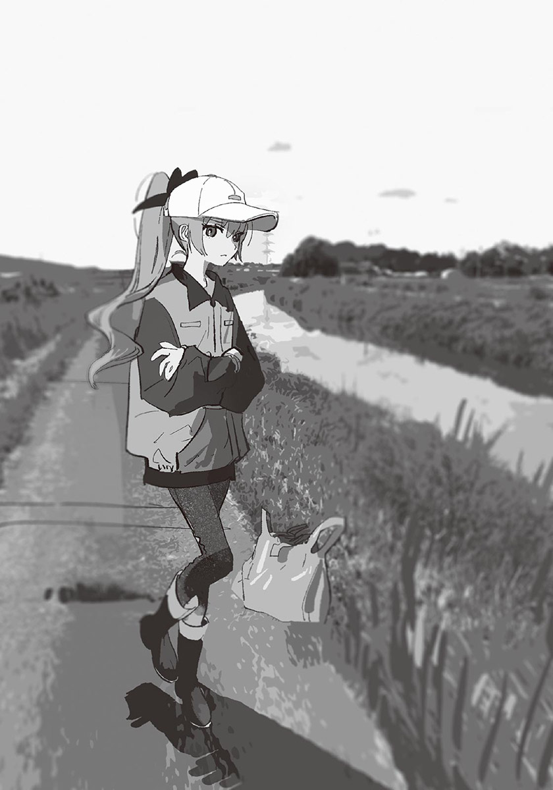她怎麼會在這裡？而且這身打扮一點也不像她。風衣上沾滿泥土，手上戴著棉紗工作手套，像是在拔草似的……
啊，原來如此，是志工活動啊。西園因為打了世良，被判退學，但目前是留校察看的狀態。所以要做志工活動作為補償。話雖這麼說，沒想到她連平安夜都來參加活動……人真的是會改變的呢。
先不管那些，西園現在對我充滿敵意。為什麼？但是冷靜想想，這也是當然的。就客觀看來，看到現在我和小操的狀況，不管是誰，都會警戒我吧。
「喂，妳想叫誰過來？」
「咦，啊……」
被西園一問，小操困惑了起來。說不定是怕生吧。
叫人過來會變得很麻煩的。我插嘴：
「不是的，西園。這是——」
「我不是在跟你說話。」
西園再次狠狠瞪我。我反射性地閉嘴。她還是一樣可怕。
「妳很困擾嗎？」
也許被西園的魄力嚇到了吧，小操戰戰兢兢地回答：
「不，沒有……我沒，事……」
「……是嗎？好啦，那你又在幹嘛？」
得到說話機會的我，開始解釋：
「她是汐的妹妹……正在離家出走。我正好發現了她，可是她想逃走，所以我拉住她。只是這樣而已。」
見小操似乎不想逃了，我放開她的手。也許因為誤會解開了吧，西園眼中的警戒之色消失，取而代之的，是驚訝與有點感興趣的色彩。
「汐的妹妹……哦——就是她嗎？頭髮的顏色不一樣呢。」
小操不敢看西園，朝我轉頭。
「西園……就是那個把轉學生打到住院的……？」
雖然一般而言，傳聞都會加油添醋，不過這次小操說的內容很正確。
「沒錯。就是那個西園。」
「……這樣啊。」
小操吞了吞口水，做好覺悟似地轉身，看著西園。
「妳認識我哥哥嗎？」
「嗯。」
「聽說大家都接受穿女裝的哥哥，是真的嗎？有人說他很受歡迎，還有很多人幫他加油……真的沒有人覺得他那樣子很噁心，很不正常嗎？哥哥學校的人，對他到底有什麼看法呢？」
問西園那種事啊……
這也太諷刺了吧。我心想，瞄向西園。雖然西園仍舊面無表情，但是看著小操的眼神中，帶著憐憫之色。
「……一開始，很多人把汐當成怪胎。不是疏遠他，就是私底下笑他……很少有人能立刻接受他。」
小操認真地聽著。
「但是到後來，大家慢慢接受了他。他很受歡迎，很多人幫他加油，這都是真的。雖然我不知道學校的人真正的想法，但是現在，已經沒有人會笑他了。」
小操露出大失所望的表情。
「為什麼……」
「因為接受的話比較輕鬆吧……而且汐沒有對其他人造成困擾，一直針對他也很浪費體力。」
西園說的很正確。雖然她的口氣平淡，但是只要想到她接受這些的過程中，有多少內心糾葛，就覺得感慨良多。
「妳討厭汐？」
「……」
小操不說話。西園看著她，想起什麼似地把手伸進口袋中。我以為她要拿什麼，原來是一顆糖果。
「給妳。是剛才別人給我的。」
「喔……」
小操困惑地以雙手接下糖果。直到這時，西園總算笑了。
「妳的臉色很難看。聽說妳離家出走，該不會昨晚沒睡吧？還是快點回家休息吧。」
真親切。因為小操是汐的妹妹吧。但說不定也是因為西園和小操有所共鳴。直到不久之前，西園一直拒絕接受汐的改變，並且遷怒周圍的人。正因為對那時的事感到後悔，所以她才希望小操能理解汐吧。
假如是有同樣經驗的西園，說不定能打開小操的心房。
「那我回去拔草了。」
「咦？妳要走了嗎？」
「是啊。工作還沒做完。」
「呃，那個……可以再等一下嗎？」
「有什麼事？」
「那個……可以給我一點建議或之類的……」
西園的眼神變得冰冷。
「沒有建議。那不是局外人能解決的問題。」
正因為有過同樣的經驗，所以特別有說服力。真是傷腦筋。
不過，平常不太可能相遇的兩人，像這樣見了面，也算是某種機緣吧……當我如此心想時，一輛車從前方駛來。我們朝路邊移動，以免擋到車子經過。那輛車子逐漸放慢速度，最後停在我們附近。那是見過的轎車——槻木家的車。
駕駛座的車門打開，雪姨走了出來。
「操！」
她一直線地朝小操跑來，確認小操沒事似地，把雙手放在小操肩上。
「太好了。幸好妳沒事……」
小操尷尬地低下頭。
在我心想「雪姨在的話，汐應該也在吧」時，汐已經從副駕駛座下來了。雖然他應該也很擔心小操，但不像雪姨那樣跑到小操身邊，而是以銳利的眼神瞪著西園。
「亞里沙……」
汐的聲音有點可怕。說不定是在懷疑西園和小操的離家出走有關吧。如果真是那樣，感覺有點可憐，所以我幫忙解釋：
「我們是剛才偶然碰到西園的。她和小操離家出走沒關係哦。」
雖然我這麼說，汐還是凝視了西園一會兒。是在懷疑西園呢，還是對身穿土氣風衣的西園有什麼想法呢……至於西園，她明明能辯解，卻保持沉默。
最後，汐把目光從什麼都不說的西園身上移開，看向我。
「……謝謝你幫忙找到操。」
「沒什麼啦。」
汐朝小操走近。他既不斥責小操，也沒有說擔心的話，只說了一句：
「回去了。」
說完，他拉著小操的手，坐進後座。小操沒有反抗。
雪姨在上車之前，朝我走來。她的臉色很憔悴，頭髮有點亂。應該是拚了命尋找小操吧。
「咲馬，真是太謝謝你了。我們該怎麼答謝你才好呢……」
「沒什麼大不了的啦。我真的沒有做什麼……」
雪姨看向西園問：「妳也有幫忙嗎？」
「沒有……我只是偶然看到他們而已。我什麼都沒做。」
「這樣啊……」
疲勞一口氣湧上來似的，雪姨嘆了口氣。她輕輕揉了揉眉心，收斂表情。
「那我們先回去了。」
我簡短地道別後，雪姨回到車上。
車子離開，只剩我和西園留在原地。
「我也要走了。」
「西園。」
我叫住西園。她不高興地轉頭。
「幹嘛？」
「我覺得妳剛給糖果很好哦。」
「……哦。」
西園走下河床，加入河畔的志工之中。
我在跨上腳踏車之前，向後方回頭。
汐他們的車，已經不見蹤影了。
✽
車子裡充滿沉重的氣氛。
我上車之後，哥哥和雪姨沒說過半句話。昨晚在哪過夜的？為什麼離家？明明有一堆想問的事，卻什麼都不說，感覺很詭異。想罵人的話就快點罵啊。
回家之後，會怎麼樣呢？開家庭會議嗎？爸爸今天應該也會在家裡。全家齊聚一堂，說好幾個小時的話。
就像哥哥穿女裝被發現時一樣。
我真的很不喜歡那次家庭會議的感覺。為什麼全家人一起認真討論問題，會是那麼沉重的氣氛呢？而且這次的氣氛一定會比上次更糟。因為我和哥哥不一樣，我顯然做了不對的事。
心情好憂鬱。馬上就要到家了。早知道會這樣的話，就不要離家出走了。或者是直接前往很遠很遠的地方，讓其他人都找不到。
啊——有夠討厭的——
「……我不想回家。」
我忍不住說了求饒般的話。
聲音比想像中的更清晰，我覺得很丟臉。坐在旁邊的哥哥和雪姨說不定也聽見了。真希望車子的引擎聲和暖氣的聲音能把剛才那句話蓋掉……
雪姨打了方向燈，車子右轉，停在便利商店的停車場。
哥哥訝異地挺起上半身。
「要買什麼嗎？」
「不是。」
雪姨隔著後視鏡看我。
「操，妳有想去的地方嗎？」
冷不防被這麼問，使我怔住了。難道是因為聽到我說「不想回家」嗎？一定是這樣。明明可以裝作沒聽見的。她真的很愛多管閒事。
我沉默不語。「想去哪裡都可以哦。」雪姨又追加了一句。那聲音讓我覺得很不愉快，很想生氣。我才不會被那種話打動呢。
我想剝下那溫柔母親的假面具，所以說了沒特別想去的地方。
「滑雪場。」
「什麼……？」
哥哥露出明顯的為難之色，代替雪姨開口：
「那不是現在該去的地方哦。等寒假再說吧。」
「我想現在就去。」
「我說啊……」
哥哥的聲音中帶著壓抑不住的怒氣。那是我希望雪姨有的反應。
「妳知道大家有多擔心妳嗎？都十五歲了，不要這麼任性。至少要有反省的樣子吧。」
「是雪姨問，我才回答的。有意見去跟她說吧。」
「雪姨是因為關心妳才問的。妳也知道吧？」
「不然我該怎麼回答？說回家是嗎？如果沒有回家之外的選項，從一開始就不要問啊。煩死了。」
「煩死了？不要說笑好嗎？就算叛逆期也該有個限度。給別人添了那麼多麻煩，還不道歉……想去滑雪場的話就自己去啊，去滑到高興為止。」
「好啊。我現在就走——」
「我們走吧，去滑雪場。」
我正想把拉開門把，雪姨開口了。
我不禁停止動作，看向駕駛座。雪姨回頭，讓我們看手機螢幕。
「這間滑雪場開放到晚上九點。現在飆過去的話，可以滑兩個小時。」
那是小時候去過的地方。確實椿岡也只有那邊可以滑雪了，可是……
哥哥以懷疑的眼神看著雪姨。
「雪姨，妳認真的嗎？」
「嗯。滑雪道具到那邊再借就好。而且這車子的輪胎是全季節的，所以沒問題。」
「呃，不是那樣的問題……」
哥哥很困惑。我也不知道雪姨在想什麼。該不會真的打算去滑雪場吧？雖然我沒有滑雪的心情，但是撤回前言的話，感覺就像輸了，所以我不說話。
雪姨收起手機，開始設定導航。目的地是滑雪場。
「汐呢？」
雪姨邊設定畫面邊問。哥哥苦著臉：
「……我也要去。」
「好。那就出發吧。」
車子調頭，朝來時的方向前進。
……真的要去？
我們從交流道開上高速公路。
天已經開始黑了。耀眼的白色路燈等間隔地排列到遠方。根據導航的顯示，離目的地還有一個半小時。到滑雪場時，已經入夜了。
除了繞到便利商店買輕食和飲料之外，一路上，沒有人說話。雪姨專心開車，哥哥以無聊的表情看著窗外景色。車內瀰漫著遠足回程的巴士般疲倦又昏昏欲睡的氛圍。雖然現在是去程的路上。
爸爸留在家裡。因為找我時，驚動了學校和警察，所以接下來還要處理後續事宜。雖然爸爸似乎也想來，可是哥哥透過手機對他說「不要太勉強自己了。」讓爸爸留在家裡。
我從口袋拿出手機。離家出走的期間，我一直在玩手機，所以現在已經沒電了。我收回手機，拄著臉頰，看向窗外。
皮膚有點乾躁。那是因為睡眠不足，再加上昨晚沒有洗澡的關係。想起這些，我突然覺得很不舒服。好想早點洗澡，在暖呼呼的房間裡睡覺。我為什麼要說想去滑雪場呢？
以前，我很喜歡滑雪。正確來說，是和媽媽一起滑雪。媽媽會抱著我似地摟著我的腰，和我一起滑雪。所以我不需要在乎速度，可以盡情地滑，非常快樂。雖然現在我已經能自己一個人滑了，但是感受不到以前的爽快感了。
如果媽媽還活著，我現在一定也很喜歡滑雪吧。
媽媽……
我鼻子一酸，眼眶開始發熱。想起媽媽，我就覺得很想掉眼淚。
有什麼可以轉移注意力的……啊，我再次把手伸進口袋，拿出西園同學給我的糖果，撕開包裝，把糖果放入口中。溫柔的草莓味在舌尖緩緩擴散，安撫了我翻來覆去的情緒。
心情一旦平靜下來，強烈的睡意就朝我襲來。沒人說話，也沒有手機可用，窗外的景色又很單調。最重要的是昨晚沒睡好，所以當然會想睡了。可是在哥哥身旁睡著，就像是讓他看到我的弱點似的，我會覺得很不痛快。
如果真的受不了，就睡吧。不過在那之前，還是要盡量保持清醒——
「——操，操。」
有人在叫我。是哥哥的聲音。
我怎麼了……總之，我挺起原本橫躺的身體。腦袋昏昏沉沉，像快融化似的。這裡是車內……啊啊，對了，我們要去滑雪場。看來我是在半路上睡著了，而且還睡到橫躺在後座，真不像樣。我覺得有點丟臉。
「到了哦。」
哥哥說完開門，颼颼的冷風灌進車子裡。我的睡意瞬間消失，身體整個緊縮。
別說下車了，連動一下身體都很困難。可是不能不動，因為雪姨和哥哥已經下車了。
我灌注力量於腹肌，伸腿踏上地面。
堆積在地面的薄雪發出沙沙的聲音。外頭已經是黑夜了，夾帶細雪的風，不斷奪走我的體溫。
「好、好冷……！」
寒意鑽進骨髓，害我的頭一陣陣地發疼。因為這裡是滑雪場，而且我才剛睡醒吧。不過還是冷到讓人受不了。
「嗚嗚，好冷啊……快走吧。」
「滑雪用品的出租店在那一邊哦。雪姨。」
「哦，是那邊啊……你們有來過這裡？」
「是很久以前來的。」
哥哥帶頭，雪姨跟在他身後。我也縮著身體，跟在兩人之後前進。
我們走進滑雪用品出租店。店的大小和便利商店差不多，店的中央有舊式的煤油暖爐。溫暖的空氣，使我的身體鬆懈下來。
雖然我來過這個滑雪場，但這是我第一次進入滑雪用品出租店。店裡有幾個穿著滑雪服的人，每個人的針織帽與護目鏡都有一層薄雪。應該是來還滑雪道具的吧。在這個時間來借用品的，只有我們而已。
雪姨正想走向櫃檯，「等一下。」哥哥叫住她。
「怎麼了？」
「真的要滑嗎？」
「我是這麼打算的……」
雪姨和哥哥同時朝我看來。
妳呢？他們的眼神這麼發問。
老實說，我現在完全沒有心情滑雪。我只想早點回家，早點上床睡覺。可是……雪姨是因為我的無理取鬧，才特地開車來滑雪場的。如果我什麼都不做就回去，會有一點點罪惡感。而且也會讓雪姨白白浪費時間和體力。既然如此，至少稍微滑一下雪，讓這趟行程有意義。雖然已經太遲了，但我覺得這應該算哥哥說的「有反省的樣子」。
「……我要滑。」
雪姨點頭，哥哥嘆了口氣。
我們三人走向櫃檯，雪姨對店員說：
「不好意思，我們想借整套的滑雪道具。」
櫃檯內，正在寫什麼的店員抬頭，是一名在頭髮做了線條染的年輕女性。
「好的——請在這邊寫上您的資料。」
我們以店員遞出的筆在紙上填寫資料，勾選三個人的衣服尺寸。
「今天晚上的天氣比較不好，如果吹起風雪，請別逞強，要盡早回來哦。」
知道了。雪姨說。
填寫完畢，我們把紙還回去。染了髮的店員姊姊稍微彎下身體，讓視線與我平齊。
「妳也不能和媽媽分開太遠哦。」
「不。她不是我媽媽。」
啊，糟了。
我反射性地訂正。因為不是為了酸雪姨才說的，所以我覺得有點愧疚。雖然那是真心話。
「呃，所以妳們是親戚……？」
店員姊姊顯得很困惑，「哈哈……」雪姨苦笑起來。
忽地，哥哥以手肘輕輕撞我。
「對不起，請不要在意。她是我們的媽媽沒錯。」
「啊，是這樣啊。嚇我一跳……」
店員姊姊嘴上那麼說，但還是以難掩好奇的眼神打量我們。
仔細看的話，會覺得我們長得不像吧——店員姊姊也許是那麼想的。事實上，我們的確不像。因為雪姨和我們沒有血緣關係。
店員姊姊從櫃檯後方拿出靴子和滑雪裝，交給我們：
「更衣室在那邊。」
「啊，更衣室……」
雪姨在意著什麼似地重複著那幾個字，轉頭看店員姊姊指的方向。
店舖後方，有以布簾分開的三個小隔間。與其說是更衣室，更像試衣間。
也許對雪姨的反應有點在意吧，店員姊姊發問：
「怎麼了嗎？」
「啊，沒什麼。」
雪姨走向更衣室。
這麼說來，哥哥在學校時，是怎麼換衣服的呢？廁所是用男廁還是女廁？聽說他在球技大賽中很活躍，參加的是男生組還是女生組？雖然我沒有思考過，不過仔細想想，我全都不知道呢。
應該說，我根本沒有想過去瞭解那些。
在這個八卦傳得特別快的椿岡，我之所以不知道哥哥在文化祭演戲的事，也不知道哥哥在班上還是很受歡迎的事，是因為我故意不聽和哥哥有關的消息。因為害怕知道那些事。可是現在，已經——
想到這裡，我回過神。
哥哥和雪姨已經進更衣室了。我連忙跟了上去。
纜車發出嗡嗡的聲音，載著我們往上方移動。
在夜晚的燈光下，銀色的山坡耀眼到眩目。偶爾會有滑著單板或雙板的滑雪者從我們下方通過。這個時間，大多是高手在滑雪。仔細想想，今天是平安夜。就連這種日子都來滑雪的人，當然是對滑雪特別有愛的人。
匡噹。纜車搖晃了一下，我們腳上的滑雪板撞在一起。雖然哥哥擅長的是單板，不過為了配合我們，所以借的是雙板。
「看！天空好美啊！」
雪姨以滑雪杖指著天空。
我抬頭向上看，「哇！」忍不住發出讚嘆。只在星象儀見過的繁星，正在天空中閃爍不已。真的很美。除了獵戶座的參宿四之外，我不知道還有其他那麼紅又亮的星星。
我瞥了一下旁邊，哥哥也一臉感動地抬頭看著星空。
「好壯觀……」
白色的氣息，朝夜空飛升。
是吧？雪姨附和。
「光是能看到這麼美的星空，來這一趟就值得了。」
「……是啊。」
哥哥也感慨良多地同意。
胸口有些麻麻癢癢的。我不知道該怎麼承受他們兩人的話，只知道不能老實地同意。是啊，幸好有來——如果我開心地說那種話，就太沒節操了。可是，如果我能那麼坦率，早就和哥哥以及雪姨相處融洽了吧。
看到終點了。
我重新握好滑雪杖，準備落地。纜車開始減速，接近地面。
滑雪板碰到地面。
我向前滑行，在平坦的地方停住。
「總之先到下面……雪姨？」
雪姨自顧自地向下滑行。什麼都不說就滑走了……我正這麼想，見到雪姨不自然地向旁邊轉彎，失去平衡，摔倒在地上。
「啊！妳還好嗎？」
哥哥朝雪姨滑了過去。
雪姨坐了起來，難為情地笑著。
「啊哈哈……馬上就摔倒了。」
她把歪掉的針織帽戴好，搖搖晃晃地站起。看起來隨時都可能摔倒。
哥哥向前滑，雪姨跟著前進。這次，她讓滑雪板呈八字形，以滑雪杖撐著地面，向下滑動。這……很明顯是初學者的滑法。我正這麼想，雪姨又摔倒了。
哥哥橫著走到雪姨身邊，伸手拉起她。因為不像可以隨興地到處滑的氣氛，所以我也過去了。
「難道，妳不會滑雪？」
哥哥發問，雪姨垂下肩膀。
「高中時會滑一點點……老了就忘光了。」
哥哥不知該怎麼反應。
也許感受到哥哥的尷尬，雪姨沒事似地搖手。
「不、不過只要稍微練習一下，應該就會找回手感了！沒問題啦！看我的！」
雪姨集中精神似地深呼吸，向前滑出……不過，結果肯定是一樣的。果不其然，她在滑了幾公尺後失去平衡。雖然這次沒摔倒，不過完全停住了。
「看吧！」
不對，這不算進步吧……
難道說，雪姨是運動白痴嗎？仔細想想，雪姨從來沒邀我們做需要活動身體的遊戲。興趣也偏向室內活動，而且也沒聽說她以前學過什麼運動。
如果是這樣……就和媽媽完全相反了。媽媽還沒生病時，每天都精力充沛到我跟不上的程度。媽媽不只會滑雪，也很會打羽毛球和棒球的接投球。不過相反的，做需要細膩動作的事時，就不是很靈巧。
「你們先走吧。和我一起的話，沒辦法盡情地滑吧。」
雪姨略帶自虐地說，「不行。」哥哥毫不猶豫地拒絕。
「我們一起滑吧。滑雪是很危險的運動……要是妳受傷了，我們會很傷腦筋的。」
「嗚……我的心好受傷。」
「……讓重心在前方，就可以穩定了。像這樣。」
哥哥像是在展示正确的姿势一样，轻松地滑了过去。雪小姐则认真地用目光追随着他的身影。【+】
哥哥以正確的姿勢滑了一下，作為示範。雪姨學著哥哥的動作，反覆練習。我在後方看著兩人的互動，以慢到會打呵欠的速度，緩緩下坡。
在那之後，雪姨又摔了好幾次。雖然她的名字裡有「雪」，可是和雪似乎沒有很合得來。而且也沒有體力，滑沒幾下，就開始喘氣了。
老實說，那樣子看起來很遜。每當其他滑雪的人追過雪姨時，我就會替她感到丟臉。在這個時間帶，沒有像雪姨一樣的蹩腳蝦，真希望她快點放棄繼續滑。
雖然雪姨給人什麼都能輕鬆上手的感覺，可是如今，那種形象徹底崩毀了。就算我沒有喜歡她，但是看著她一直摔倒的樣子，還是會心痛。
不過比起我，雪姨一定更覺得痛吧。不是心痛，是肉體的疼痛。應該說，愈往下坡前進，雪就愈硬。因為現在才十二月，積雪還不夠多。在這種狀態下摔倒，和在柏油路摔倒沒什麼兩樣。哥哥看起來也有點擔心。
我們總算見到中間點的纜車站，只要搭那個，就能直接下山了。
「雪姨，要用纜車下去嗎？」
「對不起，我還想滑。感覺再滑一下，就能掌握訣竅了……」
我朝雪姨接近。
她的瀏海因為汗水而貼在額頭，也許是覺得熱吧，胸口的拉鍊是敞開的。消耗太多體力了，她等一下一定會覺得冷。
「不要再滑了啦。」
哥哥和雪姨同時朝我看來。
「我已經看不下去了。摔成這樣……一點也不開心吧？」
「但是我想學會怎麼滑。」
「為什麼？」
「因為妳喜歡滑雪，不是嗎？妳喜歡的事，我也想喜歡。」
現在的我，已經沒有那麼喜歡滑雪了。可是被那麼真摯的眼神看著，我什麼都說不出來。
「那就滑吧。」哥哥幫雪姨回答。
「咦？還要繼續嗎……？」
「沒問題。雪姨有一點一點地進步。我陪雪姨練習，妳先下去吧。」
這樣……我會不安的。
既然無法說服雪姨，就沒辦法了。還是跟著他們滑吧。反正就算先下去，也只是在下面等而已。
雪姨再次練習了起來。
「呼……好累……」
雪姨坐在暖爐前的長椅上，深深地垂頭。
我們回到店裡，換回本來的衣服。到頭來，我們只從最上方滑了一趟而已。因為天氣變差了，而且雪姨的體力已經到了極限。在這種狀態下，雪姨真的有辦法開車回家嗎……
「雪姨，妳還好嗎？」
哥哥發問。雪姨抬起頭，臉上充滿疲倦。她把黏在額頭的瀏海向上撥，眨著快睡著的眼睛。
「唔……好像沒辦法撐到回家了……」
很令人不安的回答。但不是在說笑。
雪姨起身，搖搖晃晃地走向櫃檯。
「那個，不好意思。請問這附近有住宿的地方嗎？」
在櫃檯的店員，還是那位線條染的姊姊。因為除了我們之外沒有其他客人，所以她已經開始做關店的準備了。
「雖然有，不過我想……應該都客滿了哦，因為今天是平安夜。」
「這樣啊……該怎麼辦……」
雪姨的聲音很虛弱，似乎連假裝有精神的力氣都沒了。因為看慣了她平常開朗的模樣，所以我更感受到危機。如果真的沒地方過夜，該怎麼辦？要睡在車子裡嗎？但是連續兩天沒有洗澡，太痛苦了。
「我家是開民宿的，我問問看還有沒有房間好了。」
「咦？真的嗎？」
雪姨的臉上稍微恢復活力。如果有地方睡，我也會很高興。
「雖然不知道有沒有空房間就是了。」
「太謝謝妳了……啊，我想請問一下，民宿裡有浴室嗎？」
「浴室？沒有旅館那種大浴場哦。只有輪流使用的小型公共浴室……不能太期待哦。」
「沒問題，謝謝。」
雪姨道謝後，線條染店員姊姊打電話回家。
那店員姊姊胸前的名牌上寫著「柴」。柴小姐。雖然看起來有點輕佻，但是對我們很親切。那個惡名昭彰的西園同學也對我很親切。人不能只看外表。
「喂？我這邊有人想住宿……三個人。對，一家人。」
柴小姐說了幾句話後，結束通話，看向雪姨。
「有人取消預約，所以剛好有空房間。」
「啊，太好了……真是太感謝妳了。」
雪姨連連鞠躬道謝。
二十分鐘後，我們離開滑雪用品出租店。因為柴小姐也下班了，所以我們一起前往民宿。
我們開著自己的車，從停車場出發。經過便利商店時，在雪姨的提議下，進去買了點東西。因為我們沒有做過夜的準備，得買最低限度的生活用品。
我們走進店裡，雪姨把三人份的牙刷放進購物籃。我站在便當櫃前……肚子餓了。已經超過晚餐時間了。雖然我中午吃過麥當勞，可是現在胃已經空空如也了。
我揉著肚子排遣飢餓感，雪姨和哥哥走近。他們也看起架子上的便當與小菜。
「……晚餐就吃便當吧？」
雪姨的聲音中帶著一點點壓力。她應該沒力氣找餐廳了吧。我也累壞了，而且現在也不是能要求太多的狀況，所以默默點頭。
「啊，你們還沒吃晚餐嗎？」
就在我們物色著種類不多的便當時，柴小姐發問。
「是啊……剛好錯過了晚餐時間。」
「要不要在我家吃呢？今天是平安夜，純過夜也很沒意思吧。啊，要收餐飲費就是了。」
「可以嗎？那就太謝謝妳了……」
雪姨有如在沙漠中得到水的人般深深垂頭道謝。
「那就這麼決定了。」
結完帳後，我們離開便利商店。
我們跟著柴小姐的車，在大約十分鐘後，抵達民宿。那是一間規模比較大的老屋，如果沒有招牌，看起來就和普通民宅沒兩樣。
柴小姐帶著我們前往住宿的房間。
「就是這裡。」
我們來到一間有榻榻米的和室，房間後方有小桌椅，是常見的旅館布置。雖然我沒有什麼期待，但是房間比想像中乾淨很多。
「那就待會見了。」柴小姐說明完使用浴室和退房的注意事項後，離開房間。晚餐似乎會在三十分鐘後完成。
見到哥哥坐在座墊上，我也跟著坐下。我以手指稍微梳理頭髮，但是很快就卡住了，因為頭髮黏黏的。
好想快點洗熱水澡……可是這裡的浴室是公用的，而且其他房客已經決定好入浴順序了，所以我們至少要等到一個小時後才能洗澡。雖然說我是自作自受，但還是覺得很痛苦。
「啊～……好累……」
雪姨一放下行李，立刻倒在榻榻米上。也許直接睡著了吧，她一躺下，就再也不動了。她今天一定很累。一大早就到處找離家出走的我，晚上又來這裡滑雪，當然會疲勞了。傍晚時，她的樣子就已經很累了，今天一天之內，她看起來老了不少。
……啊，又是罪惡感。
我也先休息吧。現在的我，什麼都不想思考。
我們休息到柴小姐來通知我們吃晚餐為止。
吃完晚餐，我們再次回到房間。
總算輪到我們洗澡了。柴小姐說其他房客全都洗過澡了，所以我們可以慢慢來。也就是說，之後是我們自由使用浴室的時間。
「那麼……誰要先去洗？」
「雪姨妳先去吧。」
操，妳也沒意見吧？哥哥問我。雖然我想第一個洗，可是三個人中，最累的人恐怕是雪姨，所以我也同意了。
「那我就先去了……」
平常的話，雪姨會讓我們先洗的。如今雪姨也許已經沒有力氣顧慮其他事了吧，她乾脆地接受這安排。她離開後，房間裡只剩我和哥哥。
哥哥看著我。
「先把被子鋪起來吧。」
「……旅館的人不是會幫忙鋪嗎？」
「這裡是民宿，所以得自己來才行哦。應該吧……」
原來如此。這麼說來，以前住的都是很好的旅館呢……我暗自想著。其實早該在聽說浴室是公用的時就察覺這件事了才對。
我和哥哥一起從壁櫥拿出被子，鋪在榻榻米上。床單的洗衣精味有點重，枕頭很硬。也罷，不至於無法忍受。
我在鋪好的棉被上坐下，伸長腳，揉起大腿。雖然滑得不盡興，但是太久沒滑了，還是有點肌肉痠痛。至於哥哥似乎沒這問題，正站在窗邊看外頭的景色。不愧是每天跑步的人，體力和我不一樣。
我們沒說什麼話地打發時間，雪姨回來了。
「啊。你們已經鋪好被子了嗎？謝謝～」
雪姨一在靠門的被子坐下，立刻砰地向後躺，像是讓空氣從身體洩出似的，嘆了一口長長的氣，安靜地閉上眼睛。
哥哥從窗邊朝我走來。
「妳先去洗吧。妳昨天沒洗澡對吧？」
「你知道？」
「用看的就知道了。」
咦？我髒到一看就知道沒洗澡嗎……？
我突然覺得很可恥，想盡快洗澡。
「啊，操。」
我正想走出房間，雪姨出聲叫住我。她只抬起頭，以快睡著的眼睛看著我。
「我買了很多東西，妳看一下。」
她以眼神看著放在牆邊的便利商店塑膠袋。
很多東西是指什麼？我打開塑膠袋，看到全新的內褲與襪子。被顧慮到這種事……我覺得有點丟臉。不過還是帶去浴室吧。如果不喜歡穿，就直接丟掉。
我迅速拿起袋子，前往浴室。
我仔仔細細地洗過身體後，回到房間。換哥哥去洗澡。
我在床鋪坐下，雪姨扭動身體：
「操～……滑雪還開心嗎？」
她還醒著。明明可以直接睡的……還是說，我把她吵醒了？
「……普通吧。」
「是這樣啊……普通啊……」
在說夢話？她的口齒不清到令我這麼想。她也許已經半睡著了。而且眼睛也是閉著的。
——如果是現在，也許能問出真心話。
如果是現在這個沒有多餘的力氣裝出「溫柔的媽媽」的雪姨，也許能問出她的真心話吧。我吞了一口口水，盡可能自然地開口：
「……我說啊。」
「嗯～？」
「不會難受嗎？」
我右手抓緊床單。
「我老是對妳說很過分的話，做讓妳擔心的事，完全不是好孩子。今天還離家出走，又突然說要來滑雪場……妳應該覺得心很累吧？不會想逃走嗎？是我的話，絕對受不了這種狀況。」
雪姨閉著眼睛，緩緩開口：
「……很難受啊。全是令人覺得心累的事。」
雪姨繼續說下去：
「可是，我不想逃避。」
「為什麼？」
「因為，我已經下定決心了。既然做了決定，之後就只能，掙扎……」
雪姨的話融化在呼吸聲中，聽不清楚後半部的話。呼——呼——她發出均勻的鼻息，完全睡著了。
我不懂她的意思。做了決定是什麼意思？掙扎又是什麼意思？到頭來，我沒能問出想知道的事。可是，我想，剛才那些話應該是雪姨的真心話。雖然我也覺得很不可思議，但我不懷疑這個結論。
這個人是怎樣啊？
我有點傻眼。一直想知道的真實，像雲一樣，沒有形狀……不過也許，真實其實就是這樣吧。
又過了一會兒，哥哥回來了。
「雪姨已經睡了嗎？」
他小聲向我發問。我點頭。
哥哥打開放在牆邊的塑膠袋，拿出有杏仁碎片的百奇巧克力棒。應該是來這民宿的路上買的吧。他拿著盒子，走到窗邊的椅子坐下，打開包裝。
「妳要吃嗎？」
「……好。」
我朝哥哥走去。
「啊，把燈關掉。」
我照哥哥說的，按下門旁的開關。房間瞬間暗了下來，哥哥打開窗邊的檯燈。微弱的橘子色光芒，隱約地照亮窗戶周圍。
我小心不踩到雪姨地前進，在哥哥正對面坐下，拿起巧克力棒，吃了起來。
沙沙，沙沙。
房間裡安靜到聽得見咀嚼聲。也許聲音被雪吸收了吧，或者是因為窗戶很厚呢？總之聽不到外頭的聲音。
「哥哥，你不生氣嗎？」
我戰戰兢兢地發問。
「雖然生氣。不過已經無所謂了。」
「真的嗎？」
「妳想要我生氣的話，我也可以生氣。」
「……不用了。」
我拿起一根巧克力棒。
窗外正下著粉狀的細雪。雖然聽不到外頭的聲音，但有種看大銀幕的無聲影片的感覺。就算一直看也不會膩。應該說，視線會不由自主地被吸引。
「從明天起，我會叫雪姨媽媽。」
哥哥突然那麼宣言。
我很意外，但並不驚訝。
「為什麼這麼突然？」
「如果未來她搞壞身體了，那份罪惡感可能會讓我想死。」
「什麼嘛。所以不是為了雪姨好，是為了自己？」
「是啊。」哥哥沒有任何愧疚感地點頭。看到他那麼大方地承認，我反而有一種是不是自己的想法錯了的感覺。也許真的是那樣吧。
「妳知道嗎？雪姨偶爾會在半夜一個人邊喝酒邊哭哦。」
「咦！」
這下我感到很驚訝。
「第一次看到那場面時，我也嚇了一跳。原來大人也會那樣偷偷啜泣啊……而且聽的好像還是中島美雪的歌。」
「不對，聽誰的歌無所謂啦……那個雪姨？在哭？」
「嗯。她果然很辛苦吧。所以妳也別老是說過分的話。」
「……」
我沉默下來。哥哥咬著巧克力棒。
「就算很有精神的人，會死時，還是一下子就死了。」
「……我知道。」
不要說那麼恐怖的話啦。我心想。
「我……如果能叫媽媽時，我也會叫的。」
「那就是不叫的意思嘛。」
哥哥輕笑。我明明說得很認真。
「還有，那個，哥哥……」
我的聲音有點僵硬。
「叫你姊姊，會比較好嗎？」
「咦？」
哥哥驚訝地看著我。
也許發現我不是在開玩笑吧，哥哥稍微瞇細眼睛。
「……妳想怎麼叫我呢？」
「我想叫你哥哥。」
我立刻回答。
「因為。哥哥從以前就是哥哥。就算你突然說要以女生的方式生活，我也沒辦法接受啊。而且媽媽也說你是男生。住院時，叫你要一直當我的好哥哥……」
說到後來，我的感情壓抑不住地湧上。
「再說，你穿裙子去學校，說不定會被人欺負。小學時，上學的路上不是住著兩個男人嗎？說不定你會像那兩個人一樣，被別人笑，被別人鬧……因為和其他人不一樣的話，會被說壞話。這裡就是那樣的城鎮。所以我希望你維持男人的樣子，不要有任何改變。可是……」
如沸騰的水般滾燙的眼淚，滑落下來。
「聽說哥哥在學校很受歡迎……那樣的話，不就等於我錯了嗎？我討厭這種結論……到頭來，希望你一直是以前的哥哥，只是我的任性想法嗎？這麼一想，我就覺得很難過……所以……」
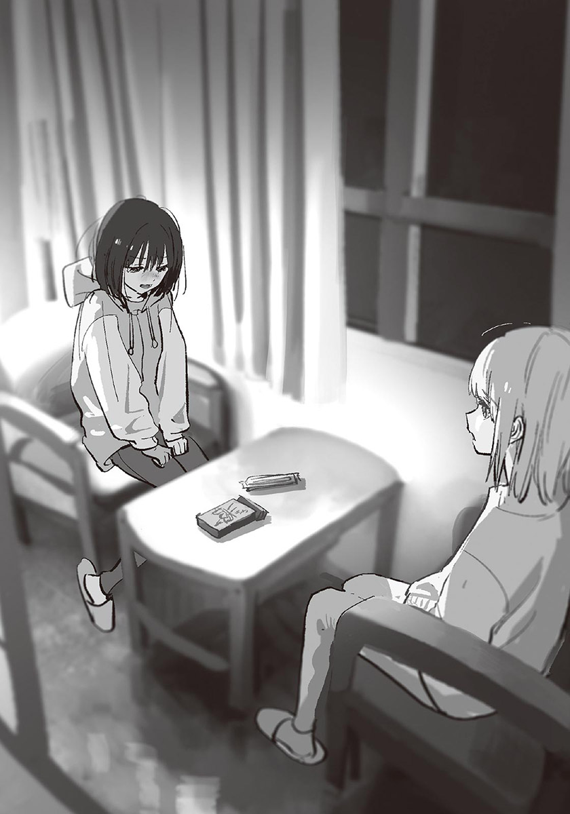啊，不行了。說不下去了。開口的話，會哭出來的。哭出來的話，會吵醒雪姨的。
「操……」
哥哥走到我身邊，蹲在椅子旁，用力握住我的手。哥哥的手很冰冷，很光滑。他什麼話都沒說，只是握著我的手。
等我不再嗚咽，哥哥擔心地看著我的臉。
「冷靜下來了嗎？」
「……嗯。」
哥哥握著我的手，安靜地開口：
「媽媽說的話，我當然記得。要我當好哥哥那句話，我從來沒有忘記。那句話……老實說，很沉重。」
握著我的手的力氣變大了。
「可是，我絕對不會把那句話當成咒縛的。就算那句話本身很沉重，媽媽的愛和溫柔，也一定都是真的。」
「……我也，這麼想。」
哥哥微笑起來。
他回到自己的椅子坐下，伸手想拿巧克力棒，但是袋子已經空了，所以把袋子扔進旁邊的垃圾桶裡。
「叫我哥哥就行了。」
我睜大眼睛。
「可以嗎……？」
「嗯。妳想怎麼叫，就怎麼叫吧。我不會覺得討厭的。」
可以把這句話當真嗎？我不安地試著開口：
「哥哥。」
「嗯。」
「哥哥。」
「什麼事？」
「哥哥。」
「怎、怎麼了？」
「……謝謝。」
哥哥驚訝地睜大眼睛，接著難為情地搔起臉頰。
「差不多該睡了。」
「嗯。」
我和哥哥站了起來。
睡覺前，我們拿著牙刷和毛巾走出房間，一起在廁所刷牙。
我還順便把淚痕洗掉。
那天晚上，我做了以前的夢。
很久很久以前的夢。
我躺在毯子上睡午覺，一旁的媽媽俐落地摺著洗好的衣服。
有什麼戳我的臉。
我轉頭，看到一個男生正在看我。
「操。」
他叫著我的名字，覺得很有趣似地摸著我的臉。
我揉了揉眼睛，把焦點對準在那男生臉上。那男生的嘴角柔和地微笑著，耳朵露在頭髮外頭，眼睛和媽媽一樣，是灰色的。
那男生在我身邊躺下，「操。」溫柔地微笑著叫著我的名字。
每當他叫我的名字，我就會覺得麻麻癢癢的。我有如天空放晴般，一下子充滿活力，腦中都是想玩的心情。我踢開被子，爬到那男生的胸口。
「哥哥～」
我用頭蹭著他薄薄的胸版。都是骨頭，一點也不柔軟。但是很溫暖，而且有和媽媽一樣的氣味。
那是我，最古老的記憶。
✽
「嗯嗯～～……」
雪姨總算從被窩中起來了。
也許因為沒有先整理頭髮就睡吧，現在頭髮翹得亂七八糟。她一面抓著背，一面拿起枕頭旁的手機。但是又因為沒電而把手機丟在被子上。
由於雪姨平常總是比我早起，所以這可能是我第一次看到她剛睡醒的模樣。她半瞇著眼，似乎很難清醒似的，使我有點意外。
「現在，幾點了……？」
「九點半了。」
哥哥回答。我和哥哥坐在窗邊的椅子上，等雪姨起床。我們都已經洗過臉了，隨時可以離開民宿。
「退房時間，是十點吧……該起床了。」
雪姨起身，用力伸了個懶腰。嗯哈～她吁了口氣，放下雙手，開始轉動肩膀。
「早安。你們起得很早呢～」
「是媽媽妳太晚起了。」
哥哥吐槽。
「對不起對不起。我先去洗——」
雪姨僵住了。
但是她又立刻若無其事似地動了起來。她努力裝成「一如往常」的樣子，毫不回頭地走出房間。應該是不想讓我們顧慮她吧。
「啊。」哥哥發現什麼似地叫了一聲。
「她忘記帶毛巾了。」
「……我拿去給她。」
「嗯。交給妳了。」
我接過毛巾。
走出房間之前，我做了一個深呼吸。
——要好好地對自己離家出走的事道歉。還有……
「好。」
我走出房間，把毛巾拿去給媽媽。
「也就是說，你現在和小操處得不錯？」
「算是吧。」
汐一面跑步，一面點頭。
星光閃爍的黎明前。天空染成深藍色。我和汐為了看最早的日出，前往附近的山丘。本來是想騎腳踏車去的，可是我想起汐曾約過我晨跑，所以決定用跑的。
其實我現在有點後悔。離目的地大約還有三公里，但是我的側腰已經開始痛了。而且寒冷還鑽進骨髓。每當吸入冰冷的空氣，我就覺得喉嚨快乾裂了。
「這算否極泰來吧？這樣一來，操也能專心準備升學了。」
「……是說，這樣好嗎？」
雖然說話會讓喉嚨痛，但我有些在意，所以還是繼續說下去：
「小操肯叫雪姨媽媽是好事……不過她還是叫你哥哥吧？所以我不知道你怎麼想……」
「我無所謂。」
這是很纖細的問題，所以我問得很猶豫，但汐若無其事地回答。
「操從小到大都叫我哥哥。突然要她改變稱呼，應該很困難吧。再說，我的第一人稱也還是『僕』。」
與其說無所謂怎麼叫，不如說因為操是妹妹，所以無可奈何。汐是以他的方式在體貼操。
「而且高中畢業後，我就會搬出去了。」
「……這樣啊。」
考上大學，去東京念書後，除非回椿岡，否則汐不會與小操住在一起。雖然我覺得汐的說法有點冷淡，但那是健全、冷靜的想法。沒道理因為是家人，所以非一直在一起不可。
家人是離自己最近的他人——我聽過這種說法。我想，那說法應該是對的。到頭來，能完全理解自己的，只有自己而已。而且，只有想把自己與他人之間無論如何都會存在的隔絕填滿的意志，才能稱為愛情或友情。
「總之她們能和好，我也安心了。下次再去你家玩吧。」
「嗯，我想我媽媽會很開心哦。操也是。」
這樣一來，槻木家應該暫時沒問題了。
我正感到安心，汐一面跑著，一面看手錶。
「……以現在的速度，有點危險。」
「咦？」
「稍微衝刺一下吧。」
汐加快速度。我連忙跟上。
他本來是配合我的速度跑的，不過照這個速度，會趕不上日出。呃呃，我拚命奔跑。早知道平常就稍微練一下跑步了。
說起來，之所以會一起看日出，是為了補償沒能成功的約會。補償是我提議的，因為我覺得這種事要盡快做，但是因為汐說地點由他決定，所以我只是跟著他來。汐選的似乎是沒什麼人知道的好地點。
呼、呼。兩人份的有節奏感的呼吸聲，融化在靜謐早晨的空氣中。冷風刮著臉頰，呼出的氣體是白色的。儘管如此，身體還是因跑步而發熱，背部也泛出一層薄汗。
我專心跑了一陣子，見到目的地的山丘。似乎得跑上山坡才行，但我的體力已經快到極限了……
「只剩一點點距離了。加油！」
我在汐的鼓勵下，擠出最後的力氣，跑上鋪裝過的坡道。
來到山腰時，汐總算停下腳步。這裡的路肩有一片突出的小空地，大小可以停靠一輛小貨車。除了我們之外，沒有其他人。
「呼、呼……就是這裡嗎……？」
我手掌撐著膝蓋，調整呼吸。好、好累……
「來，毛巾。」
「啊啊，謝謝……」
汐從腰包拿出毛巾，我心懷感謝地接過。
我一面擦汗，一面抬起頭，冷風吹起我的瀏海。
眼下是廣大的住宅區，東方的天空開始泛白，吞噬著轉淡的星光。太陽馬上就要升起了。
「趕上了呢。」
「是啊……」
我和汐等著太陽露面。
東方的天空被染成紅色——曙光從山的另一頭驚現。
「噢噢……」
一道光線，如劃破布疋的剪刀般，倏地切開天空。光線愈來愈明亮，天空出現朝霞。明明是見慣了的日出，居然顯得如此壯麗。我完全被眼前的光景奪走注意力。
「好美……」
汐自語著。
「是啊……」
我附和著汐的話。除此之外，不需要其他言語。
等到太陽露出大半張臉時，我轉頭看向身旁的人。
「汐。」
「嗯？」
「今天，我有話要對你說。」
汐朝我看來。
以略帶緊張的眼神，直視著我。
這話本來是想在平安夜說的，但是沒有辦法實現，所以改成現在說。
我搶在迷惘出現前開口：
「我們交往吧。」
自從四年前出第一本書起，我似乎就一直很執拗地描寫家庭的故事。而且都是與世人的理想相距甚遠的家庭。老實說，寫這樣的故事，會讓我心情有點沉重。想到有些人可能因此想起過去的創傷，或者感受到不必要的悲傷，就會很想停筆。
既然如此，為什麼還要繼續寫呢？因為，由十多歲的青少年當主角的話，家庭果然是最貼近生活，最容易出問題的人際關係……這只是事後找的藉口。其實只是因為寫家庭的故事時，我能寫得最順最快的關係吧。對不起。為什麼會這樣呢？我也不太清楚。儘管如此，我對家庭有許多意見，依然是事實。
只要是人類，都會有「家庭就該是這樣」的強烈想法。而且那比「好朋友就該是這樣」、「戀人就該是這樣」的想法更偏頗，更強烈。但就算是一家人，既然是與自己不同的個體，就是完全的他人，即使有不同的價值觀，也是理所當然的。名為家人的關係，是很容易忘了彼此是自己與他人，忘了該互相理解，想把自己的常識套用在對方身上的關係。
當然，世間也有像家庭倫理劇般溫暖和諧的家庭，或者一家人都以相同的常識凝聚共識吧。儘管如此，不論多麼美滿的家庭，一定都會有或大或小的齟齬，可是卻有那麼多歌頌家庭之愛的電影或音樂……也許是因為自己與世間這樣的偏差，才會讓我不斷寫著家庭的故事吧。
不過近年來，世間對完美家庭的信仰逐漸淡薄。時常能見到出現惡劣父母的作品（這話由你說沒問題嗎）。看著那些作品時，我會興起一股該說覺得悲慘？或者「不是這樣」的心情……到頭來，也許我也被囚禁在某種「家庭就該是這樣」的偏見之中吧。
總覺得這些話很曖昧模糊。但既然是後記，寫成這樣也無所謂吧。大概。
接下來是謝辭。責編濱田先生，隨著集數增加，訂正的紅字減少了。我對自己的成長感到些許的寂寥。不過錯字少還是比較好呢。KUKKA老師，謝謝您這次也為本作畫了美麗的插圖。請保重身體，今後也請多多指教。
各位讀者大人，謝謝您們支持這個作品到第四集。希望下次有機會再見。
下一集，就是最後一集了。
二〇二三年十二月某日 八目迷
【中日对照版】
录入：Raindrop213
针对中日一对一的排版会进行少部分内容的增改，修改部分会附带注释【+】，有需要改进的请联系本人
【原EPUB】
輕之國度×天使動漫錄入組
作者：八目迷
插畫：KUKKA
譯者：呂郁青
圖源：拉菲
掃圖：風
錄入：勤奋的懒惰的羊
修圖：我脫褲我在
輕之國度：http://www.lightnovel.cn
天使動漫：www.tsdm39.com
僅供個人學習交流使用，禁作商業用途
下載後請在24小時內刪除，LK與TSDM不負擔任何責任
請尊重翻譯、掃圖、錄入、校對的辛勤勞動
轉載請保留完整的資訊，否則往後一律禁止